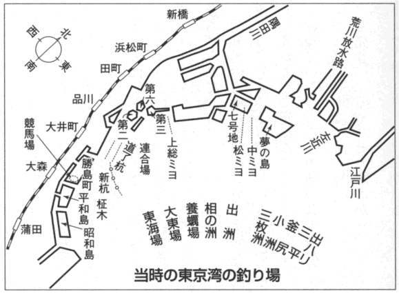

魚釣りと人生は実によく似かよったところがある。女は男を釣り、男は女を釣ろうと思って釣られている。ぼくの釣りも、魚に釣られて帰ることが多い。しかし釣りは、忍耐を教え、辛抱強くさせてくれる。釣りの失敗は、つまり人生の失敗ともいえる。
五十年間の釣りを振り返ってみると、失敗だらけで、何も残っていない。落語も釣りも、未完成のまま、人生の終点が近くなった。
それでも、これからも落語の研究ができ、古典の奥行きが深まり新作がやれ、また釣りのほうも、よい釣り場をみつけ、珍しい釣りの仕かけを考え、大釣りをすることもあるような気持ちがする。といっても、漁師の釣りではないから、一大漁業会社を始めようという野心はない。はなし家の釣りだから、どこまでも遊技的である。
その実、落語も、客に受けようという欲が出るので、いつまでもうまくならない。釣りも、一尾でも余計に釣ろうと思うので、未だに悟りきれずにいる。
近ごろ、レジャーブームという言葉があるが、自分一人楽しんで家族を困らせるのは、娯楽の本質でない。月に一回ぐらいは、家族慰安デーとしたい。子供の好きな映画にも連れ出されるし、ぼくのほうも家内、子供を釣りに連れて行こうと思う。
出版社から、どこまでも初心者が読んで楽しく、釣った魚の料理まで書けといわれたが、何度もいうように、ぼくは釣りもへた、料理もうまくない。ただし、好きということについては、他人さまの二倍も三倍も好きだから、けっこう自分では楽しんでいる。
毎月、『釣りから料理食べるまで』というテレビの番組を引き受けてやっていた。それを、順序もなく一杯飲みながら、駄ジャレまじりにしゃべったことや、子供時分からの釣りの思い出などを書いたのだが、重曹、調味料代わりに川柳、小ばなしを入れ、いわば半端布を切り集めて縫い合わせた漁師の仕事着のようなものである。しょせん、小原女染めほどの風流気は出ない。それに、時代のずれもある。
ぼくなど、釣りしたくをしておいて雨に降られ、舌うちをするようなときに、釣り場の地図を見ている。読者のみなさんも、きっとそういうことがあると思うが、そんなときに地図の代わりにこの本を読んでみてください。きっと、ウップンを晴らして笑っていただけると思います。今後とも、ご教授の水先案内をお願い申します。
昭和三十七年 盛夏
［＃改ページ］［＃ページの左右中央］
［＃改ページ］
毎年一月七日ごろになると、富士の山中湖、伊香保の榛名湖から、「氷結しました。早くおいでください」と、督促状がくる。
ところが、われわれはなし家は、正月が一年中の書き入れどきで、お客様からいただいた木戸銭を税務署へ素通りさせるのに、目の色を変えて騒いでいる。
初席の十日間は、生つばを飲み込んでがまんする。十日過ぎて中席は、誰にはばかることもなく、待ちに待ったワカサギとのあいびきが始まる。
山中湖は、新宿を朝の汽車に乗り、大月乗り換えで吉田へ出て、それから雪道をバス。今では平野村までバスが行っている。旭日ヶ丘から宿へ行かずに、氷の上を釣り場まで歩く。長グツか、駒ゲタに爪皮のついたのが暖かで一番よい。ゲタはすべるので、裏にサイダーかビールの王冠を前と後ろへ四個、釘で裏返しに打ちつけ、クツにはカンジキをつける。そして、氷の上は小股で歩くことだ。
笑ってるやつがすべって大笑い
野天の釣りも楽しみだが、風の強いときは交番のバラックのようなボックスを貸してくれる。戦争前までは、榛名湖に自家用のボックスをぼくは持っていた。中に米俵を敷いて、銅壺カンを半分に切って針金の取っ手をつけた火入れを左に置き、ボックスの戸をしめて釣っていると、氷の上とは思えないくらい暖かなものだ。
ひととき、「入れ食いの
土地の女が、氷の上へ売りにくるドブロクを飲んで、いい気持ちに寝てしまったことがある。夕方、宿屋の若い衆がたずねてきて、
「この人はものすごい人だ。氷の上で酒を飲んで寝たら、凍死してしまうよ」
と、驚かされた。七段目の由良之助ではないが、
「足もとも、しどろもどろの浮き拍子、テレツクテレツク、スッテンテン」
と、案内人の肩につかまって、行った日は早めにきりあげて宿につく。
「こんでいるので
相宿もいいが、ひげのはえた官員さんとはどうも苦手だ。ひとまわり部屋をのぞいて歩くと気の合う釣友が必ず二、三人はいる。見ず知らずの人でも、釣り人は変なスピッツみたいにほえるやつは少ない。少し飲んでいるうちに、十年もなじんだチンコロみたいに、遠慮なく話し出す。
あくる朝は、一番乗りと暗いうちから手あぶりをさげて氷の上へ行く。宿屋の若い者が氷の上に箱火鉢ぐらいの穴をあけておいてくれる。また、ほかの人が掘った後家穴も案外釣れることがある。
この釣りばかりは、寒ければ寒いほど釣れるという妙な釣りで、氷の上にいると、ときどきビリビリと大きな音がする。初めての人は氷が割れたのではないかと心配するが、土地の人は、氷がしまったという。夢に見てさえよいという富士を目の前に、あたり一面の銀世界、清浄感が、あたりを払っている。
強い風の日がある。氷の上にきた物売りが戦争未亡人だというので、ドブロクを買って
「飛ばしたのはおまえのそそうだから捜してきな」
というと、しばらくして、
「どう捜してもわかりませんでした」
と、しおれて帰ってきた。
ほかの物売りがきたので、その話をすると、
「あの女、またそんなことをいっていましたか。いつでも、そういうウソばかりつくのです」
という。
「おれの見ている前で飛ばしたのだから確かだ」
「それで、どっちのほうへ飛んで行きましたか」
「札の行く先は見てなかったが、この紙の飛んで行くほうだ」
と、新聞紙を細かに切って飛ばしてやった。しばらくして、
「だんな、ありましたよ。この百円札でしょう」
そういって置いて行こうとする。
「おまえが見つけたのだから、おまえのものだ。取っておきな。それでなければ、あの女を捜して渡してやってくれ」
「それじゃ、あの女に半分やって、私が半分もらいましょう。そのお礼です」
と、またドブロクを置いて行く。
あとから捜して、拾った札をだまってふところに入れてもわからないものを、この人は正直者だ。「正直のこうべに神
帰りは、山中湖ならば御殿場に出て、熱海へ寄って湯にはいってくる。
まだ十五代目羽左衛門丈が存命のころ、伊豆山の「樋口」という宿が同じで、釣り箱の氷の中から取り出した釣りたての生きのよい、腹に卵のいっぱいはいっているワカサギを焼いて食べてもらったが、「実にうめえなあ」と喜んでくれた。
そのお返しに、来の宮で重箱のウナギをごちそうになり、「東男」と
テレビのある局から、『素人腕自慢料理独演会』という番組を引き受けてしまった。釣る魚によって違う仕かけから釣り方、簡単にできる料理、食べ方までを一人でやる。たまにはゲストに食べてもらうこともある。葦原邦子、十返千鶴子、轟夕起子女史というその道のベテランにご登場願ったが、テレビであるがゆえに、まずそうな顔もできず、ずいぶんご迷惑をかけたことだろうと思う。
釣りもうまくないし、料理もへただが、釣ってきた魚を始末に困って捨てる人がある。釣った魚をそまつにしないで食べてやれば、殺生にはならず功徳になるのだと聞いた。
三十七年一月二十三、四の両日、教育テレビの料理ロケのために、家内や親類の女子高校生を連れて、富士の山中湖へワカサギを釣りに出かけた。近ごろ、よくレジャーブームというが、自分一人で遊んでいたのでは意味がない。ぼくはいつも、女房子供家族同伴で行く。宿は、戦時中の物資不足の時分、ずいぶん無理を聞いてくれた「平野屋」だ。裏に遊んでいる鶏をつかまえてきて、これを料理してくれとだだをこねたりもした。
そのころ、三度三度赤飯を食べさせるので、「何かめでたいことでもあるのか」と聞くと、米のとれない土地なので、配給米のたしにアズキを入れるのだといっていた。ワカサギの釣れないときは、アズキとソバ粉を買って帰った。リュックを背負って帰る途中、巡査に調べられたが、「なんだ、こんなものならよい」とお許しが出たこともある。
久しぶりに電話をしておき、その平野屋に泊まったが、平野村にもずいぶん新しい宿屋ができていて、土地柄も変わったのには驚いた。
ウインタースポーツとしてスキー、スケートが婦人にできて、氷上のワカサギ釣りが女の子にできないわけがないと思う。釣り竿といっても、三十センチぐらいの短いやわらかな鯨穂の竿に黒染め一厘半の道糸。氷の上で白い糸は見にくいからだ。先糸は一厘のナイロン、一メートルぐらいにより戻しをつける。これは糸のよりを戻すためではない。急いでたぐってより戻しの金が氷にカチンとあたると、あと一メートルという目印になる。それに釣り針を五、六本つける。針は袖型の二厘。餌はサシ、大阪ではサバ虫という。一度つけた餌で、半日ぐらいそのままで釣れる。一尾かかっても急にあげないで、十センチ、二十センチとゆるゆるあげてくると、次から次へと釣り針五、六本にワカサギが釣れてくる。一度ていねいに教えてやると、女子供のほうが指先が敏感なのか、ぼくよりよけいに釣ってしまう。
釣りあげたワカサギは、自分の指より細くて白い。見た目にもきれいで上品、食べておいしい。釣った魚を氷の上に放っておくと、すぐに冷凍になってしまう。徳川時代の将軍がこの魚を賞味したので、「公魚」と書くという。
しばらく釣っていると穴に薄氷が張るので、家から灰ふるいを持って行って、それで氷をすくい取る。その灰ふるいを手あぶりにかけて、釣ったワカサギを焼き、これもヤキジューにして食べる。待合の二階で食べる料理より野趣があって、実にうまい。
持ち帰ったワカサギは、串に刺して天ぷらかフライにし、レモン汁をかけて熱いうちに
すべてのものに遺伝という言葉が使えるとしたら、ぼくの魚釣りなども、りっぱに遺伝といえるかもしれない。
明治の初期、水場の本所に住んでいた職人のおやじは、三度のめしより魚釣りが好きで、釣りに行く前の晩には、自分で弁当をこしらえていた。朝早くから、おふくろに手数をかけさせまいとの心づかいだったが、その弁当を忘れて出かけてしまう。
ぼくを連れて釣り場へ行っても、昼めしを忘れていたことがある。「腹が減ったよ」とぼくがいうと、自分も片手に釣り竿を持ったまま、片手でにぎりめしをほおばる。それもゴマ塩のついた小結びで、ひと口で食えるようになっている。家では食べものにうるさかったおやじも、釣り場ではタクアンの香々だけと決まっていた。
魚釣りも年ごとに科学的になったというのか、昔は、寒中のタナゴ釣りも実にのんびりしていた。
ほかの土地では、タナゴという魚は釣り師の眼中にない。「にがブナ」、九州地方では「シビンタ」、「猫マタギ」、中京では「センペラ」といって、相手にしない。タナゴは、江戸特有の釣りものなのかもしれない。
東京の釣り師は、江戸といった昔から、このタナゴを釣らないと、釣り人の恥のように心得ている。
昔の大名は、深川木場の材木堀で、後ろに金屏風を立てまわし、悠然とおしとねにおさまって、左に金蒔絵のお手あぶり、処女の腰元の髪の毛を
ぼくのおやじは、おしとねも金屏風もなしで、腰元の代わりに鼻たれ小僧のぼくを連れて行った。
そのころ、神田川の左衛門橋から和泉橋あたりで、タナゴが盛んに釣れた。柳原の稲荷河岸というところで、川向こうが俗にいう北柳原。この佐久間町に米蔵がずっと並んでいて、蔵の前の往来には、玄米がムシロの上に山のように積んであった。そこへ行って米をかきまわし、米の虫をさがし出す。その虫も
現在、タナゴの定餌は玉虫と決まっているが、当時は卵の黄身をうどん粉にまぜてねり餌にしたり、干しうどんを口に含んで、それを細かに噛み切ってつけるか、飯粒を半分くらいにして、針先につけていた。
釣り竿はサントリという竿で、三本指で食事のときに箸を持つようにして使う。この竿は本所花町の海老屋・小笠原仙之助、俗に「エビ仙」という人が考えついたという。三本つぎ、三尺くらいの芋つぎで、昔、長芋売りが折れた芋に竹の串を刺し、つぎ合わせてごまかしたことから、芋つぎともいう。金具は四分一のいぶしが使ってあるが、この金具も自分で作ったという。手もとに
この竹の出所は、竿師仲間にも秘密であった。根笹だともいっていたが、のれんのように店先にさげて枯らしてあったのを、名人竿忠が見て、
「芝竹というものだ」
といったと、『竿忠の寝言』に書いてある。
そのころから脈釣りが主であったようだ。
釣るほかに飲むあてもある遠出組
戦争中、昔を思い出して
「釣りは師匠をとれ」というが、自己流では何年やってもうまくならないものだ。ぼくのタナゴ釣りは、神田釣友会の中村桝蔵という人に手を取って教えてもらった。今、考えてみると、実に名人であった。
初め、遠くの魚を釣っていて、だんだんと手もとに魚を寄せてくる。しまいには、自分の股の下から釣りあげる。
そのころは、タナゴ針といっても、
今では、タナゴ針もアユの蚊針のように何種類もある。ぼくが現在持っている針だけでも「ミコシ」、「流線」、「袖型」、「長袖」、「狐」、「半月」、「新半月」、「豆小袖」、「アブミ」、「ハヤガケ」、「ひねり」、「新タナゴ」等々。大きさも一厘から三厘くらいまで。それに「金がけ」、「銀がけ」、「いぶし」……、いやどうも、まことにうるさいことである。
このタナゴの競技会も、数釣りと目方釣りとたいがい二回くらいやる。目方釣りのほうは魚の形の大きいものをよって釣る。また、数釣りのときは、魚の小さいのをよって釣る。名人級になると、両手に約五百尾持てるくらいである。
名人はタナという字をよけて釣り
タナゴなどという小さい魚に、心魂を打ち込んで夢中になるのはなぜだろうか。――複雑多種な
流れのある川の杭がらみ、石垣のくずれ、
ぼくは、この小さなタナゴに魅せられて、千葉県佐倉の鹿島川の鉄橋で汽車にはね飛ばされ、半年も入院したのだから、実にあっぱれなものと自分でも思っている。
この釣りは寒タナゴというくらいで、寒中に限ったものだが、このごろでは十二月から盛んに釣るようになった。
釣り道具といっても、竿は六寸じまい、十二本つぎ、四尺から六尺まで。弁当箱ぐらいの釣り箱で、この釣り箱も、昔、深川猿江の「桶金」というのがタガなしで有名であった。
タナゴを釣るときは、右手に竿を持ったきりで、餌の玉虫は必ず左の手のハサミで切る。ハサミも寒中使うので、腰のやわらかいものを選ぶ。ハサミにつけるヒモも長さが決まっている。
戦争中のやかましいときでも、ごく身軽に出かけられた。それにタナゴ釣りは、はなし家に都合のいいことには、われわれ仲間と同じようにこの魚も朝寝坊で、九時、十時と水のぬるむころから食欲が出る。それと、都会から近いところに釣り場がある。
紋付きの着物のすそをはしょってズボンをはき、毛糸のジャケツにオーバー、スキー帽に長グツというようないでたちである。このかっこうのまま釣り場から楽屋にはいるのを出抜けというが、友だちは、
「まるで文化村のかかしだねエ」
という。
二三人土手のたき火やタナゴ釣
昭和二十九年、ぼくがケガをした年の日記を見ると、正月一ヵ月に十日間タナゴ釣りに出ている。百五十尾ぐらいの釣り高だが、竿も鯨穂と決まっている。
オモリは両環の
正月の枯れたワサビおろしのようなたんぼの向こうの農家から、餅を焼くにおいが風に流れてくる。足もとの霜柱がグズグズとくずれる。遠くからシシ舞いの太鼓が聞こえてくる。タナゴ釣りは、ウインタースポーツとして、みなさまにもぜひおすすめしたい。
たしか戦争前であったか、寒中二、三人で東上線志木駅下車の柳瀬川へタナゴ釣りに出かけたが、連れの百面相の鶴枝という男が足をすべらして
ようやく火を踏み越えて外にはい出たが、厚着の着物が熱をもって着ていられず、脱ごうにもずぶぬれの着物はなかなか脱げず、とうとう泣き声をあげてしまった。
タナゴ釣りや寒ブナ釣りに、よく釣り師が野原でたき火をするが、よく心得ておかないととめどなく燃え広がっていって、恐ろしくなることがある。つい最近になって、『伊勢物語』を読んでいると、武蔵野の野火について出ていた。草を焼く火がひと区切りの川まで燃えねば消えぬもの、と書いてあった。今を昔に思い出し、恐ろしいことであった。
釣って持って帰ったタナゴは、小刀かハサミで腹に傷をつけて押すと、黒いワタが出る。これをつまみ出し、よく洗って水をきっておき、細かい金網で焼く。皿に醤油を注ぎ、化学調味料を入れて少し薄めたのに焼きたての魚を入れると、「ジュー」と音がする。釣り師はこれを「ヤキジュー」という。「粉ザンショウ」をかけて頭から骨ごと食べる。フナの雀焼きに対して、これはタナゴの雀焼きであり、ほろにがいのが特徴である。戦前までは、両国橋の近くに「武蔵屋」という佃煮屋があって、これを売り物にしていた。
釣り雑誌誰にも釣れるように書き
釣る馬鹿を見ている馬鹿と馬鹿がいい
春の釣りくたびれ足や釣りの宿
彼岸中女房に釣りを禁じられ
釣る馬鹿を見ている馬鹿と馬鹿がいい
春の釣りくたびれ足や釣りの宿
彼岸中女房に釣りを禁じられ
釣りはフナに始まってフナに終わる、とよくいわれる。フナは誰にもたやすく釣れるが、釣っていくうちにだんだんむずかしくなり、なかなか奥義に達しない。
ぼくは五十年間釣りをしているが、フナ釣りではいまだに、こんなときはどうして釣ったらよいか、と迷うことがたびたびある。寒中はタナゴとワカサギを釣っているので、寒ブナ釣りにはあまり多くは出かけないが、戦争中は鶏と卵が買えるので渡良瀬川によく行った。
浪曲の二代目東家楽遊君が部屋村に疎開していて、この人に連れられて行って教えてもらったが、ここは舟で竿を三本ぐらい並べるボッタの脈釣り。舟宿に頼んでアンカを入れてもらって釣るのだが、初めのうちは、あたりがわからずに、打ち返そうと思って静かにあげてみたら、フナがついていた。釣ったのではない、向こうから釣れてきたのである。何かフナに教わっているようで面目ない。
あとで聞いたことだが、寒ブナは居食いのときが多いから、ときどき、きいてみることが必要だといわれた。水が冷えてくると、フナも動くのがおっくうになるのか、フナの通路を捜しあてるのがひと苦労である。舟のこげない者には船頭がこいで行ってもやってくれる。
二月節分の寒明けでタナゴの竿をふき、道具をしまい、フナの巣離れにかかる。
昭和二十七年の釣り日記を見ると、
二月二十四日 日曜日 千葉県神崎高校の講堂で、町内慰問演芸会を催す。
釣り師はとかく田のあぜを踏み荒らし、土地の人にきらわれる。その万分の一のおわびにも、という気持ちからである。当日のメンバーはと見れば、
釣り師はとかく田のあぜを踏み荒らし、土地の人にきらわれる。その万分の一のおわびにも、という気持ちからである。当日のメンバーはと見れば、
落語 三遊亭銀馬
琵琶 稲田黄洋
落語 勝太郎
物真似 江戸屋猫八
曲独楽 三増紋也
万才 弥次喜多
獅子舞 今村恒美画伯
琵琶 稲田黄洋
落語 勝太郎
物真似 江戸屋猫八
曲独楽 三増紋也
万才 弥次喜多
獅子舞 今村恒美画伯
このほか、作家の土師 清二先生、『水之趣味』の青山浩氏、竿師の稲荷町東作氏三人のあいさつ、毎日新聞写真部同行という豪華版である。
ラジオでは聞いていても、生きた実物は初めてという人が多いので、たいそう喜ばれ、校庭に露店商が出るというほどの騒ぎである。
夜、九時半に終了。山田屋旅館にて宴会。神崎釣友会連中と懇親の座談会。土地の醸造家より酒の差し入れあり。銀馬、猫八両君のかくし芸あり。大いに飲み、大いに酔って寝る。
二月二十五日 六時起床。八時出発。渡し舟にて八時半、戸指川に着く。
神崎釣友会高橋君の案内で、喜三郎ともども三人にて舟釣り。水門から電線までの間好天なれど雪代にごり、ヘラブナをやった人はほとんどアブに近い。
青山氏に土師先生、舟より土手にあがり、キジとボッタにて探る。ぼくのほうはどまん中にオダがあり、水棹 にて探り、その近くに舟を横づけして、三人並んで釣り始める。竿は丈一と二間の二本竿の唐辛子 ウキ。寒いうち、こんな水の動かぬところではなるたけ軽い仕かけがよい。
巣離れの早いうちはフナがそれほど動かないので、食わなくなったら河岸 を替える。
喜三郎がフナを釣るたびに、フナを見ないで竿のしない方を見ろというのだが、年の若いせいか、竿は見ないで魚ばかり見ている。
二時、納竿。三十四尾。うち、五寸以上のが十尾あった。早いうちのフナとしては上出来である。
四時四分、郡駅発。六時五十分帰宅。それより夜席を二軒つとめる。
三月十二日 四時半起床。朝食もとらずに鶯谷駅に駆けつける。駅では、表口へまわらないと郡までの切符はないというので乗り越しにする。
六時四十六分、千葉発。八時十分、郡着。
高橋君が迎えに出ている。先日の慰問ですっかりなじみになってしまった土地の子供たちが、向こうから並んできて、「バンザイ、バンザイ」と手をあげてくれる。面目ないような嬉しいような気持ちになる。駅員諸君まで喜んでくれる。
いつであったか、国鉄のパンフレットに、「私の一番好きな駅」というので、この駅のことを書いたことがある。
そのころは、まだケバケバしたネオンや野立て広告がなかった。それに、そのころでもなかなか見られない乗り合いのホロ馬車があり、ぼくがときどき馭者台に乗って、シンチュウのラッパを吹いてやった。また手こぎの渡し舟、いずれはなくなる運命にあるものだが、東京近くでは珍しかった。
縁というものはあるもので、この馬車屋の馭者が、お人よしのはなし家の先輩・立川談志君の親戚だという。馬もなかなか要領がよく、駅前を出るときだけ駆け出すが、一丁も行かないうちにゆるゆると歩き出す。足の早い釣り師は、馬車を追い越して先へ行く。馬車賃は二十円で、渡し舟は十円であった。今では郡駅といわず、下総神崎 駅となった。会長の木内氏宅に寄り、渡し舟で利根を渡って、戸指川まで歩く。水門とバラの間の南側に舟を着けて、ボッタとキジで釣り始める。晴れてはいるが、まわり風で冷たい。コブばかり釣れるので、電線まで行ったが思わしくない。また、前のところに戻る。
三時に納竿して、九十六尾。帰り道、今年こそ利根のスズキとヤマベをやってみたいと話しながら、四時半に木内氏宅へ寄ると、神崎釣友会の連中が集まっている。酒を買ってもらい、飲みながら釣りの話になる。
この土地のフナは、早いときでも、ボッタより細めの小さいキジを二、三びきのチョンがけがつけよいし、また、食いもよいと教えてくれる。
連中が、「ぜひ泊まって、あしたまた釣っていけ」というので、“下地は好きなり御意 はよし”と泊まる。
三月十三日 時計が止まっていて、寝坊してしまった。七時に起きて、きのうの仕かけを直し、したくにかかる。何によらず上には上があるもので木内氏の家ではヤマベに使うサシからキジ、ボッタまで囲ってある。
外に出てみると、晴れているが北風が寒い。きょうは、若い山本君が案内してくれる。渡し舟もなじみになって、金はいらないという。「わずかばかりだが、田地でも買いねえ」と舟番小屋へ十円払う。
一番の上 り列車の着くまでの渡し舟は、向こう地からくる野菜を背負った女の人が多い。自転車、リヤカーなどもうまく舟に乗せる。
土手にあがると、気持ちのよい春先の風が吹いている。ムジナまで三十分で歩く。
舟を借りて、ポプラ前の東側ヘチへ風を背にして横づけにし、ウキ下七尺、細キジをよってつけ、三十分も打ち返したがあたりなし。
土地の人は、「朝早く、電気をやりましたよ」という。そんなことをしてまでフナをとって売るのかしら。河岸を替えてどまん中へ舟を出し、釣り始めると、コブながらぼつぼつ釣れる。きょうもボッタより細いキジがよい。
牛を舟に乗せて棹をさし、静かに向こう岸へ渡る人がある。編笠にかすりの着物を着たまだ若い女の人である。三時、納竿。きのうと同じくらいの釣果 だが、たいへんおもしろかった。
向こう地の土手下の茶屋で、極内 でドブロクを飲ませてくれる家がある。黙って奥へはいって、しばらく休んでいると、ドンブリ鉢で持ってきてくれた。コンニャクの煮たのをほおばって渡し舟に乗る。灰色の川水は雪代 らしい。
木内氏宅へ寄り、表の酒屋で一升買ってもらって飲み始める。山本君へのお礼のしるしと色紙にカッパの絵をかいたが、われながらうまくない。
今夜も泊まっていけといわれたが、ふた晩続きで三日目はからだがもたない。飲んでいるところへ、乗り合い馬車屋のおやじが、「出ますよ」と声をかけに寄ってくれる。
五時五十八分、郡発に乗って、八時四十分帰宅。
巣離れといっても、フナはすでに乗っ込み体勢になっている。
ラジオでは聞いていても、生きた実物は初めてという人が多いので、たいそう喜ばれ、校庭に露店商が出るというほどの騒ぎである。
夜、九時半に終了。山田屋旅館にて宴会。神崎釣友会連中と懇親の座談会。土地の醸造家より酒の差し入れあり。銀馬、猫八両君のかくし芸あり。大いに飲み、大いに酔って寝る。
二月二十五日 六時起床。八時出発。渡し舟にて八時半、戸指川に着く。
神崎釣友会高橋君の案内で、喜三郎ともども三人にて舟釣り。水門から電線までの間好天なれど雪代にごり、ヘラブナをやった人はほとんどアブに近い。
青山氏に土師先生、舟より土手にあがり、キジとボッタにて探る。ぼくのほうはどまん中にオダがあり、
巣離れの早いうちはフナがそれほど動かないので、食わなくなったら
喜三郎がフナを釣るたびに、フナを見ないで竿のしない方を見ろというのだが、年の若いせいか、竿は見ないで魚ばかり見ている。
二時、納竿。三十四尾。うち、五寸以上のが十尾あった。早いうちのフナとしては上出来である。
四時四分、郡駅発。六時五十分帰宅。それより夜席を二軒つとめる。
三月十二日 四時半起床。朝食もとらずに鶯谷駅に駆けつける。駅では、表口へまわらないと郡までの切符はないというので乗り越しにする。
六時四十六分、千葉発。八時十分、郡着。
高橋君が迎えに出ている。先日の慰問ですっかりなじみになってしまった土地の子供たちが、向こうから並んできて、「バンザイ、バンザイ」と手をあげてくれる。面目ないような嬉しいような気持ちになる。駅員諸君まで喜んでくれる。
いつであったか、国鉄のパンフレットに、「私の一番好きな駅」というので、この駅のことを書いたことがある。
そのころは、まだケバケバしたネオンや野立て広告がなかった。それに、そのころでもなかなか見られない乗り合いのホロ馬車があり、ぼくがときどき馭者台に乗って、シンチュウのラッパを吹いてやった。また手こぎの渡し舟、いずれはなくなる運命にあるものだが、東京近くでは珍しかった。
縁というものはあるもので、この馬車屋の馭者が、お人よしのはなし家の先輩・立川談志君の親戚だという。馬もなかなか要領がよく、駅前を出るときだけ駆け出すが、一丁も行かないうちにゆるゆると歩き出す。足の早い釣り師は、馬車を追い越して先へ行く。馬車賃は二十円で、渡し舟は十円であった。今では郡駅といわず、
三時に納竿して、九十六尾。帰り道、今年こそ利根のスズキとヤマベをやってみたいと話しながら、四時半に木内氏宅へ寄ると、神崎釣友会の連中が集まっている。酒を買ってもらい、飲みながら釣りの話になる。
この土地のフナは、早いときでも、ボッタより細めの小さいキジを二、三びきのチョンがけがつけよいし、また、食いもよいと教えてくれる。
連中が、「ぜひ泊まって、あしたまた釣っていけ」というので、“下地は好きなり
三月十三日 時計が止まっていて、寝坊してしまった。七時に起きて、きのうの仕かけを直し、したくにかかる。何によらず上には上があるもので木内氏の家ではヤマベに使うサシからキジ、ボッタまで囲ってある。
外に出てみると、晴れているが北風が寒い。きょうは、若い山本君が案内してくれる。渡し舟もなじみになって、金はいらないという。「わずかばかりだが、田地でも買いねえ」と舟番小屋へ十円払う。
一番の
土手にあがると、気持ちのよい春先の風が吹いている。ムジナまで三十分で歩く。
舟を借りて、ポプラ前の東側ヘチへ風を背にして横づけにし、ウキ下七尺、細キジをよってつけ、三十分も打ち返したがあたりなし。
土地の人は、「朝早く、電気をやりましたよ」という。そんなことをしてまでフナをとって売るのかしら。河岸を替えてどまん中へ舟を出し、釣り始めると、コブながらぼつぼつ釣れる。きょうもボッタより細いキジがよい。
牛を舟に乗せて棹をさし、静かに向こう岸へ渡る人がある。編笠にかすりの着物を着たまだ若い女の人である。三時、納竿。きのうと同じくらいの
向こう地の土手下の茶屋で、
木内氏宅へ寄り、表の酒屋で一升買ってもらって飲み始める。山本君へのお礼のしるしと色紙にカッパの絵をかいたが、われながらうまくない。
今夜も泊まっていけといわれたが、ふた晩続きで三日目はからだがもたない。飲んでいるところへ、乗り合い馬車屋のおやじが、「出ますよ」と声をかけに寄ってくれる。
五時五十八分、郡発に乗って、八時四十分帰宅。
巣離れといっても、フナはすでに乗っ込み体勢になっている。
ぼくは子供のころから、普段は日記をつけたことがないが、釣り日誌だけはたんねんにつけている。自分で書かないときでも、同行の者に、天気、潮どき、時間、船頭、案内人、賃金、釣果を書いてもらう。それを、何年か過ぎて取り出してみるのも、実に楽しい。あのときこうすればよかった、ということが、――フナばかりではないが、――とくにフナについてはそれが多い。
フナも乗っ込みになれば、どこへ行っても、誰にでも、いくつか釣れるものだが、そのうちにもまた、場所、水色、仕かけ、釣り方のうまいまずいがある。
ぼくは、春の乗っ込みブナ釣りと秋のハゼ釣りには、家内も子供も連れて行く。手数はかかるが、また楽しいものだ。初めのうちは、ミミズがつかめないの、ゴカイがくいつくからいやだのといっているが、釣れ始めると夢中になり、平気でつかんでいる。好きになれなくても、こわくないようになる。
一度、摘み草を兼ねて、ハイキングのつもりで土浦の旧桜川へ出かけたとき、家内も子供も尺ブナを釣りあげた。土手に放り出して、フナをドロだらけにしてしまったが、家内もそれからというものはフナ釣りが好きになった。
つくし摘む少女にフナを見せて行く
千葉県佐原の荒兼へもよく泊まりがけでフナを釣りに行った。小舟で
四月十一日 釣り竿師喜三郎を連れて千葉県大戸駅へ行く。四時五十分に家を出て、鶯谷表口で大戸までの切符を二枚買うと、駅員が、「どこかで聞いたことのある声だなあ」という。
六時十分、千葉駅で電報を打つ。
「カヨコサンペイ コンレイニテ キサブロウ ウチニトメタノヲ ツリニツレダス」
八時十八分、大戸着。桜が満開。釣り場まで三十分歩く。
八間左の細を、探りで静かに釣っていくと、土地の人らしいのが自転車を置いて釣っている。あまり細の川ぎわを立って歩くので、深さ二尺ぐらいではフナが落ちついていつけぬらしい。土手の上から見ていると、浅いのでフナがときどき走っている。ヘラブナのようなにごりも見える。
二間半の竿に道糸を六尺ぐらいにつめて、白の三分玉ウキ三つ、貝がらしもりで葦 の芽がかわいらしく出ている根もとを探ってみると、いったん沈んだ玉ウキが、ふわふわと浮きあがる。静かにきいてみると、モクモクというあたり。八寸くらいの乗っ込んだりっぱなフナだ。玉網を使えば針素 八毛でもよいが、道糸一厘にして、絹の吸い込みを使うほうが能率的でよい。
三時にあがろうと思ったが、ぼつぼつ出るので五時まで釣る。出た穴を覚えておいて行きに芋ねりをまいておき、帰りに芋ねりを使っておもしろい釣りができた。二十六尾だが型がよく、六寸ぐらいのハヤとヤマベが一尾ずつ出たのもおもしろい。
五時五十九分、大戸発で帰る。
六時十分、千葉駅で電報を打つ。
「カヨコサンペイ コンレイニテ キサブロウ ウチニトメタノヲ ツリニツレダス」
八時十八分、大戸着。桜が満開。釣り場まで三十分歩く。
八間左の細を、探りで静かに釣っていくと、土地の人らしいのが自転車を置いて釣っている。あまり細の川ぎわを立って歩くので、深さ二尺ぐらいではフナが落ちついていつけぬらしい。土手の上から見ていると、浅いのでフナがときどき走っている。ヘラブナのようなにごりも見える。
二間半の竿に道糸を六尺ぐらいにつめて、白の三分玉ウキ三つ、貝がらしもりで
三時にあがろうと思ったが、ぼつぼつ出るので五時まで釣る。出た穴を覚えておいて行きに芋ねりをまいておき、帰りに芋ねりを使っておもしろい釣りができた。二十六尾だが型がよく、六寸ぐらいのハヤとヤマベが一尾ずつ出たのもおもしろい。
五時五十九分、大戸発で帰る。
同じ桜どきに、神田釣友会でも、この細でうわずったフナをふかし釣りでおもしろいほど釣ったことがある。初め、しもりの探りで釣り歩いていたが、教わったとおりにオモリを取り、三寸と二寸の二本
「浅いところで釣れますか」などと、ドカドカ長グツで寄ってくる人があると、竿をあげてタバコを取り出し、「出ませんね」と答える。「フナがうわずっているから、これじゃ食いませんよ」と行ってしまう。
竿をふたたび取り直して、遠くへ風で送らせて流すとあたりがある。人がくると竿をあげてまたタバコをすう。マコモの根ぎわに静かにおろすと、一荷ずつ釣れる。
このときも芋ねりをまいたが、
近ごろでは、「フナは足で釣れ」という。ぼくなど足の弱い者でも、釣りから帰って五万分の一の地図を見ると、一日釣りながら十里歩いていたということがたびたびある。
千葉県大戸と下総神崎の間は、線路添いに四・五キロとしてあるから一里ちょっとだが、曲がりくねった細を釣りながら歩くので、五、六里はある。この間を釣り歩いた。またあるときは、神崎向こう地から小見川まで歩いて、バスで
四月の声を聞けば、どこへ行ってもカラあぶれのこともないが、「その池は、きのう、かい掘りしたばかりだよ」というところへ出っくわすし、「朝、電気をかけたよ」などといわれることもあるから、よくよく調べてかかることだ。
これも、神崎向こう地のおっぽりでのこと――、ほかの細で探りながら行ったので、友だちよりおくれて着くと、
「さっき、土地の者が電気をかけていたのでにらみつけてやったが、まだ
と、釣友はほかへ行ってしまった。
深さはあるし、まずやってみようと、そのあとへすわって二間半の竿で、キジを餌にどまん中へ打って、二、三回打ち返してから引いてみると、確かな手ごたえ。竿は弓なり、ためつなだめつあげてみると、一尺一寸のマブナである。わきで木内氏が見ていて、「電気をかけても、時間がたって深さがあれば、やれるものだねえ」と、いわれた。
木内氏宅で魚拓に取って、帰りに成田駅でゴム印をおして尺ブナ賞をもらい、「今年の尺ブナ賞は、師匠が第一号ですよ」といわれて、子供のように喜んで帰ってきた。そんなことがあってから、四月のフナは、水のあるところは竿を入れてみることにしている。
これも神崎向こう地でのこと。土手をあがって左へ行くと、手ごろな細がある。それを通り越して、おっぽり、脇川、ムジナ塚と釣り歩いたが、コブ二、三尾。がっかりして帰り道、行きに見て素通りした土手の下の細、もちろん初めから釣るつもりはなく、あまり歩いてくたびれ休みに立ちどまってみると、どんづまりではない。古利根の掘り込みへ通じている。
二、三日前の雨で、おあつらえの笹にごりのドロ流れ。白玉ウキの探りの仕かけをヘチに入れてタバコをすっていると、今入れたばかりの玉ウキが横に動いた。竿尻に手をかけて静かにきいてみる（そろそろ竿をあげること）と、ズシンと手ごたえ。深さが二尺で幅も一間ぐらいの
このときは、よい型のフナばかりでなく、一尺から一尺五寸ぐらいのナマズが五、六尾出た。五時ごろから日の暮れるまでに、二貫目も釣りあげたが、おかげで終列車にやっとまに合い、かろうじて帰ってきた。まだこれからも、フナの思い出、玉ウキの静かに沈む夢を見続けるだろう。
江戸小ばなしに、師直、家来を連れて
「殿様、何が釣れましたか」
「フナだ、フナだ」
フナを釣って帰ってきて、これをうまく食べるのは、なかなかむずかしい。
上方では、マグロは刺し身といわず、オツクリ。フナだけを刺し身という。
春先から初夏にかけて、往来を
フナ刺身気のへるほどにアラを出し
三センチから五センチぐらいまでのフナは、ヤキジューの雀焼きか、あっさり煮つけてコブ巻きの中に入れる。俗にフナの小さいのをコブと呼ぶのはこのためだ。
十センチぐらいのフナは、
が、そんなことをしないで、フナを鍋にいれたら、フナのかくれるくらいなみなみと水を張り、これをトロ火で水のなくなるほど煮つめる。新規に水をたして、これをフナすれすれぐらいまでになったところへ、醤油と砂糖で適宜に味をつけておいた汁を入れる。初めから醤油を入れるとフナが堅くなる。つやを出すために水アメを入れる人もある。
ほどよく煮つまったころ、火からおろして自然にさます。それまでは、いっさい箸をつけない。火からおろしてさめてから、くずれないように入れ物に取る。
大正の末期から昭和の初めごろまで、夢中になったぼくの魚釣りも、重病人が紙一枚ずつはがすように全快するごとく、釣り道具の手入れもしなくなっていたが、太平洋戦争が夜店の植木屋みたいに大負けに負けたあげく、ぼくも焼け出されて玉川の尾山台にしばらくいたことがあった。
ぼくは芸人仲間では異端者扱いをされるくらい早起きで、四時半、五時になると、意地でも寝ていられない。ぼくが起き出すと、自然、家の者も起きなければならないことになるので目がさめると、それこそどろぼうのように釣り竿とビクを持って、こそこそと家を出る。一丁も歩くと、
『芝浜の皮ざいふ』のように、流れに膝まではいって顔を洗う。餌の川虫をとっていっぷくやる。そろそろと竿をつないで、釣りしたくにかかるというあんばいである。ハヤとヤマベを釣って、八時ごろに納竿して家へ帰ると、ちょうど家の者が起きだしたところだ。
四、五月ごろを最盛期にする川のイワシといわれるヤマベとハヤが、毎朝の食膳を飾る。少ないときでも二、三十尾は、それこそ朝めしまえに釣ってくる。
一日、竿を持たずに河原をぶらぶら歩いてみたが、一丁も歩くとすぐに飽きてしまった。釣れても釣れなくても、竿を持って河原を歩いていると、何とはなしに心がはずんで、知らず知らず二子玉川まで二里以上も歩いて、電車に乗って帰ってきたことが何度もある。
オリンピックは、勝つことでなく、参加することに意義があるそうだが、この言葉はわれわれ釣り師にも全くピタリとくる。昔はご隠居さまのお道楽みたいにいわれていた魚釣りも今ではりっぱなスポーツであるから、当然ながら、ひじょうに味わい深い言葉だと思っている。釣るというからには、大釣りをしたいことは誰しも望むところであるが、何をしてでもたくさん釣ればよいというものではないのである。
ところ変われば品変わるというが、品は変わらないが魚の釣り方も変わるので、いっそうおもしろ味も増すのである。川のイワシとあだ名される関東のヤマベも、学名を「
大阪で紀の川、紀伊清水でも寒ハス釣りをしたが、東京の釣り師は寒中、タナゴ、ワカサギは釣るが、ヤマベを釣る人はほとんどいない。名古屋では町屋川から
大正の十四年ごろ、
一尺ぐらいのザラ場で三尺ぐらいのウキ下、オモリを取ってのふかし釣り――流れるウキが流れよりおくれたり、流れより早くなったり、横にツンと五寸ぐらい寄ったときに竿先を軽く合わせると、のめるようなヤマベ特有の引き。
浅場のヤマベは、あとを散らさないように川下へ引いてきてあげるのだが、あまり大きな動きをしないで釣れば、一尺五寸、二尺ぐらいの浅場も、あらかたそこにいるだけのものは釣れてしまう。
朝夕の一時間は、日中の五、六時間と匹敵するものだ。河原を行くにも、水から人影だけ離れて静かに歩く。ゴロタ石のけつまづき、ごろつきが一番よくない。それに、川下から川上へ向かって釣れと教えられたのだが、魚はたいがい、流れに向かって川上に向いているものであるから、魚の後方から釣ることになる。餌の川虫のカメノコ型のチョロ虫は、あまりたくさんとっておけないので、とりながら釣ることになる。
ハサミ虫のようなトビゲラは、背中の二節目ぐらいをちょんがけにする。これも、あまり大きいのはよくない。一センチ半から二センチぐらいまでがよい。
釣りあげてみると、川虫が針先を通り越して、
サシを使う場合でも、サシのしっぽがだらんとして汁の出たふやけたのは、ヤマベに、「おまえはへただなあ」と教えられているようなもので面目ないが、早めに取り替える。
武蔵嵐山から小川町の間で競技会があったときに、あのへんでは川虫がとれないと思って前の日に多摩川でトビゲラをとって持って行き、一等賞をもらったことがある。しかし、土地になれないので見つからなかったが、聞いてみると、あの川にも川虫はいることがわかった。今では、神田の「保苅餌屋」で、この川虫を売っている。
ぼくは、朝夕手もとの暗い時分に、
ヤマベの竿は二間半と決まっているが、一日中振りまわしているので、軽い先調子のものがよい。青ギス竿と川のヤマベ竿は、自分であつらえるもので、体力にもよるが二十五、六匁ぐらいまでのものならば、今のぼくにも使えそうだ。
三尺つぎ二間半の若竹の中をよくさらわせ、皮ばかりのようにして、穂先は男竹。他人さまには持たせられない自分だけの竿と自慢で使っていたが、五月の日盛り、焼けた河原の石の上に置いて昼めしを食べていたら、ピシリと音がして、元竿に割れがきてしまった。その日は早じまいして帰ってきたが、そんなところが竿師のむずかしい点である。
本来は、食わせ竿と蚊針の瀬釣り竿とを、別に二本あつらえるべきだが、これも、ぼくは穂先だけ替えて、一本で使っていた。
ヤマベ釣りの家元ともいうべき土師清二先生のお供をして、酒匂川へ行ったことがある。「三日見ぬまの桜かな」で、一年も河原へ行かずにいると、見当もつかなくなる。もっともこの日は何とかいう雑誌社が、河原で二人の写真を撮らせてくれというので出かけたので、釣りは二の次ではあったが、河原へおりてみると、もう写真のポーズどころではない。「何でもいいから早く撮ってくれ、釣りだ釣りだ！」と、夢中になっているので、写真屋さんもあきらめて帰って行った。
そのとき、ぼくの目の赤いのを土師先生がみて、「どうした」と聞く。
「前の晩、どうしても眠れなかったので……」というと、
「その年をして、今でも遠足の前の晩の小学生のような気持ちになれるとはアッパレなものだ」と、おほめにあずかった。
初夏でもぼくは、ヤマベ釣りには魔法ビンを持って行かない。風通しのよいカゴの腰ビクに釣り場で草を取って入れ、十尾くらい釣ると河原で魚の腹をさいてワタを出し、仕切りをして釣った魚をその上に乗せて持って歩く。帰るときに納竿すると、もう一度全部、河原で洗ってくる。こうして、今まで魚を腐らせたことはない。……誰だい？ 腐るほど釣れたことがないだろうなんていうのは。
酒匂川も、
中央線上野原駅へもよく行ったが、ここの鶴川でも、おもしろい釣りをしたことがある。
この川にトロッコ橋がかかっていて、川向こうで川虫をとり、竿をかついでトロッコ橋を渡り出すと、橋のまん中でトロッコに出くわした。どうすることもできずに川へ飛び込んで助かったが、あまり土地なれて油断をすると、ケガのもとになる。
トロッコ橋が低く、川面すれすれだったし、初夏のことで着物も薄く、身軽なのがよかったのだが、二度目は寒中、佐倉鹿島川の鉄橋では、ほんとうに失敗した。このときは、土地の子供が大勢で手を取って引きあげてくれ、河原でたき火までして着物を干してくれた。川虫をとるとき、木の枝に釣り糸をからませたとき、いつでもやっかいになるのは土地の子供である。
木の枝にウキの咲いたるおもしろさ
五日市・秋川へんの子供は、すっ裸で川にはいり、たたき釣りというのをやっている。サナギ粉をときどきまいて、六尺くらいの延べ竿にボウフラ針という針先に赤い糸のついた返しのない針を使う。水面を針でたたいて、ヤマベがつくと河原へ放りあげてまたたたき、あとで河原の魚を集めてとるのだが、おもしろいので川向こうで見ていると、カラスが二、三羽飛んできて河原にはねているヤマベをさらって行く。ぼくが大きい声で子供に教えてやると、「ああ、またやられたか」と笑っていたから、その前にもとられたことがあるらしい。
アンマ釣りも裸で川にはいって、三尺ぐらいの竿に蚊針を使うが、川虫をつけて川上から川下へ歩き、足で水をにごしながら、川面から一尺くらいのところを、あと先へ竿を動かすだけで、おもしろいように釣れる。
それにしても、土地の子供は、ブヨの多い夕暮れどきにすっ裸でよく刺されないものだと思う。免疫になっているのか、それとも土地者はうまくないのでブヨがくわないのか。ぼくなどはどんな虫にも弱いほうで、ちっとでも刺されるとまっかにはれあがって、三日も四日も悩まされる。土地の子供に、
「おまえたちはよくくわれないな、おじさんなどはこのとおりだ」
とブヨに刺されたところを見せると、「おじさん、これをつけてごらん」といって、草餅に入れたりモグサにしたりするヨモギをとってきた。葉をもんで絞った汁をつけると、かゆみがとまるしブヨに刺されないと教えてくれた。「負うた子に浅瀬を教わる」ではないが、「土地の子供に教えられて、ブヨのまじないを知る」というものか。
これも土地の人に教えてもらったことだが、鬼怒川温泉で夕方、河原におりてハヤを釣っていると、アブが一ぴき顔のまわりにつきまとって、うるさくてたまらない。腰の手ぬぐいで追っ払っては釣っていると、今度は二ひきになり、三びきになり、またたくまに十ぴき以上にふえた。これはたまらん、釣りどころではないと、手ぬぐいで追いながら逃げにかかると、みるみるうちにアブの群れに取り囲まれて、あとにも先にも歩けたものではない。アブはうなりをあげて追ってくる。駆けるにも駆けられない。
河原のゴロタ石を、それこそ命からがら引きあげてきてわけを話すと、家の者も宿の者も窓からぼくの釣りを見ていたのだが、何で河原で手ぬぐいを振って踊りを踊っているのだろう、また例の悪ふざけが始まった、と思っていたという。
あとでこのことを、案内をしてくれた土地の人に話すと、
「アブに襲われたときには、絶対に追っ払ってはいけない。今の日本のように無抵抗主義で相手にならなければ、群れで襲いかかることはない」
と、教えてくれた。軍備放棄、安保問題とは別に、釣り師の心得として覚えておくことだとつくづく思った。
多摩川登戸にコイの釣り堀があって、四谷にいたころ、毎日のように通った。
ところが、そこから毒がはいり、わきの下のリンパ腺がはれて、昔の脇横根というやつになった。塩町の西本病院へ七日間入院して、切開してもらったが、とにかく、釣り場のアブは、気をつけなければならないもののひとつである。
これもまだ戦時中のこと、伊豆長岡の知人の家から、「酒は近所に造るところがあって手にはいるし、ウナギを食べさせるからぜひこい」との手紙をもらって、そのときも、酒とウナギに釣られて出かけて行った。
なるほど、土地に
三十三年の伊豆の大洪水で、嵯峨沢あたりの川相もずいぶん変わったことだろうと思う。洪水のあとにはまだ行ってみないが、戦争後に八月のひと月間、吉奈、月ヶ瀬、嵯峨沢から湯ヶ島、猫越川と、ヤマメやハヤを釣って歩いた。
「嵯峨沢館」の主人は、銃猟と魚釣りもやる。軍隊出のインテリで、天城山で撃ちとったという鹿や熊の皮が戸板に張って干してあり、山クジラ、ロクなべもときどきサービスに食わせてくれた。八月は土用隠れというのか、アユのドブ釣りはぼくには苦手で、一緒に前の川にはいって友釣りも教えてくれたが、腰まで立ち込んでオカンをするのは、あとでからだにさわるようで、どうも気がすすまない。そこでぼくは、ヤマメとハヤを釣りにでる。
朝早く、暗いうちにひと流しして、帰ってめしを食って寝る。夕方、むくむく起き出して、手もとの見えなくなるまで釣る。帰って湯にはいり、酒を飲んで寝る。――そんな日課だったが、それでも嵯峨沢橋の一丁ほど上で、一尺というヤマメを釣り、魚拓に取って東京へ送ったこともある。
宿の主人と二人で、河原で友釣りをしているところへ、同じ釣り竿を持った人がきて紹介されたのが、「湯ヶ島館」の主人だった。その後この人は、メチールを飲んで亡くなったと聞いた。
ケガをしてから久しぶりで釣り竿を持って行くと、嵯峨沢館の主人も急逝されたという。ぼくよりも若い丈夫な人が、こんなによぼよぼのぼくより先に亡くなるのは、老生不定というものか。
嵯峨沢で忘れられないのは、大淵の尺バヤ釣りである。これも主人の形見になったが、嵯峨沢橋を渡って左下へ一丁くらい行ったところを大淵という。ここは名代の淵である。この淵に毎日、さつま芋を細かにしてまいておいて、三日目ぐらいにそのさつま芋を餌にしてウキなしで釣るのだが、
「この土地以外の人で、これより大きなハヤを釣った方は、この額をおろしてください」
と、ぼくのへたくそな字で書いて、わざわざ東京から額ぶちまで取り寄せて、二階へあがるはしご段の突きあたりに掛けてきた。毎年これを見るのが楽しみで、よく出かけたが、釣友から、「きみの大きなハヤの額を見てきたよ」といわれて、内心、あごをなぜていたものだ。しかしその額も、台風でなくなったと思うと、うたた感にたえない。
越前鳩ヶ湯に、国営バスの慰問かたがたヤマメ釣りに行った。行きは美濃白鳥から、帰りは越前福井へ出た。昔、平家の落ち武者が住みついたというひなびた静かな土地である。ぼくが釣りをするところを、録音にとろうというので、金沢放送局からデンスケをかついだ記者が、ぼくより先にきて待っている。川にはいって釣っていても、録音機を持った釣りを知らないしろうとが、川の中をウロチョロするので、ヤマメどころかハヤも釣れない。
「先にきてはいけない、あとからきてくれ」
と、頼んでいるうちに、八寸ばかりのヤマメがかかった。ためつすがめつしていると、川の中にジャブジャブはいってきてマイクを突きつけて、「ご感想は」という。
「まぬけなヤツだ。せっかくヤマメがかかったんだ、そんなことをしないで、帽子を取って玉網代わりに魚をすくうのだ。ばらしちゃいけねえぞ」
と、大声でどなったのが、そっくり録音された。
「さんざんおどかされましたが、実感が出ました」
と、放送局のほうでは、かえって喜んでいた。
夜になって宴会の場面をとろうとしたが、猫八、小金馬という名代のアブレ者ばかり。とりはとったが、しょせんエロで公開できません、といって帰って行った。
越後柏崎では、バクダンを入れてキジでハヤを釣ったこともある。北海道旭川の旭橋ぎわでは、土地の釣友・小浜亀角画伯に案内していただいて、土中にいるオケラのサナギを餌に、ハヤを釣らせてもらった。
思えば、ヤマメ、ハヤ、ヤマベ釣りも、「やまいこうこうにいる」というか、ずいぶん遠方まで出かけたものだ。
川魚の王はコイとアユであるというが、味においてはヤマメが第一だろう。すべての魚にいえることだが、あまり手を入れないで、自然のままの味を生かすのがよい。
ヤマメは煮びたしにもするが、塩焼きがよい。それも、食塩ではなく荒塩がよいようだ。アユの塩焼きに化粧塩をつけるのも、荒塩に限る。
ヤマベとハヤは、二十センチぐらいまでのをナンバンづけにする。ワタを出し、よく洗って水をきり、火にかけて焼き、熱した油でカラあげにする。それを熱いうちに、玉ネギを輪切りして七色唐辛子を入れた三杯酢につけ込む。三日ぐらいしてから取り出し、中の玉ネギをつけ合わせにして食べる。
釣りは、むずかしいほどおもしろいもので、青ギスの脚立釣りと浅いところのヒビのボラ釣りは、江戸特有の釣りものといってよかろう。
ぼくは、家の弟子たちには、なるたけむずかしい釣りから教えるようにしている。
二番寝の女房なりけりキスの宿 永田青嵐
「師匠、江戸前特有、青ギスの脚立釣りというのは、ずいぶん古くからあるものですか」
「元禄時代から釣っていたようだ。ぼくが見聞きしたのは子供の時分からだが、明治三十五年ごろ、本所二葉町という下町に住んでいたぼくのおやじがこの青ギス釣りが大好きで、釣りから帰ってくるとおもしろそうに家の者に話していた。ぼくも連れて行っておくれよと頼んだが、ほかの魚釣りには連れて行ってくれても、青ギスばかりは子供はだめだといって連れて行ってくれなかったものだ」
「それじゃ、江戸時代からあったんですね。何か魚釣りにも常識とか仁義とかエチケットというものがあるそうですが、とくにこの青ギス釣りは、昔からうるさい作法があって、めんどうな約束があるものだそうですね」
「ぼくが子供の時分から、この釣りとスズキ、フッコ釣りは、前の晩から船頭の家へ行って泊まったものだ」
「夜ふかしのはなし家には、もってこいの釣りですね」
「泊まるといっても、なかなか落ちついて寝つかれない。釣友同志が集まって、釣りテングのはなしをしているので、夜を明かすといったほうがいいね」
「今でも夜中に舟を出すのですか」
「昔は機械がなくて手こぎだから早く出たが、今でも夜中の三時ごろには舟を出す。もっとも今では、江戸前で釣れなくなって、向こう地という千葉県の姉ヶ崎か五井あたりへ行くので前の晩から出かける。きょうこれから行く五井の藤作は、舟宿から釣り場が近いから、そんなむずかしいことはいわない。初心者にはいいよ」
「昔はめしはどうしたんです。弁当は二食ぐらい持って行ったのですか」
「おまえはすぐ食うことをいうね。ぼくは、昔といっても大正五、六年ごろしか知らないが、浅草橋の『川長』がまだ本所にいた時分、乗り合いで出たが、行きの舟の中で、船頭がめしを炊いて朝食を出してくれた。だから、昼食もシャケのおかずで食べさせた。特別ぜいたくな人以外は、弁当を持って行かなかったように覚えている」
「青の乗り合いというと、ハゼのように十人も十五人も乗せたのですか」
「青は脚立という長さ一丈ぐらいの、はしごをふたつ合わせたようなものを舟の表に積んで行くので、五、六人がせいぜいだった」
「やっぱりすわり順のクジを引くのですか」
「脚立に乗る順のおみくじを引くのだが、この釣りばかりは、舟の中に竿立てというものがあって、みんなの釣り竿を立てておくから、自然、釣り竿の品評会みたいになる。だから人に見られて恥ずかしくないようないい竿を持って行くことになる」
「ハゼ竿ではまに合わないのですか」
「青の竿は丈一、五寸と決まっていたが、このごろでは、なるたけ脚立の遠くを釣ろうというので、二間一尺なんていう長いものを使う人もいる。しかし、一日中振りまわしているものだから、自分の体力によって二十匁、三十匁と目方であつらえる。何の竿でもそうだが、とくにこの竿は、節目を反対につないで節目が横を向くようにして、もと竿にひじ受けのシャモジをつける。節目を上下にすると、いたみやすいし、竿にくせがつく」
「青ギスの釣り竿は、長つぎばかりで、三尺つぎなどというのはないのですか」
「今は四本つぎで、四尺じまいにあつらえるが、三本じまいが使いよいだろう。それに雨にぬれる日が多いので、丈夫に作ると重くなる。軽いと狂う。だから青の竿は、竿師にとってむずかしい」
「釣り場に着くと、脚立への乗り方がむずかしいのですってね」
「一番クジの人から乗るのだが、脚立は舟の表といって船首に積んである。この脚立をまくのに、船頭は舟をこいでいるので、本来は二番クジの客が取ってやるものだが、おれみたいに力のない者はそうもいかない。一番の客が素手で脚立に乗る。二番の人が座ぶとん、前ビク、釣り竿とを手渡してやるのが昔からの習慣だ」
「一番最後の人は、落語の『茶の湯』だの『本膳』のように、このひじはどこへ持って行くんです、というのですか。それとも湯屋番みたいに
「しまいの人のは船頭がやってくれる。場所替えのとき、しまうときにはこの反対になるわけだ。場所は沖が暗くても船頭はよく知っていて、潮通しのよい魚の通る道をわきまえて潮下へ向かって直角に立てる」
「沖の暗いのに潮通しがわかるとは、『かっぽれ』みたいですね。それじゃ、まっくらで脚立へあがって、手さぐりで仕かけをつけるのですね」
「暗いうちに脚立へ乗っていると、空の星がひとつふたつと消えていく。だんだん四方が明るくなる。それに初夏だ。見ると、点々と脚立が見えてくる。上に人がすわっている。海のまん中で夜明けを待つ。これが江戸者には千両の値うちがある」
「前ビクというのですか、あの長い網に箱のついたものは」
「脚立の上から海におろすのだから長いが、江戸前と向こう地では一尺ぐらい脚立もビクも違う」
「それだけ向こう地は浅いというわけですね。ビクの入口にレザーがつけてあるのは」
「キスは釣りあげて手でつかむと、必ず先へ抜けて、よく逃げられることがある。それでビクの口の中でキスを下向けにして針をはずす。近ごろは、ギャングという仕かけが多くなって、食わせて釣れないから、スレ針で引っかける。その針が網に引っかかると、取りはずすのに手間がかかる。何の魚でもそうだが、キスは特別に集団性があって、一尾で泳いでいるなんてえのは少ない。一尾釣れたらすぐあとの打ち返しを早くやる。釣れなかったキスでも、しばらくはそこを動かない」
「つまり昔の女郎のように、お連れさんもあがってもらうのですね。仕かけは舟の上で竿につけるのですか」
「道糸のオモリ上だけ竿につけて、ほかの人のとからまないように仕かけ巻きのナイロンかビニロンで竿尻に巻いて、竿立てに立てておく。脚立の上で、前の晩から水につけておいて前箱の中に入れてある仕かけをつける」
「餌はゴカイですか。ときどき何かまいているようですね」
「砂イソメというのが一番食いがいい。頭のほうから順につけないと、ブツブツこまかに切れてしまう。この餌の悪いところを、ときどきつなぎにまく。昔はアサリだのハマグリをつぶしてまき餌にした人があるそうだ。私は、竹のピンセットを自分で作って、これで頭からそろそろ引き出す。この餌が一番手が荒れる。家に帰って手を洗うと、あとでつるつるになっている。二、三日続けると、指紋がわからなくなるという。また、この餌の死んだところへハイがとまると、見ているうちに死んでしまう」
「ハイ取りデーにはようござんすね。それで、肝心の釣りのほうは。いつでも釣り場へ行って聞いても、師匠は夢中になっていて教えてくれないんですもの」
「だから、前の晩か行きの乗り物の中で、よく聞いておくべきだ。釣り方は今いったように、食わせとスレ（魚の口でなく、胴や尾などに針をひっかけることをいう）とふたとおりあるが、オモリは軽いほどよい。何しろキスというやつは、海のキンチャク切りというくらいだから、竿いっぱい向こうへ打ち込んで、静かに手前へ引いてくるのだが、コツンとあたりがあってから合わせたのではおそい。打ち込んですぐに、から合わせといってきいてみる。たいてい、そのときにくる。また、から合わせ五割というくらいだ。それでなければ、道糸に水鳥の羽か赤い毛糸の目印をつけておいて、糸ふけで合わせる。この釣りばかりは一刀流の真剣勝負、切るか切られるかだ。
餌のイソメは、長さも、八寸から一尺以上もある。海の底で砂にもぐって、藻のかげや貝がらのわきから頭だけ出している。それを青ギスがみつけると、ゆっくりとそばへ寄ったのではイソメが頭を引っ込めてしまうから、一間も先からとびついて、頭をくわえてからぶるぶると引っぱり出して食う。頭を切られたイソメは、あわてて砂の中にもぐり込むが、潮がはいるのでまた頭を出す。それをキスはよく心得ていて、その場所を離れない。だから、合わせて釣れなかったら、少しでも餌がついているときは、そのままもう一度振り込んで、から合わせをする。もし餌を取られていたら、前に切っておいた餌をつけて手早く打ち返す」
「それで魚が釣れたら、ビクをおろすのですか」
「ほかの魚、ハゼ、メゴチ、カレイの
「外道だったら、ポケットに入れておくのですか」
「半ビクといって、全部おろさず、半分ぐらいにしておく。船頭は遠くからこのビクのさがりぐあいを見ていて、魚の動きを知るのだから、よくよく気をつけなければならない。前と後ろの人のビクがおりて、自分だけおりていないのは、キスが素通りしたわけで、自分のへたなのを看板に掛けているようなものだ」
「面目ないですね。そんなにむずかしいとなると、初心者にはヤカンのタコで、手も足も出ませんね」
「向こう地の青ギスは楽だから、一度やってみるといい。それに、小雨が降る日が多いから、雨具を持って行くことだ。
「居眠りをすると前へ落ちますね」
「落ちても、脚立が立つぐらいだから、浅いときは二、三尺、深くなっても背は立つ。横の深さはわからない」
「横はアメリカまで行けますからね」
「それに居眠りにもくせがあって、前へ傾く人は、はっと気がついて後ろへそるときに落ちるので、そういう人は必ず後ろへ落ちる。後ろへそる人は、反対に前へ落ちる」
「おもしろいもんですね。おっと、この次が五井です。おりるしたくをしましょう」
昭和二十七年五月二十七日 五井クラブで、土地の者を集めて演芸会をやる。当日のメンバーは、小金馬、猫八、勝太郎、海老一菊造、稲田黄洋氏、『水之趣味』の青山浩氏、本所のお医者さま杉田保先生。
あくる二十八日は雨。晴れるのを待つ。深川の「太平」という舟宿のおやじがきていた。東京浦安あたりの青が出ないので、東京の客をこの五井まで連れてこようとする。なかなか商売もたいへんだ。五井の舟に竿立てがないので、藤作に教えていたぼくが、自分でこしらえた前ビクを見せてほめられた。
晴れてきたので、東京から連れてきた女たちに潮干狩りをさせる。青山さんがノリベカでトモを向いて釣っている。ときどき小雨が降る中を釣ったが、スレは食いが悪い。それに青サが流れてくるので、切って食わせ専門にする。
四時に納竿。青ギス二十八尾。うち、一尺三寸というボラギスも混じる。
小金馬、小雨の中を初めての青ギスに、脚立の上で小便もできず、キスよりも自分の方が青くなってぶるぶる震えている。昼めしどきの潮だまりで舟へあがって、やっと生き返ったようになった。
［＃改ページ］あくる二十八日は雨。晴れるのを待つ。深川の「太平」という舟宿のおやじがきていた。東京浦安あたりの青が出ないので、東京の客をこの五井まで連れてこようとする。なかなか商売もたいへんだ。五井の舟に竿立てがないので、藤作に教えていたぼくが、自分でこしらえた前ビクを見せてほめられた。
晴れてきたので、東京から連れてきた女たちに潮干狩りをさせる。青山さんがノリベカでトモを向いて釣っている。ときどき小雨が降る中を釣ったが、スレは食いが悪い。それに青サが流れてくるので、切って食わせ専門にする。
四時に納竿。青ギス二十八尾。うち、一尺三寸というボラギスも混じる。
小金馬、小雨の中を初めての青ギスに、脚立の上で小便もできず、キスよりも自分の方が青くなってぶるぶる震えている。昼めしどきの潮だまりで舟へあがって、やっと生き返ったようになった。
［＃金馬と小金馬の対談がここにはいる。］
それからというもの、小金馬は八十八夜も待たずして、「
酒はナダ色は年増に釣りは青 金馬
石船に今年のアユのデキを聞き
毎年五月中旬、世の釣り師はいっせいにアユ竿を出し、仕かけと蚊針ケースを取り出して手入れをし、解禁の日を夢見る。
よその土地のことはくわしくわからないが、東京の釣り道具店では、春先のフナと秋口のハゼ道具が一番よく売れて、店も忙しいと聞いた。金かさがはるのはアユの道具一式だそうである。
すべての魚は、いずれもお国自慢であるが、中でもアユという魚は、どの地方へ行っても鼻高々と自慢の種である。
水戸那珂川のアユは、砂食いといって、東京の者には喜ばれないが、土地の人は、黄門さまと同じように、日本にひとつしかないと自慢する。
アユの魚うらやましくぞ見えにけり一年ありて二年なければ
それがために「年魚」というが、九州熊本水前寺のアユは、フルセといって年を越すので、ここのアユが日本一だという。同じ九州でも肥前松浦川のアユは、大昔、神功皇后が釣ったので、ここのアユこそ日本一だと、キビダンゴみたいなことをいっている。
神功が女釣師の初めなり
落語の中に出てくる神功皇后は、十四代仲哀天皇のおたねをお
何万トンという鋼鉄船があるわけでなく、木造船の手こぎの
「われ三韓をまわる間、必ずご誕生はご無用に存じます」
と、腹を三べんなでたら、三年間生まれなかった。その風待ちのつれづれに、肥前松浦川で釣りをした。清流に背光りがする美しい魚をながめていると、急に占いを立ててみたくなった。
「つつがなく彼の地へ渡れるならば、この先へ魚かかるべし」
と、のたまいて、
「弓を釣り竿に、弓づるを道糸に、自らの冠の金具を釣り針に……」
ともいっている。読者は、どちらでもよいほうをおとりなさい。
しかし、弓を釣り竿にするのも、しなうのでよいし、弓づるも多少の伸び縮みはきく。五月人形で見ると、冠の中には手を入れずに、釣り針のかっこうをしたのがありそうだ。
餌のめし粒も考えたものだが、お染め、八ッ橋、ヤミガラスという蚊針はなく、友釣りには
産み月のポテレンで、裳を高々とまくりあげ、アユのころがしをやっている図などは、想像しただけで愉快である。
釣っていると多くのアユがかかる。「これ珍しきものなり」といって、そこを「めずら」と名づけたが、のちに「松浦」になったと石井研堂先生も書いている。
魚によって占ったので、魚へんに占と書いて
神功皇后がアユ釣りをした肥前松浦川は、今では改名して、玉島川といっている。手紙を出すときは、佐賀県東松浦郡玉島村。汽車で行くなら、国鉄で博多から筑肥線で
今も玉島川には、「神功皇后魚釣りの岩」と、しめなわが張ってある。
この川の上流に「魚どめ」という滝があり、ほとんどのアユはのぼらない。
この急流をのぼったアユは、
以前、女たちは卯月初めごろ、いっせいにアユ釣りをしたが男の釣りは禁じられていた。卯月は旧暦であるから五月の初め、解禁日である。河原にずらりと並んだ女の釣り師とは、壮観であったに違いない。
松浦なる玉島河にアユ釣ると立たせる子らが家路知らずも
アユは、河口のなるべく海の近くで産卵して海へ出る。春先、川でとれるシラスは、半分はイワシの子で、半分はアユの子だと聞いたが、その子アユがもとの古巣を忘れず、必ず生まれた川へのぼってくるという。川によって解禁期も違うが、関東の多摩川、相模川、酒匂川は、六月一日が解禁の初日である。
一年間胸をおどらせ、よだれを垂らして、この解禁を正直に待っている釣り師をしり目に土地の連中はためし釣りだの針合わせだのと、勝手な名目で密漁をやっている。
ハヤやヤマベの蚊針釣りをしているその
「まあ、神さまの授かりものとあきらめて、いただいておくのだねえ」
とあっさりいわれた。
江戸小ばなしに、「釣友がアユをごちそうするからこいというので、出かけて行くと、とてものついでに、とりたての新しいのを食べさせようと裏口から出て行ったなり、待てど暮らせど帰ってこない。あまり心配なので、捜しに行くと、河原にしばられていた」というのがある。
たいていの釣り師は、アマノジャクなもので、持ちきれないほど釣れてもおもしろくないこともあれば、数はそんなになくともおもしろかったというときもある。
昭和二十六年の釣り日誌を見ると、六月一日の解禁に行くために、前日は共立講堂で昼夜二回、新橋会館、新宿末広亭、神田須田町の立花と五回つとめて、「あしたは急病で代演を出しますから」と、席を休んだ。
客もありがたいもので、あくる晩、席の表へ、
「金馬急病につき休演」
と、張り紙を出したのを見て、「金馬、また釣りか」といったという。思えばぼくの釣りも、よく売り込んだものである。
神田から浅川行きに乗り、八王子乗り換えで、九時四十分橋本着。船頭の若い衆が自転車を持って迎えにきている。
十時半に小倉橋先の船頭の家に着くと、ちょうちんをつけ、赤飯をたいて大騒ぎをしている。「東京からはなし家がくるから一席やらせべえ」と、寺まで借りてある。しかたがないので釣りの服装のまま一席しゃべってやった。
持参のウイスキーを飲み、赤飯を食べて寝たが、飲み過ぎがたたって、寝過ごしてしまった。船頭はとっくの昔に起きて釣りに出たあとである。
「なぜ早く起こしてくれないのだ」
といったものの、あとの祭りである。
八時ごろ、ようやく名場所釜岩にかかったが、舟がいっぱいで、はいれたものではない。それでも、ゆうべのはなし家だ、どこかへ割り込ましてやれと入れてくれた。針が合ったのか、それこそ入れ食いで釣れる。ぼくが一ぴき釣るたびに、まわりの船頭が「バンザイ」と大きな声でどなる。
しばらくすると、どうしたことかぱったり食いがとまってしまった。全然あたりがない。船頭が、「おれの針へくるのにそんなわけはねえ、見せなせえ」といって手に取ると、食わないわけだ、針の先が折れている。落語にも、
「先生、ぼくの家がしけているせいか、蚊針のミノ毛は抜け、針先はさび、とんと使いものになりません。何かよい方法はございませんか」
「それは平常の心がけが悪いからだ。とかく釣り道具は手入れが肝心で、平常使わぬものでも、ときどきは出して手入れをしておくものだ。それが釣り師のたしなみというものじゃ。よいかな、見なされ」
と、自分の針ケースを出して見せるに、赤さびでミノ毛なし。
「これ見なされ、たしなんでもこのとおりだ」
という小ばなしがある。「それは平常の心がけが悪いからだ。とかく釣り道具は手入れが肝心で、平常使わぬものでも、ときどきは出して手入れをしておくものだ。それが釣り師のたしなみというものじゃ。よいかな、見なされ」
と、自分の針ケースを出して見せるに、赤さびでミノ毛なし。
「これ見なされ、たしなんでもこのとおりだ」
初アユを下女にもひとつつけてやり
昭和十四年六月、今は故人になった曲芸師の助次郎君と二人、京都
二人で
撮影所も、京都嵐山は景色がいいし、春は桜、秋はもみじ、夏は涼みに保津川の舟遊び、ほたる売り、カジカ売りなどがくる。
その渡月橋の土手に茶店がある。入漁料は一日五十銭であったが、その茶店に「お席料お心持ち次第」と張り紙してあったのも珍しい。
「東京のお客さん、よくきてたもうたなあ、ばばあが待っていた」
と、知れきったお世辞をいうのも京都らしかった。
フナの三間ズキ竿を持って行ったので、蚊針荒巻きの八ツ橋でアユのドブ釣りを始めた。五寸までの若アユが六十何尾。ちょうどその日が解禁日、針があたったので、おもしろいほど釣れる。
二人ともチョンマゲの弥次喜多のような衣装で、尻をまくって膝まで立ち込み、夢中になって釣っていると、渡月橋の上から助監督が、
「撮影が始まりますから早くきてくださーい」
と、大声でどなるので、初めて気がつき、橋の上を見ると黒山の人だかり。われながら面目なかったが、釣ったアユを一座の連中に塩焼きにして食べさせてやった。
渡月橋の土手に長い竹竿が立ててあり、その先に、小さな茶色の旗がついていて、「茶をくらえ」と書いてある。
京都は言葉のていねいなところと覚えていたが、この旗は何だと聞くと、昔の野立ての旗ですと教えてくれた。さすが京都は茶どころだなあ、と思った。
「渡月亭」という宿があった。昔、深草の里に「雀のお宿」という昔話のような家があって、口笛ひとつで何百羽の雀を一時に集めた人があったというが、この渡月亭の主人は、鶯の鑑賞家である。
今でこそ「江戸鶯でないと文字口という本音は聞かれぬ。京都鶯は
やよかにも御鶯よ寛永寺
ぼくも多少は鶯が好きなので、ほめてやると、
「鳴き合わせ会で一等を取ったのです。ぜひ聞いてください」
と、枕もとに鶯の鳴籠を五つ、六つ並べられた。ひと晩中、かわるがわるホーホケキョ、ホーホケキョで寝つかれず、あくる朝、活動屋さんに、ほかの宿屋と替えてくれといったところ、
「ずいぶん偉い俳優さんがきても、この宿に泊まっていただくのですが、どこがご不満なのですか」
という。
前の晩、鶯をほめた手まえもあり、まさか「鶯がうるさくて寝られない」ともいえず、とんだ無風流浮世床とはなった。
奥多摩へアユ釣りに行く日には、必ず伝書鳩を持って行く。二俣尾でおりて駅長さんに釣り場の様子を聞きながら、
教わった釣り場で友を引いていると、その駅長さんも、のこのこ河原におりてきて釣り始めた。そこへ駅員が駆けてきて、
「列車がはいりますからきてください」
駅長さん、あわてて釣り竿をその場へ置くと、いちもくさんに駆け出して行った。
帰りがけ、駅に寄ると、駅長室にきて話をしていきなさいという。話し込んでいると電話がかかっていた。聞くともなしにきいていると、仕事の話ではない。隣の駅長と、「きょうきた魚屋からおまえもイワシを買ったか。十円でいくつあった。そうか、おれのところのほうが少なかった」
とやっている。
実にのんきなもので、駅員といっても若い通いの人が一人いるきり。あとは全部、駅長夫妻がやっていた。今は定年になって、列車の心配もなくアユを釣っていることだろう。
アユ釣りは、自分で釣るというより釣らしてもらったほうがぼくには多い。
飯田線浦川の青年団を集めて、一席しゃべってやったことがある。このときも女まじりの五、六人、大入川という芸人にとってはこの上もないよい名の川で、膝くらいのザラ場だが二間半白ギス竿で楽に釣れた。
一尾かかると玉網を持って受けてくれて、囮を取り替えてくれる。帰りには持ちきれないほど小樽に氷づめにしてくれた。
この場所で、小唄勝太郎ねえさんがお尻をまくって六尾釣ったという。土地の青年団も宣伝じょうずで、河原に「勝太郎瀬」という大きな看板を立てた。
河原でアユの土手焼きを食べさせてもらった。河原の石を積んで、塩をふって串に刺したアユを四方に立てかけ、中に火をたく。これを土手焼きという。
また、友釣りで、川を渡るときに囮アユを入れる「
無器用な手つきで、案内人が河原でつくるアユのせごしもオツなものだ。アユ料理にはタデというものがつきものになっている。
三十七年の五月三十一日、夜中の二時に、自動車で相模川水郷田名へ日本教育ＴＶの釣り場ロケに出かけた。夜の明けないうちから、河原のあちこちにテントを張って野宿している者もあり、釣り場へ竿を出しておいて自家用車の中で寝ている人もある。土地の案内人は河原をにおいをかいで歩いている。アユは「香魚」とも呼ばれるくらいかおりの高い魚で、つき場所がにおいでわかる。
釣りたてのアユの腹を
手長エビぼろのかかったように釣れ
毎年食膳にそら豆が出るころになると、手長エビ釣りを思いだす。
大正の大震災後、本所太平町杉田医院の隣の地所を、先生に無料で拝借して、自分で建てた家に住んでいた。
夜席をはねて家に帰り、一杯飲んでぐずぐずしていると、夜中の一時ごろになる。それからエビ釣りの仕かけをつくりだす。
竿は三尺から六尺までの延べ竿を、五本ぐらい用意する。できるだけ穂先のやわらかいものがよいが、釣り道具屋の店先に束にして放りだしてある竿を買ってくるので、そんなぜいたくもいえない。自分で小刀を取りだして先のほうの片面をけずり、油をつけて火入れしてつくる。今ならば、ヘラブナ用の穂先だけ買ってきて手もとをつければ、この上なしのエビ竿ができあがる。これを布でもとから竿先まで巻いて持って行く。
道糸は一厘柄のくず糸で竿いっぱい
針素 は人造八毛柄二寸
針はエビ釣り専用のイナヅマ型
三分くらいの白の玉ウキ
流れのない池の場合、板オモリ、玉ウキが沈むぐらい
流れのある川は、玉オモリ一匁から三匁まで
針はエビ釣り専用のイナヅマ型
三分くらいの白の玉ウキ
流れのない池の場合、板オモリ、玉ウキが沈むぐらい
流れのある川は、玉オモリ一匁から三匁まで
思いがけないウナギの外道がかかることがあるので、仕かけ巻きは余分にこしらえておくとよい。
エビ釣りには、必ず雨具を持っていくことを忘れてはならない。梅雨どきが手長エビの季節だから、なかなか俳味があっておもしろい。ところが、一般の釣り師は、どうしてもエビ釣りから遠ざかってしまう。
川ではハヤ、ヤマベの最盛期。一年間待ちこがれたアユの解禁。海では脚立の青ギス、舟の白ギス……。からだがいくつあっても足りないこのころに、たかの知れたエビ釣りなんぞ――というわけなのである。しかし、これほど風流な釣りはないのである。瞬間の針合わせ、強引な引っ込み――と目の色を変えて釣るのではない。女、子供にもたやすく釣れて、持って帰っても、フナ、ヤマベと違って台所でも喜ばれる。家中そろってのレクリエーションにはもってこいだ。
ボロ服に着替えて家を出るのが夜中の二時半ごろ。今井橋あたりで、かすかにあたりが明るくなってくる。そこの行徳丸浜の池の近くには、いくらもエビの釣り場があって、ぼくはいっとき夢中になって、手長エビ釣りをしたものだった。
なつかしい釣り場は綾瀬川だ。野ゴイの置き竿をしてヘチでエビを釣った。遠くは川崎塩浜付近、六郷矢口の渡し、すべて流れのあるところの手長エビは、まっ白で、すきとおっていて実にきれいなものだ。
子供のころは、父親につれられて、木場の材木堀で手長を釣ったものだった。
浦安行徳あたりまで、夜明かしで歩いていったときのことである。途中で巡査にとがめられた。身分の証明をするためには、そこで一席しゃべるほかはない。覚悟を決めて、一席ぶちはじめた。不審の顔をだんだんほころばせながら、その巡査はいったものだ。
「きみもずいぶんもの好きだねえ」
自分のからだより長い
持って行った藻刈り鎌で五、六ヵ所穴をあけ、釣り場をこしらえて一ぷくする。キジ（ミミズ）を針いっぱいに切って針先を出して刺し、竿のしたくをして二、三本並べるうちに、もう先の竿にあたりがある。
水から一寸ぐらい沈んだ白の玉ウキが水面へポックリ顔を出す。あ、また沈んだ。今度は横へ持っていく。まだ餌は食っていない。両手で持って、どこへいって食おうかと迷っている。うかつなところで食っていると、自分より強いヤツに餌をとられる。せっかくみつけた餌を、他人ではない、他エビにとられてなるものかと、用心深く持ってまわっていたのが、やっととまった。
この釣りばかりは、針合わせをしては釣れない。三本指で竿を軽く持って、できるだけ静かにきいてみると、手長特有のあのあたり。ツンツンツンとくる。このとき竿先が強かったり、力を入れて竿尻を持っているとはなしてしまう。エビと人間の知恵くらべ、まるで重病人をさする手加減で息もつけない。うっかりしていると、藻の中へひっぱりこまれる。そんなときは、むりに引かずに糸を張っていると、エビのほうで根気負けして藻をはなす。細い竿先がしぼりこまれそうになる。水深の半分ほど引きあげてはなれたら、すぐおろしてやるとまた食う。ツンツンツンとくれば、たしかにエビの口へ針がかかっているから、水ぎわをうまく引きあげる。
大空いっぱいに両手をひろげて「金馬君バンザイ」というかっこうであがってくる。針をはずしてやろうと左手でつまむと、あの大きなハサミで指をはさむ。心持ちのよい痛さだ。大きいやつは胴の長さが三寸から五寸もある。
夜はしらじらと明けて、あたりがいつのまにやら明るくなっている。あまり静かなので誰もいないと早合点して飛んできたカワセミが、びっくりして飛び立っていく。
カワセミや飛びたるあとの静かなり
男エビの手長だけではなく、卵をかかえたおかみさんのヒラタエビも、完全に針にかかってくる。
ひところ、今井橋の向こうに、「今井園」という手長専門の釣り堀があった。釣り堀では、どこでも玉網を使わせないことになっている。それを百面相の鶴枝が玉網を持って行って、池のヘチについているエビをしゃくってとっていたら、「そりゃ、かんべんしてください」と亭主に断わられたこともあった。が、野釣りは玉網を持っていくほうがよい。
流れのある川釣りには玉ウキはいらない。脈釣りで、オモリも一匁、二匁と水の流れにたえられるくらいのものをつける。これを三本ほど並べて竿先を見ていると、ツンツンツンとあたりがあるのである。
流れのある川ではそう持って歩かせないで、食ったときに竿先を軽く持って地底から一、二寸あげてしばらく引かせてから、また五、六寸地底を切ると、ツンツンと針にかかる。
これも逃げたらあわてず静かに、もとのところへ餌をおろすと、必ずすぐに食うもので、五本竿ではまに合わないくらい忙しくなる。タバコをすうひまもない。誰か手間取りを入れようかと思うことがある。もし逆に、三本竿で退屈するようなときは、さっそく場所替えをする。
そのころ、百や百五十ぴきのエビを釣るのは、それこそ朝めしまえだったと、ここでちょっぴり自慢をさせてもらおう。
何の釣りでも朝夕のまずめどきがよいのだが、とくに手長エビは、薄暗い朝夕か小雨の降る薄曇りの日がよい。
昭和三十年六月、目黒の三谷にいたころは、日大プールの隣、碑文谷公園でも朝めしまえに百ぴきくらい楽に釣れた。この池でちょうちん網でとったヒラタエビを生かしておいて、東神奈川の杉本釣り舟店からセイゴ釣りに出たとき持って行き、ほかの人がゴカイを使っているのに、ぼくだけモエビを使ってセイゴの大釣りをしたこともある。
近ごろは、エビの釣り場もだんだん少なくなった。釣友が、どこそこに手長がいるから行ってみろと教えてくれるので、足の悪いのにわざわざ出かけて行ってみると、エビガニばかりであったりする。
繁殖旺盛なエビガニのために、手長エビが少なくなったともいえよう。戦争中、ソバ屋の天ぷらには、このエビガニを使ったとも聞いた。
土地の子供は、エビガニをとると玉網に入れたまま、工場からふき出る熱い湯をかけ、まっかにゆであがるのをその場で皮をむいて食べている。この前、上野不忍池で子供が口笛まじりでヒラタエビを釣っているのを見て、おれもやってみようかと思ったが、人だかりを恐れてやめてしまった。
釣り竿のちょこちょこ見えし葦の中
戦後、目黒三谷から毎日、寄席へ通っていたころのことである。地下鉄に乗ると、ぼくの隣に新聞を四つ折りにして、ぼくの顔の前へ出して読んでいる男がいる。押されるので隣の吊り革へ移ると、その男もぼくのからだにピッタリとついて離れない。ひょいと気がついてみると、その男の手がぼくの外套のポケットにはいっている。さっきからどうも変なやつだと思っていたが……と、そいつの顔をジーッと見て、「マッチと定期券だけだよ」といってやった。その男、実に変な顔をして次の駅でおりて行ってしまった。地下鉄での手長釣りというわけである。
釣って持って帰って、エビぐらい台所から喜ばれるものはない。料理に手間はかからないし毎日でも飽きない。近所へあげても珍重がられる。長い手をむしって目ざるでよく洗い、水をきって醤油のつけ焼きにする。鬼殻焼きもいいし、そのまま薄醤油で煮てもよい。少し手をかければ、皮をむいて天ぷらのかきあげ――、これは
白ギス釣りも、戦前と戦後ではずいぶん変わった。
戦前には、神田川から舟が出た。川岸通りの舟宿の看板に、“ハゼ・キス釣り乗合舟”と書いてある。この乗合舟でハゼ釣りに九月ごろ出かけると、白ギスだの青ギスのデキが、五つや六つは必ずまじって釣れたものだ。もちろん、江戸前の舟でキス釣り専門の乗合舟を出した家もある。
マサキあたりの近間でも楽しめたが、このごろでは、近いところといっても川崎大師沖で七、八月ごろから釣れるようになるが、釣り師の気が早くなったのか、四月中旬から金田湾中の瀬というような深いところから釣り始める。誰しも、早くキスの顔が見たい。
深いところのキス釣りよりも、六尺、九尺という浅い場所の白ギスは、舟を恐がるので竿も長い。二間、二間半、中には三間竿などという長竿で、道糸は九尺というのだから、そのままあげると魚が竿尻より三尺も四尺も上についてくる。その取り込みはめんどうだが、浅いところのキスは引きが強く、二回、三回ぐらい、水ぎわから水底へ引き込む。
そんなところが白ギス釣りの醍醐味であろうか。
白ギスは日本全国にわたって、内湾ならばどこでも釣れるが、ぼくの経験によれば、東京付近では十五、六ヒロ〜三十ヒロぐらいの深い中の瀬あたりから釣れ始め、七月ごろには川崎大師沖の、舟底が海底をガリガリやるような二ヒロ〜一ヒロ半ぐらいのところで釣る。ここまで卵を産みに突っかけてくるのだそうだ。
ぼくは、アユの友釣りから考えついて、メスのキスを
浅場は手返しが早いので百も釣れた。いや、ハゼ釣りのように百五十ぴきぐらいの釣果もあげられる。
昭和三十四年の釣り日誌をみてみよう。
茅ヶ崎の木村沖右衛門のところから二回出たが、雇い船頭で横太流し、二回目は東京からゆきつけの船頭を連れて行ってこがしたくらいだ。逗子へも二回行っている。
前の日に愛古堂へ電話をしておいて、東京駅横須賀線の一番、五時十六分に乗り、六時十八分逗子着。駅前自動車にてアブヅリまで行く。途中、愛古堂へ寄る。愛正丸に六人乗り、秋谷からタテ石、大クヅレと釣って、キス十八尾、うち、七寸五分というのが出た。外道としてメゴチ、トラギス、イイダコ、ホウボウ、小ダイ、カワハギ、黄ダイ、さながら水族館のようで女子供は大喜びであった。
前の日に愛古堂へ電話をしておいて、東京駅横須賀線の一番、五時十六分に乗り、六時十八分逗子着。駅前自動車にてアブヅリまで行く。途中、愛古堂へ寄る。愛正丸に六人乗り、秋谷からタテ石、大クヅレと釣って、キス十八尾、うち、七寸五分というのが出た。外道としてメゴチ、トラギス、イイダコ、ホウボウ、小ダイ、カワハギ、黄ダイ、さながら水族館のようで女子供は大喜びであった。
あくる日の七月二十六日、朝七時四十分からはＮＨＫＴＶ『私の釣り日記』。全国の釣りファンに、「これがきのう釣った魚です」と、ぼくは鼻高々でご覧に入れたのである。十八尾という数は自慢にはならないが、七寸五分、八寸という鉄砲ギスばかりで、それに小ダイ、イイダコと色とりどりでおもしろく、なかに、刺されるとはれあがるほど猛毒を持った「一寸」という小魚もあったりして、朝の話の散歩には大受けだった。
白ギスも、昔からみるとだんだん
昭和十四、五年ごろは、毎年四月二十九日の天長節には、釣れても釣れなくてもぼく一人で横浜から中の瀬へ出た。早いうちは、型も大きい。
昭和二十七年の釣り日誌を見ると、次のようなことが書いてある。
五月二十四日 東神奈川杉本からキス二十七。
六月三日 大阪南海線箱作 にてキス四十八。
大阪南戎 橋松竹出演中で、浪花釣友会会長魚橋信夫氏に、南海電鉄全線無料乗車券を十日間分いただいたので、副会長神田彦平氏ほか大阪釣友と南海線一番五時発の電車に乗る。この電車、釣り師ばかり乗っていて、釣り電車とでもいうべきもの。
一時間で箱作へ着く。
ここで使う餌は砂ゴカイ。ほかの連中はみな、手釣りか二尺ぐらいの鯨穂外道竿 で、竿先へ鈴をつけて三本使う人もある。
深さは立糸五ヒロほどだが、ほとんど横太流しで道糸を十ヒロ以上だしている。
ぼくは九尺と二間、東京の白ギス竿。釣りにくいがよく釣れる。十二時四十分納竿して、二時三十分難波 駅着。湯へも行かずに顔を洗って、昼夜二回高座をつとめる。大阪の客は、万才めあての客が多いのと、ほとんどが団体客なのでやりにくい。すなおなクスグリは、みな素通りしてしまう。戦前の法善寺の「花月」あたりの客とはまるで違う。大阪に落語家が少なくなったためもある。大阪のはなし家が、東京の客は実にやりよいというのもうなずける。高座はやりにくいが釣りはおもしろい。
六月五日 キス四十尾。
約束をしてあったわけではないが、五時の一番釣り電車で出かける。だしぬけなので、船頭は野良へ出てしまっていて、家の人に捜しまわってもらう。
幸い餌があったので、八時半に舟を出す。神田彦平氏は手ばね三本、鈴をつけて二尺ぐらい長い針素 の二本針。ぼくは、きょうは三尺と六尺の二本竿。相変わらずの横太流しで、針素を長く地を切ってときどきから合わせをする。
十二時に納竿して、一時四十分難波駅着。魚をこしらえ湯へ行って昼席をつとめる。
釣りにくいがおもしろい釣りであった。
六月八日 箱作にて浪花釣友会の社長杯大会。五時半難波駅集合、六時発臨時急行魚釣り号にて出かける。人員八十人。一舟二人乗りで、ぼくの相手は釣友新田隆造氏。
乗船の前、船頭になるたけ立糸になるようにこいでくれ、ぼくは竿で釣るのだからと頼んだが、二人乗りの相手の新田君は、短竿であるから遠くを釣るので横流しがいいらしい。
昨夜の天気予報は晴れたり曇ったりというので雨具を持たずにきたが、舟に乗ると大雨になる。
船頭賞もでるというわけで、船頭も手釣りを始めた。そのため糸がふけて釣りにならない。船頭に釣りをやめさせ、うるさくいって立糸にさせる。
六尺と九尺の二本竿、オモリの四匁半を五匁に替えたが、まだふけるので、鶴見から出る大師沖で使う七匁にする。
どしゃ降りのなかで、寒くてたまらぬ。
ぼくだけ審査船に乗せてもらって先にあがるというと、釣友新田君も、からだが大切だからあがろうという。ほかの舟より先にあがってたき火をし、着物を干して、魚を目方にかけた。
「きょうの一等はあなたです。写真を撮らせてください」とのこと。雨の中で、文字どおり水のしたたるよい男の立姿を撮られる。先に帰してもらったが、船頭、新田君、ぼくの三人の収穫は百八十尾。
あくる日、副会長の神田彦平氏が楽屋に大きな南海釣友会の優勝旗を持ってきて、ぼくが一等になったという。
このときも「太閤記・長短槍試合」のように、長竿が有利か短竿に分があるかという議論が出た。大阪の船頭は、客がみな手釣りあるいは短竿であるから、糸をふけさせてなるたけ遠くを釣るように流すが、東京のように立糸で釣らせてくれれば長竿が有利である、とぼくは思う。
浅いといっても、五ヒロあれば三尺の手ばねにもくる。また、ぼくは、東京近くでもへたな船頭に出くわすと、針素を二尺以上に長くして、そのつもりで地底を切って釣ることにしている。
雨の中を半日で一等、優勝旗はあまり自慢にならないが、その当時は“優勝旗箱根を越す”というのでずいぶん騒がれた。そのほかにも釣友谷川正夫氏に、旭匠作ヘラブナ竿を二本、記念としていただくやらで……。今でも家の床の間に飾ってある優勝盾を見ると、子供っぽくうれしくなる。いくつになっても、釣りは童心である。
二十七年には白ギスだけで十六回出漁している。また日誌を見よう。六月三日 大阪南海線
大阪南
一時間で箱作へ着く。
ここで使う餌は砂ゴカイ。ほかの連中はみな、手釣りか二尺ぐらいの
深さは立糸五ヒロほどだが、ほとんど横太流しで道糸を十ヒロ以上だしている。
ぼくは九尺と二間、東京の白ギス竿。釣りにくいがよく釣れる。十二時四十分納竿して、二時三十分
六月五日 キス四十尾。
約束をしてあったわけではないが、五時の一番釣り電車で出かける。だしぬけなので、船頭は野良へ出てしまっていて、家の人に捜しまわってもらう。
幸い餌があったので、八時半に舟を出す。神田彦平氏は手ばね三本、鈴をつけて二尺ぐらい長い
十二時に納竿して、一時四十分難波駅着。魚をこしらえ湯へ行って昼席をつとめる。
釣りにくいがおもしろい釣りであった。
六月八日 箱作にて浪花釣友会の社長杯大会。五時半難波駅集合、六時発臨時急行魚釣り号にて出かける。人員八十人。一舟二人乗りで、ぼくの相手は釣友新田隆造氏。
乗船の前、船頭になるたけ立糸になるようにこいでくれ、ぼくは竿で釣るのだからと頼んだが、二人乗りの相手の新田君は、短竿であるから遠くを釣るので横流しがいいらしい。
昨夜の天気予報は晴れたり曇ったりというので雨具を持たずにきたが、舟に乗ると大雨になる。
船頭賞もでるというわけで、船頭も手釣りを始めた。そのため糸がふけて釣りにならない。船頭に釣りをやめさせ、うるさくいって立糸にさせる。
六尺と九尺の二本竿、オモリの四匁半を五匁に替えたが、まだふけるので、鶴見から出る大師沖で使う七匁にする。
どしゃ降りのなかで、寒くてたまらぬ。
ぼくだけ審査船に乗せてもらって先にあがるというと、釣友新田君も、からだが大切だからあがろうという。ほかの舟より先にあがってたき火をし、着物を干して、魚を目方にかけた。
「きょうの一等はあなたです。写真を撮らせてください」とのこと。雨の中で、文字どおり水のしたたるよい男の立姿を撮られる。先に帰してもらったが、船頭、新田君、ぼくの三人の収穫は百八十尾。
あくる日、副会長の神田彦平氏が楽屋に大きな南海釣友会の優勝旗を持ってきて、ぼくが一等になったという。
このときも「太閤記・長短槍試合」のように、長竿が有利か短竿に分があるかという議論が出た。大阪の船頭は、客がみな手釣りあるいは短竿であるから、糸をふけさせてなるたけ遠くを釣るように流すが、東京のように立糸で釣らせてくれれば長竿が有利である、とぼくは思う。
浅いといっても、五ヒロあれば三尺の手ばねにもくる。また、ぼくは、東京近くでもへたな船頭に出くわすと、針素を二尺以上に長くして、そのつもりで地底を切って釣ることにしている。
雨の中を半日で一等、優勝旗はあまり自慢にならないが、その当時は“優勝旗箱根を越す”というのでずいぶん騒がれた。そのほかにも釣友谷川正夫氏に、旭匠作ヘラブナ竿を二本、記念としていただくやらで……。今でも家の床の間に飾ってある優勝盾を見ると、子供っぽくうれしくなる。いくつになっても、釣りは童心である。
六月二五日 東神奈川杉本から本牧沖富岡、キス二十五尾。
七月八日 本牧沖富岡、キス五十七尾。
この二回、神田釣楽会の原田式道具でやってみたが、なれぬためうまくいかず、自製の短い片天仕かけに取り替える。
七月九日 鶴見巴寅吉より、富岡、八景園へと出かける。キス五十二尾。
同行者青山浩氏、銀馬、猫八君。
昼から大雨にて、褌までぬれる。
七月十三日 日曜日、新子安の「多田」という舟宿から、本牧、富岡で五十四尾。
この日は、昭和電工の釣友会にて、下田英徳氏と同船。針素を本テングス八毛にしてみたが、ときどき切られるのでナイロンにする。
潮が速いのでオモリ七匁にしたが、釣りにくいので六匁にする。
どうにかカッツクで、小柴、杉本両釣り舟にあう。四時納竿。ぼくが一等で横浜竿をいただく。帰りに新子安の昭和電工寮にて宴会。
七月二十三日 東神奈川、杉本より富岡病院前。キス六十六尾。弟の清ちゃんのに乗る。一日中、ボツボツ食う。乗合舟でも客の少ないときは、舟賃もいくらか増してやることだ。
七月二十八日 鶴見巴寅吉より大師沖。八十一尾。朝大雨。桂文楽君に電話をかけ、出られなくとも舟宿まで行ってみようと、四人で行く。八時、雨が小やみになったので舟を出す。久しぶりの大師沖。昼よりナギになり、一日中ボツボツ釣れる。
沖で、「玉屋」より出たという神田釣楽会会長の原田幸太郎氏と永岡氏にあう。
両氏とも八、九十尾ぐらい。ぼくらと大差なし。桂文楽君、手竿を流す。浅いところなのに、しばらく捜したが、わからず、実に残念。自分もこれからよく注意しようと思う。四時に納竿したが、六匁のオモリに二間半と二間竿を一日持ったので腕が痛い。氷を買ってもらって、リュックで背負って帰る。
八月二日 東神奈川杉本政、キス五十五尾。大師沖にて海水浴場寄り一ヒロぐらいの浅場で、大型ばかりいっとき入れ食い。昼より風になり、残念なれどもめしを食いながら本牧沖へ行く。本牧沖もボツボツ出る。四時納竿。
八月三日 むさし屋より船頭を雇い、本牧沖でキス二十八尾。
日本電気化学、近藤庫蔵氏の会、六人乗り五艇。出るときから風にて大師沖がやれず本牧沖へ行くが、なぐら高く、雇い船頭は芋屋をしていた男か、「ふかしっぱなし」である。
針素一尺五寸と長くして、オモリ七匁を使うが、まだふける。ますます南風強く、防波堤内へ入れる。二時半納竿。
ぼくが一等なれど、ほかの人にゆずり、賞品にぼくの描いた、へたな絵の色紙と手ぬぐいをさしあげる。陸 にあがると今年最高の暑さで、三十三度。
八月六日 東神奈川杉本政、キス四十三尾。
八月八日 鶴見巴寅吉、大師沖、キス五十八尾。
八月九日 毎日新聞釣り映画のアトラクションに出演する連中、江戸家猫八、三増紋也、小金馬を青山浩氏が招待する。
八月二十五日 鶴見巴寅吉、大師沖、キス十尾。大阪の釣友神田彦平氏を東京のキス釣りにご招待しようと、試し釣りのため乗り合いで出かけたが、朝、ひとつ河岸で十尾釣れただけであとはあたりなし。
毎年八月中ごろ、大釣りすることがあるが、むらが多いので、神田氏とキスをやめて品川導了杭のカイズに変更した。
品川、富山長さんから出る。餌のコサクが出まわらないので赤虫餌で西側へかかる。
ぼくは竿忠の三間、江戸前のフッコ竿を持って行ったが、重くってなかなか持ちきれない。神田氏に釣らせようと先にかからせて、ぼくはウキでセイゴを釣る。
ふかしよりねらいのほうが釣りよい。もうしまうころになって、神田氏に三年もの一枚かかる。
ぼくはデキセイゴ二十三。誰でもそうであろうが、ご案内をしたときは、自分が釣るよりも、ご招待のお客さまに釣れてくれると、ヤレヤレと安心する。
七月八日 本牧沖富岡、キス五十七尾。
この二回、神田釣楽会の原田式道具でやってみたが、なれぬためうまくいかず、自製の短い片天仕かけに取り替える。
七月九日 鶴見巴寅吉より、富岡、八景園へと出かける。キス五十二尾。
同行者青山浩氏、銀馬、猫八君。
昼から大雨にて、褌までぬれる。
七月十三日 日曜日、新子安の「多田」という舟宿から、本牧、富岡で五十四尾。
この日は、昭和電工の釣友会にて、下田英徳氏と同船。針素を本テングス八毛にしてみたが、ときどき切られるのでナイロンにする。
潮が速いのでオモリ七匁にしたが、釣りにくいので六匁にする。
どうにかカッツクで、小柴、杉本両釣り舟にあう。四時納竿。ぼくが一等で横浜竿をいただく。帰りに新子安の昭和電工寮にて宴会。
七月二十三日 東神奈川、杉本より富岡病院前。キス六十六尾。弟の清ちゃんのに乗る。一日中、ボツボツ食う。乗合舟でも客の少ないときは、舟賃もいくらか増してやることだ。
七月二十八日 鶴見巴寅吉より大師沖。八十一尾。朝大雨。桂文楽君に電話をかけ、出られなくとも舟宿まで行ってみようと、四人で行く。八時、雨が小やみになったので舟を出す。久しぶりの大師沖。昼よりナギになり、一日中ボツボツ釣れる。
沖で、「玉屋」より出たという神田釣楽会会長の原田幸太郎氏と永岡氏にあう。
両氏とも八、九十尾ぐらい。ぼくらと大差なし。桂文楽君、手竿を流す。浅いところなのに、しばらく捜したが、わからず、実に残念。自分もこれからよく注意しようと思う。四時に納竿したが、六匁のオモリに二間半と二間竿を一日持ったので腕が痛い。氷を買ってもらって、リュックで背負って帰る。
八月二日 東神奈川杉本政、キス五十五尾。大師沖にて海水浴場寄り一ヒロぐらいの浅場で、大型ばかりいっとき入れ食い。昼より風になり、残念なれどもめしを食いながら本牧沖へ行く。本牧沖もボツボツ出る。四時納竿。
八月三日 むさし屋より船頭を雇い、本牧沖でキス二十八尾。
日本電気化学、近藤庫蔵氏の会、六人乗り五艇。出るときから風にて大師沖がやれず本牧沖へ行くが、なぐら高く、雇い船頭は芋屋をしていた男か、「ふかしっぱなし」である。
針素一尺五寸と長くして、オモリ七匁を使うが、まだふける。ますます南風強く、防波堤内へ入れる。二時半納竿。
ぼくが一等なれど、ほかの人にゆずり、賞品にぼくの描いた、へたな絵の色紙と手ぬぐいをさしあげる。
八月六日 東神奈川杉本政、キス四十三尾。
八月八日 鶴見巴寅吉、大師沖、キス五十八尾。
八月九日 毎日新聞釣り映画のアトラクションに出演する連中、江戸家猫八、三増紋也、小金馬を青山浩氏が招待する。
八月二十五日 鶴見巴寅吉、大師沖、キス十尾。大阪の釣友神田彦平氏を東京のキス釣りにご招待しようと、試し釣りのため乗り合いで出かけたが、朝、ひとつ河岸で十尾釣れただけであとはあたりなし。
毎年八月中ごろ、大釣りすることがあるが、むらが多いので、神田氏とキスをやめて品川導了杭のカイズに変更した。
品川、富山長さんから出る。餌のコサクが出まわらないので赤虫餌で西側へかかる。
ぼくは竿忠の三間、江戸前のフッコ竿を持って行ったが、重くってなかなか持ちきれない。神田氏に釣らせようと先にかからせて、ぼくはウキでセイゴを釣る。
ふかしよりねらいのほうが釣りよい。もうしまうころになって、神田氏に三年もの一枚かかる。
ぼくはデキセイゴ二十三。誰でもそうであろうが、ご案内をしたときは、自分が釣るよりも、ご招待のお客さまに釣れてくれると、ヤレヤレと安心する。
初心者の女子供にもたやすく釣れて、しかも持って帰って料理して食べるにも、白ギスは実にうまくていい。
そのまま塩焼きするのもよく、刺し身にするにはキスを一度塩水でぬらすことだ。するとウロコが落ちやすくてぐあいがいい。三枚におろして背ビレと腹の骨を惜しげなく落とし、糸づくりにする。それを結んでおつゆにしても上品でよい。
「キスのフライに白子が見える」
というが、フライにはウロコを引き、首をおとしてまるのままフライにし、少しさめたところで腹を上に向けて箸で軽く押すと、二つに割れる。
親骨の三角骨だけ楽にとれる。その腹の中へキャベツ、パセリを細かにきざんで入れてレモンをしぼり、食塩をかけてまるごと食べる。
これも昭和三十七年六月二十三日、フジＴＶの『キスのフライ』というので、スタジオで鳴物入りでこしらえ、自分で食べてごらんにいれた。
蒲焼きには、まるごと薄醤油で煮つけたのをいったんさまし、その煮汁をつけてつけ焼きにしてから中骨をとる。
江戸小ばなしに、『食通』というのがある。
アンコウに皮ハギはキモがうまい。「八百善」では、イイダコの頭のめしをたいて食べさせた。
フグの白子、ヒラメはエンガワ、イナのヘソ、シャコの爪、アユのウルカ、サンマのワタと並べたてるので、
「しからばサンショウ魚はどこがうまい」
「さればさ、あのピリピリとからいところが……」
フグの白子、ヒラメはエンガワ、イナのヘソ、シャコの爪、アユのウルカ、サンマのワタと並べたてるので、
「しからばサンショウ魚はどこがうまい」
「さればさ、あのピリピリとからいところが……」
アジ釣りの競争で、鶴見の寅公という船頭に、ぼくと死んだ曲芸師の春本助次郎と二人で出た。
寅公は、「どこの舟もあまり食っていません。この舟だけですから、どうか一生懸命釣ってください」という。
そのうちに、ほかの舟があまり釣れないので、海上をまわってぼくの舟の釣れぐあいを見にきた。ちょうどそのとき、助次郎とぼくのビシに魚がかかった。ぐんぐんたぐり始めると寅公が、「魚が食っても今はあげないでください。あの舟が見ていますから」という。
せっかく魚がかかっているのを、あげずにほかの舟がいってしまうまで海の中につけておくそのつらさ……。あらゆる競争釣りの中で、このアジ釣りくらい、駆け引きのいる釣りはない。
アジという魚は
その魚層を早く見定めた者が、よけい釣ることになる。しかし、初めは地底から一ヒロのところでコマセというまき餌をして釣っているが、その次は一尺上でまく。次にまた一尺上で釣り、だんだん上へ上へと魚を二ヒロも三ヒロも上へ誘いあげる。棚が浅くなるので、たぐりも少なく早くすむ。
他の人は魚が上へあがったことを知らないで、始めたときのまま、地底から一ヒロで釣っているので釣れない。
だんだんなれてくると、これは変だと思うようになる。じょうずな人がいくつたぐるかを見て、魚が上になったことを知るのだが、他人がたぐりを見ていると思うと、からたぐりといって、多くたぐったような手つきで他の人をごまかす。釣り師は意地の悪いものというより、優越感を楽しむのだ。
おかげで、その日は寅公の舟が一等船になり、ぼくと助次郎が一、二等になった。
ぼくも一時はアジ釣りに夢中になっていたことがある。千葉県の青堀が東京付近では一番アジ釣りのうまい船頭のいるところで、わざわざそこまで見学に出かけた。三ヒロか四ヒロの浅いところの藻アジを釣るのだが、餌はアサリをむきながら貝のヒモをかけ餌に、アサリのワタをたたいてコマセ袋に入れてまき餌にする。
わずか四ヒロぐらいの浅場で、すぐに地底につく。その間に次の餌とまき餌をつくり、客の餌までもつくってくれる。実に名人芸である。今なればさしずめ、人間文化財にしたいような男がいくらもいた。
逗子の秋谷からアジ釣りに出たときに、片腕で指のない船頭がいた。これで釣りなんぞできるのかと思っていると、ぼくの餌を切りながら、ぼくの倍もよけい釣ってしまう。しょせんは商売人としろうとの違いである。
アジ釣りは、よいことに竿釣りでなく手釣りであるので、いくら暑くても
アジのタタキは、釣ってイケスにはいっている生きたアジを、ゼイゴだけ取り、頭ごとナタのような刃ものを持って板子の裏でみじんにたたく。アジ釣りの昼めしどきになると、海のあちらこちらから、このトントコ、トントコとたたく音が、音律に流れて聞こえてくる。そのたたいたアジを酢ミソで食べたり、あるいは
アジのほかに外道として、サバなども釣れるが、サバの身は皮つきでタンザクに切り、アジの餌にする。ウルメイワシも釣れるが、これは昼めしどきに刃ものを使わず指でそぎ身にしてショウガ醤油で食べる。
すべて船頭が沖でつくる料理を沖ナマスという。
外海の思いしナギや沖ナマス
「これは酒によし、ビールによし、あたたかいご飯によし、お茶づけによし」と、ぼくがいうと、辰野隆先生は、「本妻によし、めかけによし」とまぜっ返された。
たくさん釣れて困ったときには、船頭がアジを背開きにしてくれる。それに塩をふって、
ボラは、ひとくちにドロくさいと一般の人からけぎらいされるが、人間ばかりでなく、あの魚も
俗に釣り師は、「沖あがりのボラ」という。沖で育ったボラは、くさくない。
この魚も出世魚といって、何回も改名披露をする。デキの十五センチぐらいまでをオボコという。人間も十四、五歳の女の子をオボコ娘というのはこれから出た言葉だ。二十センチから三十センチぐらいまでをイナ。また、昔はスバシリともいったらしい。江戸時代、神田祭りのときに、店先へ立てた借り物の金屏風を返すのに、スバシリをつけて返した、というような川柳がある。四十センチぐらいをボラ、それ以上になるとトドとなる。酒飲みの珍味とするカラスミは、長崎の五島列島でとれるこのトドから製造したものだという。トドから先はない。それで「トドのつまり」、という言葉ができた。
昭和十三年ごろ、千葉の木更津に「常磐園」という料理旅館があって、この家は、もと京橋の「金沢亭」を経営していた池田という人が持っていた。夏、八月の一ヵ月は、ここの“池の間”というのを借りて遊んでいた。
池に面した座敷で、居間の手すり越しに釣りができる。この池は、川から海へ続いているので、潮入りになっている。夜はウナギの置き針。夕方は手長エビとボラが釣れる。手すりにハゼの竿掛けをかけて、二間半こわめのハゼ竿で三厘の道糸。
大きなウキをつけて、ねりの吸い込み釣りである。ウキが引き込まれるか、食いあげて寝ウキになると合わせる。
女房子供に、「ウキを見ているのだよ」といいつけて、便所にはいっていると、「おとうさん、お魚がかかった！」とどなっている。便所から出て、竿を取ってみると、みごとな三年ボラだ。子供に竿を持たしておいて、おりて下へまわって玉網ですくいあげる。実にのんびりとした楽しい釣りである。
戦時中、物資不足のおり、行徳丸浜の釣り堀が閉鎖になって、片倉製紙の寮になっていたが、十六代目羽左衛門になった今は故人の市村家橘さんが、この寮にはいれる切符を持っていたので、それをいただいて魚釣りをすると、草むしりをさせるといったやかましい時代であった。本所三つ目の竿忠の家から、自転車に乗って、三代目竿忠の音ちゃんとよく出かけたものだ。
この池も、ねりの吸い込みで、釣り師がはいらないから、リンゴ箱いっぱいぐらいに三年ボラが釣れて、コモをかけて自転車の後ろに積んでは家に帰った。これは、夏ボラという池で釣るボラだが、昭和十九年十月、たしか一番バチの抜けたころだと思う。俗にお会式ボラといって、毎年この時分が、海のボラ釣りの一番盛んなころだ。
竿忠の四代目になるター坊という、この時分十五、六歳であった子を釣れて、深川常磐町「餌友」の隣の「小島」という舟宿から、お会式ボラを釣りに出た。
この船頭は、心はやさしい親切な男だが、こわい顔をしているので、釣り師はみんな、「鬼小島」と悪口をいっていた。とくに、ボラ釣りはうまかった。
江戸前、浅いところ、いわゆる高場のボラ釣りは、ほかの土地では見られない独特の釣りである。ノリヒビの間へ舟をもやって、ヒビの根につくボラを釣るのだが、深さは三尺か四尺ぐらいというところで、一丈一尺の、俗に丈一という竿で、道糸は五尺ぐらいしかついていない。したがって、ボラが食って釣れると、竿を立てても魚は竿の上のほうについている。これをはね込みといって、竿を引いて、自分の前に魚を落とす。それがなれないうちは、腕いっぱいにのびないので、魚をゴボウ抜きにできない。それをするには、自分の家の縁側にすわって、庭先へ、釣り竿の先に大根をつけて、とり込みのけいこをする。場所もヒビ一枚違っても、ボラは食わない。それを毎日、自分船頭、つまり手こぎで出ている人は、一尺と違わないところに舟をつける。十五、六歳の兄弟が、ベカ舟をこいできて、
「あんちゃん、きのうのヒビはここだったね」
「いや、もう一枚先だよ」
と、舟をつけて、ボカボカと釣りあげるのを、船頭つきの舟で、それをただ口をあいて見ているというのは珍しくない。
江戸小ばなしに、『きょねんの穴』というのがある。
客 「オイ、船頭さん、ここはきょねんのところと違うな」
船頭「イイエ、めったに私のヤマははずれません。ハテナ、もう二、三間さきかな」
客 「それなら河岸をつきやれ」
船頭「アイ」と竿を立てれば、ズブズブと土の中にはいる。
船頭「アリャ、ここだ。コリャ、きょねんの穴だぞ」
この小島は、場所を見ることも客に釣らせることも、実にうまい。舟のトモに客と船頭と並んで釣るのだが、客が二人のときは船頭は客の後ろから横に釣る。そのために、船頭のボラ竿は、客のより一尺ぐらい長くあつらえるもので、それで客よりよけい釣ってしまう。
この家から釣りに出たが、ぼくには珍しく百本釣りをしたことがある。河岸に着いてからボラをウナギザルで何ばいも舟宿まで運んでいると、食糧不足のおりから黒山の人だかりで一本二十五円で買おう、三十円で売ってくれと先方で勝手に値を決めている。中には水上署の警官まで立って、
「みごとなものだ、たいそう釣れましたな」
などというので、内心は嬉しかったが、
「ぼくは商売ではないから売りませんが、よろしかったら差しあげましょう」
と、立見の人に一本ずつ差しあげて、持てるだけリュックにいれ、「あとは取りによこすよ」と帰ってきたのだが、両国駅まで歩いてくる途中でも、売ってくださいと、二、三人ついてくる。
四谷の家に着いてから、弟子に残りの魚を取りにやらせると、
「さきほど、二十六、七のイキな女の人が見えまして、金馬の宅からまいりましたが魚を取りにきた、というので渡しました」
という。もちろん、ぼくの家の者ではない。
船頭の家では、
「師匠の二号さんかと思って、安心して全部渡しました」
竿忠の音ちゃんも、
「師匠、オツな二号さんがいるのですねえ」
と、うす笑いをして、この女をほんものだと思っている。とんだ無実の罪、ひどいぬれぎぬだ。
それにしても、ぼくのことをよく知っている不思議な婦人だ。そのときのボラを返してくれなんてしみったれたことはいわないが、今でも一度その女に会ってみたいと思っている。
名古屋地方では、どんな野池でも細川でも、ボラやフナの養魚をしているが、川番というのがあって、そこで料金を取って釣らせる。入漁料といわず、「
各河川とも五月中旬が川開きで、川開きというと東京の花火のように聞こえるが、つまり解禁日にあたる。
魚の成長によって料金が違う。初めは五、六百円ぐらい、だんだん安くなる。それに、同じ川でも西の森などという上のほうは、ボラが食わず、フナばかりであるから、料金も百円ぐらいである。名古屋では、イナの子をハクという。
ちょうど戸田川のボラ釣りが、東京丸浜の池ボラ釣りに似ている。二間半、三間という長竿のウキ釣り。東京で一番バチが抜けてから行ったので、十月十五日ごろだと思うが、名古屋ではバチがまだなかった。
土地の人はみな、ねり餌の吸い込み釣りでやっていたが、ぼくはイトメとキジにゴカイの食わせで釣ってみた。数は吸い込みほどでなくてもボラは食わせ釣りのほうがおもしろい。
長い川になると、一里も二里もある。その川の一丁おきに川番をおけないので、土地の人がときどき夜中に密漁をやる。それを防ぐために、川の両側にところどころに電灯がつけてある。その電灯の下で、夜、ボラを釣る。これは東京にない実におもしろい釣りである。
もっとも誰にも釣らせるというのではない。ぼくが夜席をはねてから、川小屋で一席しゃべってやるのと、先方も宣伝をしてもらいたいためであるが、一ぱい飲んでから出かける。川番を集めて一席しゃべって、また飲みながら釣りの話になる。川番の人が案内して、舟を出してくれる。電灯の下へ、ミヨシをたんぼのアシの中に突っ込んでから、
「カワウソと野ら猫に気をつけなさいよ」
といって、帰ってしまう。
真夜中の川にただ一人で舟の中、薄ぼんやりとした電灯の光をたよりに釣る。まったく静寂そのものである。
大きな吸い込みウキを入れて、そのわきにイトメを二、三本つけた食わせウキ釣り。ウキにあたりがあると、グーッと引く。手早く吸い込み竿をあげておいて、しばらくはボラとの死闘が始まる。
なやしながら手もとへ引き寄せて、玉網ですくうのだが、名古屋の玉網はみな三角網で、行き帰りは、先のほうについている横の張り竹を取って、巻いて持ち歩く。この綱ですくいあげると、舟の中でドタンバタンとはねる。後ろのミヨシのほうに荒らゴモが敷いてある。この上にのせておく。
持ってきた酒を飲んでいると、二本の竿のウキの間の水中に、大きなモジリがある。ヘラの寄りのような、こまかいアワ。このアワがだんだん大きくなる。水中からポックリと顔を出したのを見ると、動物園でしかほかに見たことのない、オットセイのような大きなカワウソである。しかもぼくの真正面。こちらを向いているカワウソの大きな目玉……。
小雨の降りそうな暗い夜に、薄ぼんやりした電灯の下で、からだ全体の毛穴が総毛立ち、目もくらみ、あやうく舟に倒れそうになったが、夢中で二本の釣り竿で水面をたたいた。カワウソのほうでも驚いたのだろう。水を切って、向こう岸へ泳いで行った。
ほっとひと息ついたぼくは、あわてて酒を飲み始めた。しかし今度は、酒のにおいをかいでカッパにでも出てこられてはたいへんである。
ところが、この怪談話はまだ続く。
気味が悪いが、真夜中で人を呼ぶこともできず、といって帰ることもできず、早く夜が明ければよいと考えながら、それでも二、三年ボラを五、六本釣ったのをコモの上に置いて、トモを向いて釣っていると、急に後ろの方でガタンゴトンという音。何だろうかと振り返ってみると、いつどこから出てきたのか大きな野ら猫が、ぼくの釣ったボラをくわえて、たんぼの中をずるずる引きずっている。そういえば、先刻から後ろのたんぼの中に何か動くものがある。
とんだ落語の『二十四孝』のような話である。
ボラの料理と食べ方は、三年ものは三枚におろして、そぎ身を洗いにする。初めはなまぬるい湯で洗ってザルにあげ、次になるたけ冷たい井戸水か氷をいれた水でよく洗う。身はちりめんのようにしまって縮む。これをワサビ醤油か、少し酢を入れた
切り身は、ミソをミリンで薄めたのにつけ込み、四、五日してから取り出して、焼いて食べる。イナのうちは、切り身よりソロバン玉のようなへそのほうがうまい。シャキシャキして鳥の砂ぎもを食べるようだ。
何やらの手ざわりに似たイナのへそ
かぶりつく釣り弁当や沖のハゼ
彼岸お中日のハゼは中気の薬になる、と東京では古くからいわれている。
昔は彼岸からの釣りものと決まっていたが、近ごろでは一年中ハゼ釣りをやっている人がある。早いうちのハゼは、子を生んでしまっているので、俗にライオンといって頭ばかり大きく、高場のハゼといって釣り味もおもしろくない。それに身もやわらかで脂ものっていないので、食べてもうまくない。
まあ、女子供連れで遊びに釣るのはいいが、
巻きタバコぐらいのデキハゼを五百釣った、六百釣ったといって自慢する人がいるが、一時、都釣連で幼魚を守ろうという話があったように、釣ることよりふやすことを考えておかないと、二、三年後には千葉県銚子の豊里、水戸の
げんに、三十四年の早いうちは、ハゼ釣りの餌のゴカイが、台風のためか工場の悪水のためかとれなくなり、そのため、三十五年の正月ごろまでハゼが盛んに釣れたが、これなどよい例である。
ぼくの子供時分は、乗合舟もモーター舟ではなく手こぎで、永代橋のあたりでも相当数釣れて楽しめたものだが、近ごろでは三枚洲あたりまでノリヒビが立つようになったので、だんだんハゼを沖へと追いやるようになった。
ぼくは毎年十二月いっぱいでハゼ釣りをしまい、中通しの糸を抜いて真水につけて塩出しをし、竿も真水でふいて油ぶきをして竿袋に入れ竿棚へあげておく。正月からは寒タナゴ、ワカサギ、寒ブナとほかの釣りものにかかる。
日本中のハゼを釣り歩いて食べてみたが、お国自慢というか「ハゼも江戸前にかぎりやす」といいたい。
昭和二十五年ごろまでは、上方で中通しのハゼ竿は売っていなかった。ハゼ釣りの乗合舟もなく、自分で舟を借りて手こぎで出るか、船頭をたのんでも舟をねって（こぐこと）くれない。イカリをおろして釣らせる。フナ竿のこわ目の竿先に糸を結びっきりで、おもしろ味もない。
仙台松島湾の
千葉県豊里、水戸涸沼のハゼも型は大きいが味は悪い。そんなに遠出をしない船橋、横浜あたりでも、江戸前のものにくらべると味が落ちる。
東京では今年生まれたハゼを「デキ」といい、きょねんから年を越したのを「シネハゼ」または「
地方の釣り師にいわせると、東京はほかに釣りものが少ないので、ハゼのような魚に血道をあげるというが、なるほど東京ぐらいハゼ釣りの盛んな土地は日本中にない。

当時の東京湾の釣り場
毎年秋の彼岸の声を聞くと、東京周辺の川筋一帯、多摩川下流の六郷川口、大森、品川、深川、
釣り場はそれこそ目白押し、肩と肩がふれあって、後ろの人は前の人の肩から竿を出している。隣の人と糸をからませて引っ張り合って、俗に「お祭り」騒ぎが各所にくりひろげられている。
釣り場の近所には餌のゴカイを売る臨時商売までできあがる。引き潮どきに足もとを掘れば自分でいくらでもとれるのだが、
釣っているところへ土地の女子供がアルバイトに、
「ゴカイはいりませんか」
と売りにくる。ハゼの餌ばかりでなく人間の餌も売りにくる。自転車に赤い旗を立てて、
「エー、アンパンに食パン」
「牛乳にサイダー」
「アイスクリームにキャンディー」
と、さながら映画館の一回の終わりのようだ。
帰りのバス、電車の乗り場には釣れなかった人のために縄でとったハゼ、アサリ、シジミなども売っている。
なぜ初心者の女子供にハゼが人気があるのか、などと考え込むにおよばない。俗に馬鹿ハゼというくらい、餌さえつければ人見知りをしないで、誰にでもたやすく釣れる。うっかりしていると腹の奥深く針ごと飲みこんでしまう。
ハゼ釣りは陸から釣る陸張りのほかに、器用な人は手舟といって、自分で舟を借りて手こぎで出かける。ノリ取りのベカ舟からボートまでもかり出される。
ハゼのほかに外道としてアナゴ、ウナギ、マルタ、セイゴ、イナなどが釣れるので、初心者にも喜ばれる。
船頭つきの釣り舟も、仕立舟と乗合舟のふたとおりある。
秋口に東京湾を空から見ると、マッチの棒をちらしたようで、毎年百万人以上だというから、東京都人口の一割以上がこの釣りをしていることになる。
都内から足の便もよし、足代、舟代ともわずか一人三、四百円の小遣いで手軽に出かけられ、いっときでもゴミとホコリと煤煙の都会から遠ざかり、秋の
気の合った友だち五、六人さそい合わせての仕立舟も楽しみだが、何月の何日と日取りを決めて舟宿に約束をして舟をとっておき、当日、雨だ風だと、釣りに出る出られないの打ち合わせをする。少し天気があぶないが、約束をしたものだから出かけて、昼めしにならないうちから雨風で釣りにならず、今に小やみになるだろうと、「よもや」という気持ちに引かれて、褌までぬれて帰ってきたこともある。
また、午後から雨になる、風になるという気象庁を信用して、舟宿と友だちを断わり、家にいると曇っていた空模様がだんだん明るくなり、いい天気になる。頼まれた仕事を断わって、今さら伺いますともいえず、そうかといって気象庁から損害賠償もとれず、知らぬ人にそんな話もできない。
青空をにらみ弁当家で食い
そんなことを考えると、ハゼ釣りは乗合舟が気楽であり、大衆向きで銭湯のような気安い味がある。
毎日七時とか八時、出船という時間までに舟宿へ行けば、初めて会った人でも、昔の汽車の三等の客同志のように、すぐに親しくなる。
どこの舟宿にも牢名主のような客は必ずいるものだが、釣りも落語と同じように、教えてくださいといえば、それこそ仕かけ、釣り方と、手をとって親切に教えてくれる。
魚釣りと落語は師匠をとれ、とはよくいったもので、落語も自分流で何年やってもうまくならない。こごとをいわれ、重音、片言、かなづかいを直してもらって初めて、はなしに無駄がなくなり、一人前になるのである。誰でも初めは師匠の真似をしているといわれるが、崇拝しているから弟子になり、また、崇拝しているから同じ口調にもなってしまうので、釣りも、同じ舟に乗って釣っていても自己流の人には、どんな間違った釣り方をしていても教えないものだが、
「これはどうするのでしょう」
と聞かれると、その人は自分の弟子と思わないまでも敬意があると思うので、親切に教えてくれる。
仕立舟ならともかくも、乗合舟は他人の迷惑になることがあるので、大衆のエチケットだけは覚えておかないと笑われる。
これは乗合舟へ乗ったことのない初心者にいうことであるが、まず舟に乗ると、すわる場所を定めるためにおみくじを引く。これも古顔の人がこしらえてくれる。
奇数、偶数の人員だけクジを数えて、竹筒なり小さな箱に入れる。それも船頭によって
それの横幅も、他の人の迷惑にならぬように、自分のからだの幅ぐらいまでとしてある。たまさか三本使う人があるが、入れ食いといって魚の食いが立ってくると、かえって不利の場合が多い。
馬鹿ハゼを釣るにも科学的になって、昔は釣り針、オモリ、
昔の釣り師はハゼの大きさに針素を合わせろといって、二寸のハゼは針素二寸、魚が五寸になれば針素五寸と教わっていた。
乗合舟なら、オモリも他の人に聞き合わせて、同じ目方のオモリにしたいものだが、さて乗り合いであるから、いろいろと意見の相違があって、重いオモリは人より早く沈んで得であるとか、軽い方が魚のあたりが敏感だという人もある。
ハゼの乗合舟を昔の人が「ゲジ舟」といったのは、舟の両側に竿がゲジゲジの足のように出ていたからである。
一人が二本出すとして、十五人乗ると三十本の釣り竿が出ることになる。昔はなれた人だけで、タバコ一本いきましょうかなどと、ハゼ一ぴきにタバコ一本、十尾多く釣るとタバコ一箱とる
落語のハゼ釣りのはなしは誰でも聞いて知っているが、『野ざらし』というはなしで、隣の尾形清十郎という年寄りが夜中に若い美しい女に肩をもましている。わけを聞くと、昼間、向島へハゼ釣りに行って、釣れないので帰りかかると、枯れ葦の間からカラスがとびだした。後ろを見るとドクロがある。そこで「ふくべ」の飲みあまりの酒をかけて、
このはなしを聞いた八つぁんが、隠居の釣り竿を借りて向島へ骨を釣りに行くのだが、昔からこのはなしは向島の夕暮れに枯れ葦、カラスにガイコツ、弁天山の暮れ六つの鐘、どうしても秋の夕暮れを連想させる。秋でなくてはならない落語だが、尾形清十郎が八つぁんにはなしをする中の形容詞に、
「四方の山々雪解けて 水かさまさる大川の あげ潮南で ドブンドブンと打ち寄せる波の音…」
といってやっているが、雪解けは春先である。
秋の道具ひととおりそろっている夕暮れに、雪解けはおかしい。これは落語の種明かしであるが、そもそもこの落語をこしらえた人は、二代目林屋正蔵という坊さんの出で、俗にタクゼン正蔵といい、仏教普及のためにはなし家になったという変わり種。『コンニャク問答』もこの人の作であるが（そのもとは唐の『笑府』から取ったもの）、坊さんの出であるだけに魚釣りのことはよく知らない。それを受けついだ先輩も釣りをしない。おもしろい叙情詩として、「四方の山々……」をやっている。
第一、手向けの句が、
「野を肥やす骨を形見のすすきかな」
といっているが、句にあかるい先輩から、
「月浮かぶ水を手向けの隅田川」
が正しい、と教えてもらった。ぼくはそのとおり直してやっている。
その不自然を、お客さまがハゼ不思議だなと思わず、気づかないようならば、お客はそのはなし家の麻酔にかかっているわけだ。落語は、研究会以外、屁理屈は禁物であるが、「四方の山々……」の言葉がでないでも、おもしろくはなされれば、それにこしたことはない。
これも屁理屈のひとつになるかもしれないが、一般家庭で一度に百尾、二百尾と釣ってこられても、腸ワタを出して焼くだけで夜中までかかる。これでは勝手もとから苦情のノロシがあがるから、しろうと料理の簡単なものを並べてみよう。
ハゼの料理は商売人にこしらえさせれば十何とおりできるが、しろうとの誰にもできるものだけで、刺し身、洗いの糸づくり、吸い物、天ぷら、甘露煮、ナンバンづけなどがある。
秋口の早い時分のハゼと違って、十一月ごろから俗にシタツリになってからのハゼは、からだ全体がアメ色をして、脂がのっている。寒さをしのぐためか、ノリヒビの中へはいってノリを食べるらしく、口のまわりが黒くなる。これを釣り師は「おはぐろ」をつけたという。腹をさいてみると、まっ黒なノリが出てくる。それを出さずにハゼのヘソの穴へ細い棒を突っ込んで親指で腹を押すと、黒いワタが出てくる。そのワタだけ出して、桃色の肝臓と卵はそのままにしておく。すべての魚はこの臓物がうまいと聞いた。
ハゼの目玉へ金串を通して、菓子を入れる銅壺カンの底を抜いて横に一列十本ぐらい掛ける。これを二段掛けると二百尾は掛かる。そうして残り火の上へ置くと、あくる朝までにアメ色に焼けて干せてしまう。焼いているとなまノリを焼くかおりがプーンとする。これこそ江戸前ハゼの特徴だろう。
金網で焼いてコゲたの落ちたのという心配がなく、
あくる日、なまぼしにできあがったハゼを、さらに金網でこんがりと焼き、油を煮たててこの中へいれ、ほどよきとこで取りあげて、三杯酢に玉ねぎを輪切りしたのと、七色唐辛子を入れてつける。これでナンバンづけはできあがる。
また、なまぼしのハゼを火にかけ、こんがり焼いて、熱いうちにソバ汁へつけ込むと、三日ぐらいで食べごろになる。
天ぷらにするのに、三枚におろしたときの卵はそのままガーゼに包み、ミソを酒で薄めて、これへつけ込んで置く。
食通を並べる客の膳の上へ、小皿に入れて小ようじを添え、酒の
客は必ずなまウニのミソづけですかとか、カラスミのナマにもどしたミソあえですかという。そのときぼくは、膳の向こうであごをかいて、
「まあそんなものですねえ」
といって、りゅういんをさげている。
ハゼにはこのほか、甘露煮がある。これはフナと同じようなこしらえ方をすればよい。
また、焼いたハゼを
これは、ハゼの佃煮というより、しぐれ煮といったほうがよい。これも酒の肴、お茶づけなどに喜ばれる。
［＃改丁］
［＃ページの左右中央］
［＃改ページ］
裏の竹藪から自分で好みの竹を切り、木綿糸をつけ、針金を曲げ、焼きを入れて釣り針をつくり、桐のゲタをつぶしてウキをつくり、ごみための下から餌のミミズを掘り出し、それで魚が一ぴきでも釣れたらどんなに楽しみであろうか。それが本来、魚釣りの極致ではないかと思う。
それはなにも経済的なケチンボウでいうのではない。釣りというものが、そうしたものなのである。いつであったか、そんなはなしを放送の随想でしゃべって、釣り道具屋から文句をいわれたことがある。
江戸小ばなしに、
釣りに行くのに竿はいくらで買って、道糸がいくら、針がいくら、餌がいくら、行き帰りの足代がいくらかかって釣った魚がいくらぐらいの値うちと、行きから帰りまで金のことばかりいう男あり。釣友が、きみのように何がいくら、何がいくらと銭勘定ばかりしていては趣味の釣りではない。ちっとこれから金のことはいわぬがよい、といわれた男、
「きみのそのご意見、千両の値うちがある」
「きみのそのご意見、千両の値うちがある」
自分で竿をつくるといっても、裏に竹藪がない。竹は取れない。取れても長いままでは持ち歩きが不自由で電車に乗れない。水につけると調子がくるう。割れないように糸を巻き、うるしをぬる。そのために釣り竿屋が必要である。
木綿糸では切れやすいのでテングスを使う。これも戦前に淡路から目方で取り寄せて、金の抜き板にかけて自分で手磨きにし、タイ、スズキ、ヒラメ、コチなどの海釣りの道糸を、手もとを太く、だんだんに先を細く竹の子つなぎにしたのが自慢で、船頭に見せていたこともある。また、船頭の雨降りの休みに手間を出して、つないでもらったこともある。
氷上のワカサギ釣りの道糸も、一厘半の本テングスをおはぐろ染めにしたのが、今でもある。近年はナイロンができて、本テングスは姿を消してしまった。
昭和十五、六年ごろ、支那事変が始まり、支那からテングスがこなくなるだろうと、八毛から一厘半、二厘から五厘までと、東京中駆けまわって、テングスを買いしめたのが今でも宝の持ちぐされといった形で使いきれないで家にずいぶんある。「はなし家のすることはそんなもんだねえ」と船頭に笑われた。それも今では、全部ナイロンのほうが便利である。
本テングスばかり使っていたスズキ釣りが、ナイロンに変わった当時は、糸の伸びを計算に入れないで、ずいぶんばらしたこともある。近ごろでは、何を釣るにもナイロン一点張りである。
釣り竿も三尺つぎ、フナ竿の節を自分で抜き、男竹の細い穂先も自分で通して、「中通し金馬自製の竿だ、軽いだろう」と自慢で乗り合いへ持って行き、大勢に見せたこともある。
手もとの糸巻きは、ふだん食べている象牙の箸を片方つぶしてこしらえ、自慢をしていたが、家内に文句をいわれた。
昭和十年ごろまでは、氷上ワカサギ竿も鯨穂外通しであるが、長いままで、それのはいる太い竹のサックに入れて売っていたが、一尺五寸もあるので持ち歩きが邪魔になる。それでこれも自製にした。お
「こんなだらしのない『何か』みたいな間抜けなものはできないが、こしらえておこう」
といって、できあがったのを見ると、息子の忠坊にこしらえさせた、竿もとまで黒のうるしに金粉ちらしの、まるでお大名の天ぷら箸のようなものだった。しかし、ぼくのこしらえた竿のほうが調子がよい。今でも、この二本のうちの一本は、竿忠のにおいがする。
釣り道具は、いたずらにでも自分でこしらえたのは楽しみなものだ。故人になったが芝居小道具で知られた藤浪与兵衛氏のタナゴ竿などは、釣り師仲間でも名代の竿である。
ぼくは今までいろいろなものを考案してきた。失敗したものもあるが、今でも重宝に使っているものもある。つまりは他人の二倍、釣りを楽しんでいることになる。
清流釣りのヤマベの瀬釣りに使うラッキョウウキは、何のためにあるかと考えてみた。
ラッキョウウキを使わず、五分の玉ウキを使う人がある。千葉県の養老川で、土地の人が一寸くらいの薄い板を使っているのを見たが、いずれも蚊針をカモフラージュするためである。そこで、ぼくの考案は……、お笑いくださるな、まじめである。ぼくは初めからラッキョウウキは使わず、五分玉ウキを使っていたが、からだを低くして打ち込むと、いきなりヤマベが何と間違えたのか、この玉ウキに向かってとびついてきた。
それから思いついて、水で蚊針をカモフラージュをするためなれば、船のスクリュウのように、子供が模型飛行機をつくる一寸ぐらいの軽い桐の木を薄く削り、コバルト色にぬったプロペラをつけてみた。しかし片まわりをするので先糸によりがかかる。
今度は同じプロペラを二枚あわせて、その間に小さな玉ウキを入れ、一枚は右、一枚は左へまわるようにつくってみた。全部コバルト色にぬったので、見た目もきれいだ。水へ打ち込むと、かすかな旋律が手もとに感じられて、何ともいいようのないよい心持ちだ。
朝早くと夕まずめには、このプロペラへ、ヤマベとハヤが飛びついてくる。
本所釣友会の千葉県養老川で、この仕かけを使ってみたが、ほかの人は、
「そんなことをして遊んでいないで、本会だから一生懸命お釣りなさいよ」
といっていた。ところが、ぼくが一番数多く釣っている。しかし、反則だといって等外にされてしまった。
夏の涼み釣り、アナゴの夜釣りに餌をつけるときに、いちいち懐中電灯をつけるのはめんどうだ。何しろ数釣りのアナゴのこと、手を使わず海にあかりがもれずに電灯がつくことを考えた。写真機のシャッター式に、足の親指を動かすだけで点滅できる夜釣り用の電気をつくり、これも発明展へ出してみた。これは、電気いじりの好きな知人にこしらえてもらったが、その人はあとで、これで専売特許を取った。
地方で田植えのとき、背中に背負うゴザを、真夏の日中のアユ釣り、白ギス釣りに使う。ワイシャツ一枚では
今までに玉網とフラシの網ビクは買ったことがない。網の大小、目の荒い細かいも自由に自分で編む。ヘラブナのビクも編んだ。ことに青ギスの前ビクは自慢の一つで、一流の船頭にも、お世辞ではない、とほめられた。それも江戸前の寸法に編みあげたので、向こう地の五井、姉ヶ崎へ持って行くと、長過ぎて地底をひきずってしまう。
一度、この網が地底へついていたために、カニに破かれてひどいめにあったこともある。
誰しも、魚釣りに一時でも夢中になった人なら、自分で竿ぐらいはつくるものである。
昭和三十五年四月三日、日曜日の十一時十五分に、日本教育テレビ『お手並み拝見―金馬の釣り天狗談義』というので、「自製のワカサギ竿」、「青ギスの前ビク」、「背負いゴザ」、「夜釣りの電灯」、「折りたたみ式竹製ビク」、「網を編むアバリと目板」をごらんに入れた。
新内の初代加賀太夫氏の舎弟・宮古太夫、のちに加賀太夫となった人だが、大森に家があって釣り舟も自分で持っていた。この人は高場のヒビボラが好きで、よく一緒に釣りに連れて行かれた。この人のこしらえた横浜の手バネのボラ竿は今も家に残っている。その竿のお礼に、ぼくは竿忠のフナ竿を一本差しあげたことがある。川釣りはぼくのほうが先輩で、四月の乗っ込み時分には、ぼくの家へ泊まってよく一緒にフナ釣りに行ったものだ。
あるとき、ぼく一人で取手からバスに乗り、アイノヤの水門へ行くつもりでおりてみると、どこかの釣り会でバスは満員。この連中に先へ行かれてかきまわされてはたいへんだと、駅前の車庫へとび込み、アイノヤまでハイヤーをとばして、乗り込んで例の水門ぎわへ腰をおろし、竿のしたくにかかろうとして見ると、竿掛けから川へ向かって釣り竿が一本出ている。
ちょうどあたりに人影はなし、これはありがたい、朝起きは三文の徳がある、しめこのうさうさ、と手に取りあげてみると、何とぼくが加賀太夫さんにあげた竿忠のフナ竿である。これはどうしたわけかと、その日、釣りを終わって家へ帰って加賀太夫さんに問い合わせると、実はきのう一人でアイノヤへフナ釣りに行き、夕方おそくまで釣って、帰りの汽車の時間いっぱいになり、急いで帰ったので、アイノヤに一本だけ竿を忘れてきたという。それを偶然とはいいながら、ぼくが拾うとは不思議というものはあるものだと、つくづく思った。
落ちぶれたような姿で釣りに行き
という川柳がある。釣りの服装も釣り道具の一つに数えられるだろう。ぼくの釣り姿が、あまりにもきたないので、釣友がよく笑う。
タビがやぶけた、釣りにおろしてしまえ。ワイシャツがひどくなった、これも釣りに使えというぐあいである。
どこへ釣りに行くにも、朝は一般通勤者より時間が早いが、帰りは五時、六時のラッシュ時にぶつかる。足も悪いし、二等の切符を買って二等車（今の一等のこと。昔は二等と三等だけで一等はなかった）へ乗り込むと、ぼくのところへ車掌がきて、
「切符を見せてください」
といってくる。
順に検札してくるのならよいが、ぼくだけ検札にきたので、ひじょうに腹が立ち、家へ帰って女房にこの話をすると、
「あたりまえですよ、ご近所の釣友を見ても、あなたの服装が一番きたない。どんな高く買うくず屋が見ても、二等車に乗るなりじゃありませんよ」
といっていた。
ある冬、未知の人から小包が届いた。あけてみるとりっぱな皮の手袋である。あとからの手紙で、
「先日、電車の中でお目にかかったが、師匠の手袋に穴があいていた。人気商売のお方ゆえ、失礼ながらお使いください」
と書いてあった。思い出してみると、そのときは、釣りの帰りで、軍手の指先を切ったのをしていた覚えがある。
戦前、東宝劇場の遺失物は、一年間保存しておいて受取人がこないと競売していた。その中に女物の手袋が一番多いが、どうしたものか、みな片方と決まっていた。
それが銭湯の着物を入れるザルにいっぱい出る。見ると、女の子の持ち物だけに、赤あり、青あり、指先の切れたのもあるが、釣りに使うには、わざわざ指先を切る。それを釣り場で釣友が見て、
「右が青、左が赤とはおもしろい手袋ですね」
とからかわれた。
りっぱな釣り会のバッチをつけた人が、ドロだらけの釣り服で平気で腰をかけているのも困りものだ。釣った魚の網ビクを、さも自慢顔にぶるさげているのも他人迷惑になる。
これはぼくばかりではないだろうが、なるたけ、はなし家とわからないような服装をして往来を歩くものだ。今まではそれほどでもなかったが、毎週テレビのオビ番組を三年間も持つようになってからは、日本全国へ人相書きがまわっているようなものだ。知られたくないときに知っていて、反対に知っていてくれればよいと思うときには知らないので困る。
フッコ釣りの早出に、舟宿へ行って泊まろうと、最終国電で酔って駅前までくると、非常警戒にぶつかった。ポリス君に提灯をつきつけられた。
「何だきみは、そんな服装をして今ごろどこからどこへ行く、背負っている荷物は何だ」
「これから釣りに行くんです」
「魚釣り？ それにしては釣り竿を持っておらんね」
「釣り竿は舟宿にあずけてあるのです。ぼくは、はなし家の金馬ですよ」
「はなし家？ 金馬？ それは何だね」
名刺を出してもいっこうに通じない。東京のどまん中に、こんなわからない人がいるものかと、つくづくなさけなくなることがある。
顔を知らなければよいと思う円タクの運ちゃんが知っていて、つり銭も取れないこともある。釣りの服装ならわかるまいと、ボロ服に髭だらけの顔、やぶれ手袋で往来を歩いていると、「写真を撮らせてください」、「サインをしてください」といわれる。そうなると、なおさら面目ないことになる。
思う存分にあくびも立ち小便もできない。海のまん中は誰はばかることもなく、あくびもできるし、竹筒でおおっぴらに小便もできると思って安心していると、
「きのう、富岡沖でキスを釣っていたでしょう」
「どうしてわかりました」
「広い海の中で、ゴザを着て釣りをしている人はおまえさんだけだ」
などといわれた。
近ごろでは、めんどうでも釣り場の服装、仕事着は持って行き、往復の服装は別に着て行くことにしている。
人間にも食べ物の好き嫌いがあるように、魚にも好みの餌というものがある。
釣り師は渓流釣りでヤマメやイワナを釣ると、腹をさいて、何を食べているかを、必ず調べてみるものだ。
志賀高原・熊の湯の
戦前、ヤマメ、イワナを釣りに行くのに、ずいぶん数多くの餌を持って行ったものだ。今思い出すだけで、サケの卵のイクラ、カジカの卵、エビズル、柳虫、栗虫、キジミミズ……。釣り場でとる餌は、イタドリの虫、棚グモ、イナゴ、赤トンボ、川虫のチョロ、トビゲラ、白の蛾、青葉かげろう……。ざっと数えただけで十余種類ある。
釣友が、庭のブドウの木に虫がついて枯れそうになったから切り取って焼いた、というので、それはエビズル虫といって小鳥の餌にもなれば、釣り餌にもなるのだと教えてやったら、「ヘエー、気がつかなかった。何でも物にすたりのないものですねえ」といっていた。
河原へおりて釣り始め、エビズル虫を餌にイワナの顔は見たが釣れなかったというときに帰りぎわ、その場所で川虫を使って釣りあげたということがいくらもある。それで、いろいろの餌を持って行く。
この川虫をとるにも、なれないうちは腰まで水にはいって、持ちきれないような大きな石を差しあげ、一時間もかかって五、六尾しかとれないものだが、だんだんとりなれると、俗にチョロのナデ虫は、石を持ちあげると裏側へまわってしまうので、ヘチマかタオルで石の裏をなでるとすぐにとれる。この虫は、水にぬらした布で持って歩く。
トビゲラの巣虫のほうは、河原を見て歩くと、石にクモの巣が張ってあるような石があるから、そういう石を起こすとわけなくとれる。これは水中に棲む虫であるが、水に入れておくと虫同志がケンカをして死んでしまうので、風通しのよい金網の餌箱へ、水ゴケかモミガラのかわいた物の中へ入れて持ち歩く。
また、二、三日前にカラスが突いたのか、河原に魚がくさってウジがわいていることがある。このサシ（ウジ）を使って大釣りをしたこともあった。
関東のサシ、上方ではサバ虫も、ずいぶん使い道の多い餌である。
東京付近でヤマベ、上方でいうハス釣りは、チシャの虫、クモ、柳虫も使うが、サバ虫のサシが第一の
サバ虫のサシ虫も自然にわくものではなく、特別にサバの頭に米のとぎ水をかけ、ぬれゴモをかけ、天日にさらしてハイをたからせるのであるが、どんなハイでもよいというのでなく、俗に銀バイという大きなハイだけをとめて、他のハイは追ってしまう。そうしないと、できあがりのサシが不ぞろいになる。一時、このサシを自分の家で作って、近所の家から悪臭がひどいと苦情がきたことがある。
ハヤとヤマベ釣りには、かけ餌のほかに、俗にバクダンといってまき餌をするが、これはいり糠かサナギ粉、酒の
名古屋の釣友、村岡徳五郎氏は釣りの名人である。ぼくはいろいろの釣りを教えていただいた。ご自分が薬剤師なので、魚の釣れる薬「村岡式釣魚の素」という、特別のねり餌を売り出した。
ねり餌もおのおの秘密にしているが、十種類以上入れる。そのうち変わったものだけで、エビ粉、サナギ粉、ムギ粉、ソバ粉、ウドン粉、青ノリ、ゴマ粉、コブ粉、ヘビの粉、味の素、砂糖、
なぜ硫安を入れるかというに、近くの田畑に化学肥料として硫安を使う。その薬が流れ込むのでこれを用いるという。
寒中氷上のワカサギ釣りもサシを使うが、これはとくに紅ザシといって食紅でサシを染めて使う。現在では化学染料で赤く染めて売っている。水に長時間つけておいても色の落ちることはないが、もとは食紅を小皿に油でといて、その中へサシをまぶして染めたり、また食紅を砂糖でといて、これをサシに食わしてサシの腹の中から赤くしたり、たいへん手数をかけたものである。
このサシを小ビンに入れ、フタに空気抜きの小さな穴をいくつもあけて、オガクズと乾いた砂も入れて持って行く。氷上であるから外気にふれると、寒さでサシが動かなくなる。それでオーバーのポケットに入れておく。
口つきタバコの「朝日」を同じポケットに入れておき、一本取り出し、火をつけてすう。何やら口に飛び込んだ。タバコのゴミだと思って歯でかんでみると、プツンとつぶれてサシが出てきた。小ビンの穴から逃げ出したサシが、「朝日」の吸い口へはいり込んでいたものらしい。これはワカサギの餌を人間が食べたはなしである。
魚の餌を人間が食べるはなしは、まだいくらもある。
森の石松のように乱暴者と異名を取った曲芸師春本助次郎は、タナゴ釣りの餌、玉虫を汽車の中でこしらえるとき、あのウズラの卵のような堅い殻を歯でかんで、中から玉虫のサナギを出し、マッチで細い毛を焼いて食べていた。
この玉虫も、地方によって雀の枕、八幡太郎、イラの卵などという。イラという毒蛾のサナギであるが、その卵を食べても、別に毒にならぬものか。タナゴの餌も時代とともに変わったものだ。
大正六年ごろ、神田釣友会に鮨安という人がいた。この人が考えついた餌がイラで、初めは人に隠して使っていたが、だんだん一般にも使われるようになったのだという。ぼくはこれを安食梅吉氏から聞いた。
昔、世話女房が亭主のぐずをたしなめるセリフに、
「どこをのそのそ遊んでいるんだよ、家には米食う虫が住んでいるんだよ」
という。釣りでは、その米の虫も餌に使う。
フナ釣りの定餌はキジミミズと決まっていたが、フナもだんだんぜいたくになって、寒いうちは赤虫、赤坊、ボッタなどという動物質のものを好み、それと、前に書いたようないろいろのねり餌である。釣り師は、フナの好きな餌を使い分けながら、ご機嫌を取り結ぶ。
近ごろは、マブナのほかに、関西からはいってきた琵琶湖の源五郎ブナ、紅葉ブナ、ヘラブナ、マブナとヘラブナの混血児まで現われて、「うどん」、「芋ねり」、「オカユねり」などを使うようになった。
上方では釣り堀が多いので、人間の食べるうどんでなく、フナ専用の特別太いうどんができていて、サナギ粉をまぶして使っている。
東京でもフナのねり餌はずいぶん昔からくふうされているが、芋ねりをサナギ油でまるめて使っている。その芋ねりも、農林十号がよいとか金時に限るとか、昔の安女郎のお八つのように実にうるさいことである。これを裏ごしにかけて、耳タボくらいのかたさがよいというが、ゆで過ぎてやわらかなのは、うどん粉を入れて、針から落ちないようにする。
夏場、釣りに行く前の晩につくった餌が、翌日、釣り場で使おうと取り出してみると、プーンと悪くなっていたということがときどきある。近ごろでは餌の芋はふかした皮つきを持って行き、釣り場で皮をむく。半紙四つ折りぐらいの金網を釣り具屋で売っているので、これでこして、すぐに使うようになってきた。
しかし、戦後とくに盛んになったオカユねりというのが効果をあげている。これももとは芋ねりの
昔から川魚の王はコイとしてある。
野ゴイ釣りはデキ星の釣り師が釣るものでない。それこそ一流の釣り師と自他ともに許すベテランの手がける魚で、他の魚釣りは「出ましたか」とか、「釣れますか」と聞くものだが、コイ釣りばかりは、「あたりがありましたか」と聞くのが釣り師の常識になっている。世の諺に、コイはツレナイモノという。
われわれの子供時代には、向両国、百本杭、中川、綾瀬川などが野ゴイ釣りの有名な場所であった。
そのころの年寄りに聞いた言葉だが、コイは背中通りのウロコが三十六枚と決まっていて「六六魚」とか「三十六鱗」などという。
中国黄河に竜門という急瀬があって、とくに勢いの強い魚だけが登って竜になる。竜は、「九九鱗」といって、八十一枚ウロコがあるそうだが、登竜門といって、出世魚とされている。六六、三十六町を一里としたのは、コイのウロコから出た言葉で、
昔から野ゴイ釣りの餌は、フカシ芋の角切りと決まっている。これも
『オシの釣り』という落語は、与太郎を連れて殺生禁断の場所へコイを釣りに行く。見まわりの役人に見つかり、オシのまねをしてゆるしてもらって、嬉しまぎれに「ありがとうございます」というのを、「器用なオシだ、口まできく」という落ちであるが、肝心の餌のことを教えない。
本所に住んでいたころ、弟子の円州という男に餌の芋を持たせて綾瀬川へ毎日、野ゴイを釣りに行ったが、昼ごろまでに餌がなくなってしまった。そんなわけがないと思い、聞いてみると、円州、腹が減ったというのでコイの餌を食べてしまっていた。
今では熱帯魚専用餌のようになった
アユという魚は、稚魚のうちは、川近くの海でイワシの子のシラスとともにプランクトンというものを食べて育ち、四月半ばから桜の花をしたって生まれた川へのぼってきて、川底の石につく
伊豆伊東の松川では、アジの身を噛んで吹いて、それを餌にウキ釣りをする。大阪阪神の武庫川では、チリメンジャコというシラスボシの頭を餌にして釣る。戦前、神田釣友会の高坂という人が、酒匂川のヤマベ釣りの本会で、サシでアユを釣ったことがある。アユの成魚がサシを食う食わないというので、裁判にまでなったが、ぼくもサシでアユを釣った経験がある。
次に、川魚釣りにはなくてはならない餌は、ミミズである。釣りとミミズは密接な関係があってアメリカでは釣り用シマミミズを大量に飼育しているという。南洋の土人は、美味な食物としてこれを食べる。日本でも漢方医では、解熱剤として盛んにこれを用いた。
朝日新聞の『きのうきょう』欄に、渋沢敬三氏がミミズの養殖というのを書いておられた。それによると、釣魚の餌としてばかりでなく、鶏もアヒルもこれを好み、ミミズの糞の中には肥料に有効なる成分があって、西洋では農業に多大の功績がある。この小さな有益なる虫を大切に取り扱い、人類とともに共栄せしめ、ひいては、ゴカイの養殖にまで発展し、漁業の確保をはかるべきだという釣り師にとってはまことにありがたい一文であると思い、今でも切り抜きを保存している。
学術上は千何種類あるというが、普通釣り師が使うものだけで、ドバ、シマ、アズキの三種であるが、同じキジでもゴミための下にいるゴミキジは喜ばない。農家の
大別した三種類でも、それぞれ使い道が違う。ウナギ、ナマズ、雷魚などは、ドバというハネミミズがよく、フナにはシマにアズキ、手長エビにはシマを針いっぱいに切って使う。
赤虫は太平洋戦争後、関西からきたものと思っていたら、明治時代から東京の餌屋にあった。子供時分にボウフラ取りという商売人がいて、カヤでミジンコをとったり、ゼンマイのような竹の輪で赤坊という餌をとっていた。これも渋沢氏の文によると享保八年というから、大岡越前守時代の『カセンロク』、寛政度の『譚海』に、釣り専用ミミズの養殖法が出ていると書いておられたが、『西鶴置土産』にもボウフラ取りというのが出てくる。一日かかって銭二十五文に売って帰るが、これは伊勢町の月夜の利左という
ぼくは三月ブナの巣ばなれから六月入梅の手長エビまで、ミミズを自分の家で飼っていたことがある。自分で飼った餌は特別可愛く、また親しみのあるものだ。急に釣りに行こうと思うとき、四方かけまわって餌がないというのは実になさけない。そんなときに、ぼくの家にはいつでもあるぞ、とあごをなぜている。
四谷にいたころ、釣り道具屋から聞いてきましたが餌を売ってください、といってきた人がある。しかし、「おれの家は餌屋じゃない。くれろというならやるよ」と持たしてやった。
ミミズの養殖法は、サツキの挿し芽やオモトの手入れぐらいにめんどうを見てやれば、ごく簡単に誰にでもできる。植物、野菜、果物の腐敗したものを好み、ごみため、下水の近くに繁殖するものであるから、庭の片隅を二尺四方ぐらい掘り、野菜くずなどを入れ、米のとぎ水をかけ、古ムシロでフタをして、その上からもまた、とぎ水をかけ、箱か平石などをのせておく。おもしろいことに湿気を好むが、ときどき日光のあたるところがよい。
こんなことを書くと、神田末広町の釣り餌問屋保苅から営業妨害で告訴されるかもしれないが、庭のない家なら、素焼きの土器、火消し壺、ドビン、土釜、菊鉢のひびのはいったもの、また、みかん箱でも結構育てられる。要するに、容器の中と外の温度、湿気の変わらないものならば何でもよい。中へ入れる土は朝顔に使う腐葉土、ゴミ土と黒ポカの半々ぐらいがよい。
ときどきやる餌は、台所の不要野菜を細かく切るか、米糠がなければ、米のとぎ水の沈澱物、粉食のコボレ、牛乳ビンのゆすいだ水、粉ミルクなど……。ただし、魚の骨や頭を入れると、サシができてしまう。注意として土をときどき取り替えてやる。
日光に直接あてると、ミミズが郊外散歩に出かけて、再び帰ってこない。中にミミズの餌がなくなると、ミミズも外へ買い出しに行く。
あした釣りに行くという前の晩、電灯の下で、餌箱に茶がらを軽くしぼってやわらかにほぐして入れ、その上に使いよさそうな好みのキジを一尾ずつ箸で入れると、キジは茶がらをもぐって下へはいる。茶がらでキジをぬぐうようなもので、釣り場へ行って餌をつけても手にドロがつかない。その手でおにぎりが食べられる。
キジの色を赤くするには、酒の霧を吹いてやるか、牛乳を二、三滴たらしてやる。もっともそんなにキジを大切にすると、キジが増長して、酒に刺し身、牛乳にトーストをつけてくれというかもしれない。
ドバ ウナギ アズキはフナでシマはエビ はい出したらば 雨と知るべし
明治、大正、昭和にかけて、東京で有名な餌屋は、深川新高橋のたもとに「餌喜」というのがあった。穴蔵の地下室に盤台が山のように積んであって、舟をつけて買った覚えがある。
深川常盤町の「餌友」、これは今でも、ハゼ釣り乗合舟は、ここへ寄って買っていく。この家ももとは金魚屋をやっていて、自分の家で金魚にやる餌の残りを売ったのが始まりとか。たいそう繁昌したので、兄も「餌長」といって別に店を出し、酒屋も兼業していた。
現在、深川牡丹町にある釣り舟屋の「太田屋」も、もとは餌屋から転業した。同所の「餌宇」も、餌屋より釣り舟屋として今は名まえが通っている。
そのほか、品川の「餌勝」、葛西橋にも「餌勝」というのがある。小松川橋向こうに「餌島」、板橋に「餌巳」、堀切の「大坂屋」も古い。
どこの餌屋にも掘り子という職人がいて、ずいぶん遠くまでボッタを取りに行く。ボッタというのは糸ミミズである。
これにもふたとおりあって、ヨリボッタという太いのは、キジくらいのもあり、細いのを毛ボッタといって、商売人はケボという。これは、針先でかき集めて巻きつける。
容器の水をときどき取り替えないと、餌持ちが悪く、すぐに白くなって使えなくなる。
あまり川釣りの餌の話が長くなったので、海釣りの変わった餌だけをあげておこう。
ハゼ釣り乗り合いの舟代が三百円、餌代が三百円という法外な値あがりで、その代わり腕のよい女の掘り子は、一日千五百円ぐらいのかせぎをした。それで、代用餌としてキスに使うイトメやキジまで持って行った。
その前後から、ビニールの
白ギスに使うイトメの
ゴカイもバチもアクが強いが、青ギスに使うイソメは、とくにアクが強く、家へ帰って手を洗うと、指先がつるつるになってしまう。このイソメの腐敗したところへ、ハイがとまると、見ているうちに死んでしまう。ハイ取りデーにはぜひ使ってみることだ。
スズキの定餌は生きたイワシかエビを使うが、スズキの釣れないときは、餌のエビを持って帰り、きょうはエビを釣ってきたから天ぷらにしてくれという。
向こう地、千葉の大貫の腹太スズキは、化けジャコを使う。また、あるとき、スズキを釣って舟のイケスへ入れておいたら、親指の爪ぐらいのサバガニをたくさん吐き出したことがある。変わった餌には、東海道由比川河口では、ミカンでクシロを釣るという。
東京付近でおもしろい餌は、
イイダコ ネギ、ラッキョウ
大ダコ カニ、豚の脂身
イカ エビ、シャコ、イワシ、光る魚
アジ アジの友餌、サバの皮、氷のう、餌なしのカラ針
ボラ キジ、バチ、赤色のゴム風船
黒ダイ サナギ、エビ、カニ、ミソねり
コチ エビ、ハゼ、メゴチ
アイナメ エビガニ、貝類
ナマズ ヒル、カエル、どじょう、ドバミミズ
ウナギ ヒル、小アユ
先日の新聞に、公衆電話のボックスで巧妙な仕かけで電話料金を釣った話が出ていたが、落語にも『金釣り』というのがある。大ダコ カニ、豚の脂身
イカ エビ、シャコ、イワシ、光る魚
アジ アジの友餌、サバの皮、氷のう、餌なしのカラ針
ボラ キジ、バチ、赤色のゴム風船
黒ダイ サナギ、エビ、カニ、ミソねり
コチ エビ、ハゼ、メゴチ
アイナメ エビガニ、貝類
ナマズ ヒル、カエル、どじょう、ドバミミズ
ウナギ ヒル、小アユ
金のあるところには金は集まる。金は金を呼ぶというので、与太郎さんが釣り針の先へ札を餌につけ、蔵の窓からこれを差し出していると、ちょうどさがし物にきた番頭がみつけ、その札を取ってしまう。外で与太郎、手ごたえがあったと引きあげてみると、針先の札がない。
「しまった！ 餌を取られた」
『双蝶々』というはなしで、長吉が子供のころ、神社のさい銭箱へカブト虫に糸をつけておろし、さい銭を盗むはなしがある。「しまった！ 餌を取られた」
またこのほかにも変わった餌はたくさんある。
「お池のお舟でもうかるいっぽう」
というシャレがある。宮城前の堀へ草魚を放した。池の藻を刈る費用がいらず、池の掃除ができて、餌をやる必要がない。現在、この草魚が二メートルにもなって一石二鳥である、と新聞に出ていた。
戦前、伊豆の伊東へ毎年一ヵ月ぐらい遊びに行っていたころ、手舟で黒ダイ釣りに出て、モエビを持って大釣りをしたことがある。そのころ四谷見附のお堀で、子供が大勢、エビをとっていたが、警官が見まわりにくると、みないっせいに逃げ出す。
ぼくは手製の提灯網を持って行き、子供の釣りを見ているつもりでエビをとっていた。弟子の円州にこれをやらしておいたが、警官がきても知らん顔をしていれば、子供の釣りを見ているのだと思うから行ってしまう。それを、子供が逃げ出すと円州も一緒になって逃げ出す。そんなところにも、はなし家の人のよさというか、気ばたらきのないということがよく窺える。
西は鎮西外ヶ浜、東は鳴戸
我国をほめほめ江戸の土になり
で、少し江戸をあけていると、江戸の釣りが恋しくなる。しかし商売ともなれば、日本中はもとより、台湾、朝鮮、支那と旅興行を続けた。
大正三、四年ごろは、連絡船も岸壁に横づけにはならず、ハシケといって小さな和船で沖の本船へ行き、乗り移る。船に弱い人なんぞは、ハシケのうちから酔ってしまう。今では、たまにしか見られなくなったが、海の上を飛魚が飛び、イルカが船を追いかけてきたことを覚えている。
昭和二十七年などは、二月と四月と八月に十日間ずつ、北海道へ三回行っているから、一年のうち、ひと月は北海道で暮らしたことになる。
二月はまだ雪が深いので、釣りにならず、四月になるとそろそろ雪解けで、五月には待ちに待った梅と桃と桜が一度に咲き出す。北海道は、フナ、コイ、アカハラともに、五月ごろが最盛期で、すべての釣りものが、五月から十月ごろまでである。
東京付近の釣り師は、春のヤマメ釣りをたいへんむずかしく考えているが、北海道の人は子供でもヤマメを釣る。まだ雪の残っているサビのあるヤマメは、誰にもたやすく釣れる。
フナは北海道全道釣って歩いてみたが、ほとんどマブナばかりで、ヘラブナは少なかったように覚えている。
昭和二十九年にまわった土地だけでも、北見、岩見沢、旭川、遠軽、
この中で一番魚釣りが盛んだと思ったところは旭川である。旭川釣友会という大きな会もあり、新聞やパンフレットも出ていたが、小浜亀角画伯のご案内で、旭橋と新橋の間でウグイを釣らせてもらった。餌は土地の畑を掘りおこすと出てくる白いイモ虫みたいなもので、土地の人は「根食い虫」とか「ドングイ虫」などといっている。
二月は放送局、四月は北海道新聞、八月は室蘭製鉄の仕事で出かけたのだが、――こう書いてくると、釣りばかりしているように思われると困る。仕事の合間に魚釣りをするので、ずいぶん無理もした。
朝四時に起きて、新聞社の自動車で釣り場へ行き、車を待たせておいて六時半まで釣り、宿屋へ帰って朝食をして、八時発の汽車に乗る、というようなことばかりしていた。
新聞社にも製鉄にも魚釣りの好きな人がいるので、いろいろと川の説明もしてもらった。
室蘭の富士製鉄の慰安会の仕事では、製鉄の寮に泊めてもらって、ヤマメを釣らせてもらったが、土地の人はヤマベといっている。
山へはいった支流のヤマメは、土地の子供が九尺竿で遊びながら釣っている。まるで東京の子供が
もっとも、『楢山節考』で、おりん婆さんが、あとに残る若い女にイワナのつき場を教えているが、あれも手づかみにするのだろう。
下流は、ハヤとサイゾウ。これも土地の人はウグイとサイといっている。
ヤマメ、イワナの餌は、イタドリ、またはイクラを食紅に入れて、ザーッとゆであげ、半熟になったのを口にふくんで川へ吹き、それを針につけて釣るが、実に手なれたものだ。
北海道では、
ヤマメはサクラマスの子供だともいっている。そのほかに口黒、本マス、トキシラズ。これはシャケとマスのあいのこだという。
シャケとマスは、一年中解禁はなく、しろうと釣り師はとってはいけないのだが、いずこも同じ浜のマサゴと密漁釣り師が盛んで、川のまん中で釣っていて、見まわりがくると、向こう岸へ行ってしまう。管轄が違うのでなんともいえない。また、いつでも、ヤマメを釣っているんだといえば、シャケ、マスを釣ってもよいのだそうだ。
学説ではわからないが、土地の人はヤマメはオスばかりだといっている。
製鉄の寮へ泊めてもらって、朝早く起きて山道をヤマメ釣りに行くのだが、案内の人が東京で魚河岸へ買い出しに行く魚屋さんのかつぐ背負い籠みたいな大きな籠をかついで、腰に熊よけの鈴をつけている。まるで昔の号外屋か夕刊売りみたいである。それでときどき呼子を吹きながら釣り歩くので、実に大げさ過ぎる。こんなものはいらないというと、半月ほど前に、この寮の馬小屋へ力道山ぐらいの熊が出てきて、反則になるかも知れないが空手チョップで馬を張り殺してしまったという。
熊というやつはりこうなもので、殺してすぐにその場では食わない。二、三日過ぎて肉がやわらかになってうまくなるのを待ち、食べにくるものだという。それで、寮の人が殺された馬のからだに青酸カリを塗っておき、殺された馬の仕返しをしたことも聞いた。
このあたりは、鉄道線路に近いのだが、ときどき大きな熊が出て、田畑を荒らして困るといっていた。
この寮には犬を何びきも飼っている。聞いてみると、狐が出て鶏を取るので、その番に犬を飼うのだが、犬が小さいと狐がバカにして困るともいっていた。
天然記念物のマリ藻で有名な阿寒湖で、根切り虫を餌にして一尺二寸というウグイを釣らせてもらった。
この湖には、六尺もあるイトウというスズキに似た魚がいる。この魚がドン食、つまり悪食魚で、ヘビだの鼠などをとって食う。案内人の話によると、裏山からシカが湖水へ水を飲みにおりてきて、足の膝小僧まではいって水を飲んでいたところを、水の中からこのイトウが出てきて、シカの足をくわえて引きずり込んだという大陸的な話もおもしろく聞いたが、こっちもハナシカである。ふだん人を食ったはなし家がイトウに食われてはたいへん、と引きあげてきた。
東京付近でも、三尺で一貫五百匁という草魚がとれたと新聞に出ていたので、根もないつくり話ばかりでもないようだ。
それに大正時代、北海道には熊とりのシャケというのを売っていた。アイヌ細工にも、熊が立ちあがって笹の先へシャケを通して、かついでいる土産物を売っていた。
シャケが産卵のために川へのぼってくる。それを熊が知っていて、川の中へ立ち込んで、のぼってきたシャケを爪で引っかけてとる。それをエラから口へ笹を通して、かついで帰るのだが、笹の先を結ぶのを忘れる。止めがないのでシャケを落とす。それを人間が拾って、熊とりのシャケといって売り出す。禁漁中でも熊がとった魚ならばさしつかえない。
そこで熊にシャケをとらして、それを人間がとる。それよりも人間がとったシャケに熊の爪あとだけをつけて、熊とりのシャケといっては売り出す。熊が口をきいたら、赤旗をかついで一大デモを起こすことだろうと思った。そんなことはほんとうにあるのかどうかわからないが、童話的でおもしろいと思う。
北海道は、海釣りもすべてがおおまかで、こせこせしないでおもしろい。
“江差追分”の歌に出てくる「オショロ」というのは、ヒラメの大きなやつで、「テックイ」という三尺ぐらいのもあるそうだ。
東京者は尻尾の黄色い北海道のカレイ、なんていうが、土地で食べるとうまいものだ。
「アイナメ」を「アブラコ」。それに追分節のしまいのかけ声の、「ソイソイ」というのは、東京でモヨと黒ダイのあいのこみたいな魚である。
夜席を終わってから、室蘭沖で夜、アセチレンをつけて夏イカを釣らせてもらったが、ツノの化かしをいくつもつけて釣りあげているうちに、だんだんと
あとは、ハネゴという細長いハゴ板の先に針のついたようなもので三尺ぐらいの竿ではね込みだから、いくらでもとれる。
夜席がはねてから十二時ごろまで、半夜で五、六貫目も釣れる。夢中になって夜あかしで釣って、舟がイカの重みで沈んだという話もある。
アナゴの夜釣りもやってみたが、北海道ではアナゴのことを「ハモ」という。このアナゴも、まるで自転車のチューブのようなやつだ。半夜で三貫目釣ったと東京の釣友に手紙を書いて出したら、また始まった、はなし家のはなし、と信用してくれなかった。
三十七年の六月に、北海道の釣友から四尺二寸のイトウを釣ったというニュースがはいっている。
逃がした魚は大きいというが、大きいために逃げられたのかも知れないが、釣りの天狗ばなしは大きいほど愛敬があっておもしろい。
江戸小ばなしに、
「おれの家の裏に二尺ぐらいの細 がある。あそこへ三尺もあるヒラメが泳いできた」
「二尺の細へ三尺のヒラメがどうして泳いでこられた」
「されば、縦 になって」
というのがある。「二尺の細へ三尺のヒラメがどうして泳いでこられた」
「されば、
「御茶の水で三尺のコイを釣りあげた」
「御茶の水で三尺のコイは釣れまい」
「いや、釣れそうだというはなしだ」
というのもある。「御茶の水で三尺のコイは釣れまい」
「いや、釣れそうだというはなしだ」
遠軽郵便局長・岩崎さんから、毎年、ヤマメの干したのを送っていただく。これを見ると北海道のコセコセしない、のんびりとした釣りがしてみたくなる。
北海の浜辺の磯の砂原にわれ笑いこけてタコとたわむる
昭和二十三年十一月、名古屋納屋橋ぎわに、富士劇場というりっぱな小屋ができて、その初開場、つまり商売人のいう「コケラ落とし」をぼくがつとめた。
それから二十八年まで五年間、年に四回ぐらい、十日間ずつ名人会と銘を打って出演していたが、この劇場主の丹坂清明氏とご子息・和義君が、たいそう魚釣りが好きで、ご自分で蟹江〜弥富間に大きな自家用池を持っていて、管理人まで置いていた。
十日間の興行中、三回ぐらいは必ず自家用車で佐屋川、戸田川、新正川、鮒川、町屋川あたりまで釣りに連れて行っていただいた。
それに広小路薬剤師で村岡徳五郎氏。この人はもと釣り具店をやっていたというくらいの釣り好きで、名古屋アングラー中の名人級である。大映宣伝課の殿島蒼人君、佐官屋さんの［＃「佐官屋さんの」はママ］佐藤敏一君、本職よりもこのほうが商売になるくらいである。パチンコにも半プロという人があるそうだが、こういう人には「運上」という入漁料は取らない。
名古屋アングラークラブの大会に、町屋川の白ハエ釣りに連れて行かれて、サシを餌に型のよいタナゴが釣れた。
ちょうどタナゴの仕かけを持っていたので、タナゴの脈釣りを始めた。
釣友がこれを見ていたが、
「スカタラン、トロクセエ、オキャーセ、センペラなぞ釣って競技会だガナモ」
などといっていた。
あまりぼくが釣るので、しまいに大勢集まって感心して見ていたが、翌日、中日新聞の釣り座談会にセンペラ釣りを公開しろといわれた。そこでぼくが安食氏の受け売りでしゃべりまくったことがある。
富士劇場は一日昼夜三回で、三時、六時、九時が出演時間である。そのスキをねらって釣りに出かける。夜九時半に打ち出してから、知多半島まで行って泊まり、翌日白ギスを釣って二時までに名古屋へ帰ってきて舞台をつとめる。
村岡氏には舟で、落ちの青ギス釣りにも連れて行ってもらった。また黒ダイ釣りをヅイ釣りといって、中京の名物釣りの一つになっている。河和というところで黒ダイを釣る。
この夜釣りのヅイ釣りで、猛害があって刺されるとひじょうな痛みと四十度からの熱が出るという「ゴンズイ」ばかり釣れて、針をはずすのに困ったこともあった。
富士劇場の自家用池で、二尺ぐらいの「フッコ」を釣ったことがある。池釣りで、フッコが釣れるのもおもしろい。
中京ではフッコを「マダカ」という。この魚も出世魚で、十センチぐらいを「コッパ」、三十センチぐらいのを「セイゴ」、六十センチ以上を「スズキ」という。
名古屋の魚釣りの盛んなことは、東京以上だと思う。あの繁華な名古屋駅前に、釣り餌専門の店が何軒もあって、夜あかしで店をあけている。餌を買うと、近鉄沿線の割引券をくれる。婦人、学生は三割引きで、近鉄各駅前に釣り師を目あての貸し自転車店が何軒もあり、この店で軽い食事も出しているし、釣り道具も売っている。行きにこの店に寄って自転車を借り、めしを食い、昼の弁当をつめてもらう。
きのう、誰が何貫目釣ったという内川の釣り場地図のポイントと、釣った人の名まえが書いてある。これを見て、それぞれ、きょうの釣り場を決め、釣って帰りに、自転車を返して料金を払う。
土地が変われば釣り方も変わるので、その土地土地によって、いろいろと教えられることが多いものだ。
伊勢湾台風をテレビで見ていると、自分が釣り歩いたところが次々と出てくるので、他人ごととは思えず、さっそくお見舞い申しあげたところ、弥富の家の中で、二尺くらいのボラを手づかみにしたと、名古屋の釣友からたよりがあった。
釣り友がきて誘い出す雨あがり
草の名もところによりて変わるなり浪花のアシも伊勢で浜荻
ところ変われば品変わるというが、品物が変わらないで、魚の名、釣り方、仕かけが変わるのでおもしろい。
海の王者といわれて魚河岸で一番値の高いタイは、年に一千万貫水揚げされる。「くさってもタイ」などともいわれるが、唐では悪食魚といって嫌われるそうだ。
目出タイという言葉もよし、色もよし。この魚も日本全国津々浦々、いたるところで釣れる。東京近くでぼくが釣ったところだけでも、房州勝浦、那古船形、竹岡、大貫から出る松輪根に洲の崎、野島から出る海堡、久里浜、鴨居。関西では明石に南海線の淡輪、谷川、加太。この中でも谷川のタイがかりはおもしろい。
それもみな、大阪演芸場出演中に、浪花釣友会の連中に連れて行っていただくのだが、前の晩、夜席を打ち出してから、南海難波駅を発ち、南淡輪乗りかえで多奈川へ着く。「上連屋」という料理宿屋が釣り舟の世話もしてくれる。
漁港だけに新鮮な魚がある。上方弁まる出しの、ものやわらかなオイエハンのサービスに一杯よけい飲んで寝てしまう。
朝は五時に起こしてもらう。船頭が宿の前まで舟を持って迎えにきて、待っていてくれる。旅先のことで、釣り道具一式は船頭のを借りる。
ここでは、小ダイを「チャリコ」、「カズコ」などという。学問的にはわからないが、東京付近の花ダイというようなものもある。
釣り方もノマセ、カブラ、カカリ釣りと三とおりある。カカリというのは、トモとミヨシに両
この釣りは、船頭の腕がよほどよい人でないとできない釣りで、どの船頭でもできるというのでない。
ここ谷川の船頭は、一升の川エビで一日釣らせるというのが自慢である。
舟へ乗ったら船頭まかせというが、船頭に仕かけをかりて餌をつけてもらって、手釣りであるから、おろして片手いっぱいに三べんほどしゃくるとグンときた。
手早く半分ほどたぐると急に軽くなった。二、三十ヒロという深さで、オモリが十匁ぐらい、合わせがたりなかったので、ばらしてしまった。
逃がした魚は大きいというが三年ものらしい、見ると船頭が引っかけたらしい。糸を出したりしめたりしている。そのうちに中のオモリが見える。オモリ下三厘のナイロンが三ヒロの
急にあたりの水色まで赤くなったと思われる、絵にも描けない美しいみごとな赤ダイ。場なれた船頭も「ホー」とひと息ついて汗ばんでいる。
そのうち、ぼくのほうにもあたりがあった。
「今度逃がさば、お家の恥」
と、大きく手いっぱいに合わせて二、三度ぐいぐいとたぐると、がっちり合った。やったりとったり、船頭は玉網を持って待っている。ようやく引きあげて、イケスへ入れる。
しばらく食いが遠くなると、船頭はコマセをまく。その間、ぼくは子供のようにイケスの中ばかりをのぞいている。
――毎年桜の花を見ると、サクラダイを思い出す。
タイ料理は何といっても関西がうまい。刺し身にタイチリ、塩焼き、兜煮、それに生きづくりなんという残酷なものもある。
伝八笠に包んで、ときどき尾の道から送ってくるタイの浜焼きも、東京者には珍しい。
はらわたを牡丹と申せサクラダイ
九州の門司、福岡の博多湾でイイダコを釣ったが、東京付近のイイダコ釣りは、俗にハゴイタというものにラッキョウ、またはネギの白味を切ってつける。遠方へ仕かけを投げて釣るのだが、九州のイイダコ釣りは、ハゴイタでなく四本イカリのついた白くて丸い瀬戸物である。遠くへ放ると引っかかるので、舟から真下におろして釣る。
弟子の銀馬という男は、舟に酔うくせに釣りが好きだ。
福岡から舟で出て博多湾で釣っていると、海にタクワンのきざんだのと、めし粒が流れてくる。この海の中で不思議だなあと、舟のミヨシを見ると、銀馬が青い顔をしている。
「酔ったのか」ときくと、「私も海国男子です。このくらいの海では酔いません」と、平静そうな顔をしているが、ぼくが見ていないと、ないしょで、コベリから海の中へ盛んにやっている。
三十六年六月八日から十四日まで、一週間で四国八十八ヵ所ならぬ四ヵ所を、昼夜二回商売をして、その合い間に魚釣りをした。それも、飛行機で行ってくれといわれたが、「飛行機は落ちるからいやだ」というと、「落ちるのは自衛隊のばかりですよ」と、敵ながらあっぱれなことをいう。
大阪天保山の桟橋から午後四時三十分に発ち、一時間で神戸に着く。夜中の十一時に高松へ着き、高浜へは朝五時三十分着。自動車で三十分、道後温泉に着く。昔者のぼくには、このほうが気楽でよい。
松山から土佐の高知まで自動車で行く。その途中、伊予の三島寒川海岸で釣った。高知の鏡川九反田橋ぎわの宿で、宿の庭からハゼを釣る。
見ましょ見せましょ裏戸をあけて月の名所の桂浜
という歌は、意味深長な歌だそうだ。
裏戸をあけて月を見る。忠臣蔵七段目、茶屋場で由良之助も船玉さまの月を見る。実にうまくできている。
折戸湾で帆笠船に乗せてもらって、土地の名物ギリ竿で、いろいろなものを釣らせてもらった。
帰りに高松から沖へ出て、檀の浦というところ、――檀の浦とは、長戸壇の浦というのは聞いたことがあるが、土地の人は、長戸の屋島壇の浦は土へんを書き、ここのは木へんを書くのだと教えてくれた。
平家方焙烙 のいる船を出し
宝船ほうろくのいる神もあり
これは七福神の弁天さまだが、昔、婦人が舟に乗るときは、必ず「ほうろく」を持って乗って、この中へ用をたす。
婦人を舟釣りに連れて行くのに、一番先に心配するのが、この用便である。笑いごとではない。男は、舟のコベリに膝頭をついて海へやる。それでもなれないと、なかなか出ないものだ。
古川柳に、
昔の金で千両ぐらい使わないとできない。
男は乗合舟に乗ると、湯飲みぐらいの太さで四十五センチぐらいの竹に、ヒロナワがゆわえてあるのを使う。用をたしてしまうと、海の水でヒモをもってゆすいで、舟の帆柱の立つ穴へ差しておく。
江戸っ子の連れ小便というのか、他人がすると自分も出たくなる。「竹があいたら貸してください」というと、「あいよ、おまえさん、これでまに合うか」と貸してやる。たいがいまに合うだろう。湯飲みぐらいの太さであるから。
女ははじめ、オマルを持って行ったが、ブリキ、トタン、瀬戸引きでも音が高いのでいやがる。西洋婦人の使うシビンが一番よい。
檀の浦から、しものせきの話になってしまったが、ここではコウナゴの生き餌で、メバルにカサゴを持ちきれないほど釣った。
高松を夜の十時半、汽船に乗って、出航するとまもなく、「身投げだ、身投げだ！」と騒いでいる。
二十二、三の女が、海上に浮いて大きな声で「助けてくれ！」と泣いている。泳げる女とみえて、死にきれない。船に備えつけの浮き袋を投げてやると、それにつかまった。
船員が五、六人で、その女を引きあげると、いきなり平手で女の顔を三つ四つ引っぱたいた。聞いてみると、気をしっかりさせるためだという。初め、水ブロに入れて、だんだん暖めるものだといわれた。
昔の船頭の諺に、「女の身投げは助けてやれ、男の身投げは助けるな」というのがある。男は、身を投げるまでにはいろいろと思案の末であるから助けずともよいが、女は気の小さいもので、一時のとりのぼせに思いあまって身を投げるのだから、助けてやればあとで喜ぶという。
冬より夏の方が身投げが多いというのも、そのときに聞いたことだ。
江戸小ばなしに、
両国の夕涼みに橋の上から身を投げる人が多くなったというので、橋番が見まわっていると、らんかんに片足かけて身を投げようとする人がいる。引きずりおろして背中をどやし、
「うぬだろう、毎晩ここから身を投げるのは」
「うぬだろう、毎晩ここから身を投げるのは」
イタドリを腰に瀬音やイワナ釣る
「今年は暖冬の関係かイワナの発育も良好で、例年より魚影も濃く、魚釣りは好きでも釣ることのへたな貴君のおいでを、清水の流れ、岩のかげからお待ち申しあげ候」と、志賀高原・熊の湯の主人、あだ名を「熊さん」から便りをもらった。
ぼくが昭和二十九年、千葉県佐倉鹿島川の鉄橋で汽車にはねとばされて、赤坂の外科前田病院へ入院していると、信州からわざわざカモシカの肉を持って見舞いにきてくれた。はなし家にカモシカの肉、なんだか妙な取り合わせだが、はなし家にシカの肉を食わせると早く全快するだろう、というのが熊さんの考えらしい。
それでも、涙と水ばなを流して、私が寝ているベッドのわきで、持参の焼酎を飲んでいい心持ちに酔っぱらい、まあ一日でも長く入院しているほうがいいよ、といって帰って行った。
退院して家に帰っていると、なんの前ぶれもなく、それこそ突然表があいて、あいさつもなくはいってきたのが、髭の中から顔を出したような熊さんである。
「お前さんの好きなリンドウの花が咲いたから、持って来たよ」と、リュックの中のみかん箱から、ドロつきのまま取り出した根のついたりっぱなリンドウの花。なつかしい山のかおりがプーンとする。
そのとき、ぼくは山の香と一緒に、何か忘れていたものを思い出そうと、遠方を見つめていた――。
山の香、山の香、山の宮さま……。そうだ、このリンドウを秩父宮妃殿下のお手もとへ持って行こう。お見舞いの品々をいただいたきり退院して、ごあいさつにも行かなかったことを思い出して、急にお伺い申しあげた。
その日はちょうど、田園コートで、何とかという外国人で足の悪いテニス選手の試合があり、これから妃殿下もお出かけというところへお邪魔をしてしまった。ぼくは退院のごあいさつを申しあげて、
「ただ今、志賀高原から届きましたリンドウの花、根もついておりますので珍しく、お目にかけます」
と、きたないドロのついたみかん箱を差し出すと、ありがとう、と妃殿下もしばらくお言葉がなく、お庭の方を見つめていらっしゃる。しばらく間があって、
「殿下がお好きでした。すぐ庭へこのままおろしてやりましょう」
と、おいいつけになり、おつきの方がお受け取りになるときも、いつまでもリンドウの花をごらんになっておられる。
私は何か悪いことをしたと思ったが、また、よいことをしたのかと思って、妙な心持ちになった。
「妃殿下、お陰さまで私もこの通りステッキなしで歩けます。ハイ、このとおり」
と、おどけた気持ちでお部屋の中を歩きまわった。
「あまりかるはずみをすると転びますよ。そのとき、頭は打たなかったのですか。頭はだいじょうぶですか」
と聞かれて、われながら面目ない。
お出かけのお邪魔にもなると、そこそこにおいとま申して帰ってきたが、志賀高原・熊の湯付近の、どの山かにあったリンドウが、今年の秋は、宮さまのお庭に無心に咲いてくれるだろう。
熊の湯の熊に笹リンドウ、足のわるいはなし家。なんだか三題ばなしができそうだが、今年は熊の湯で元気にイワナでも釣ってこよう。
イワナ釣る水しみくるや膝がしら
「木によって魚を求むる」という諺はあるが、海より山の釣りがぼくは好きだ。ぼくら芸人は、運動が不足がちで、腰から下がヒョロヒョロ、顔ばかり発達する。はなし家の顔を見てごらんなさい。みんな特色がある。顔の話はやめましょう。みなさまの中にもかなり妙な……、イヤ失礼。
毎年八月は商売を休んで、健康のために釣りをする。夏なお寒い志賀高原、白樺にリンドウの花。ヤマメ、イワナの宝庫。渓流釣りを東京の釣り人はたいへんむずかしく思うが、フナ釣りよりも楽だ。とくに、熊の湯付近のイワナは、山間の処女で、ぜひ一度みなさまにおすすめしたい。
冬のスキーでは有名な志賀高原も、夏のハイキングを兼ねてのイワナ釣りは、あまり紹介されていない。
神秘的な原始境といっても、山ガツは出てこないが山ガツに近い熊の湯の熊さんがいる。本名は佐藤正勝という。何だか太閤記十段目に出てきそうな名まえだが、いつも手ぬぐいを米屋かぶりにしている姿は、「熊さん」と呼びたくなる。
客の前でもおかまいなしに「失礼一ぱつ」と、毒ガスを放つこの人が、いつも道案内をしてくれる。
志賀高原から熊の湯のイワナは、なぜ誰にもたやすく釣れるのかというに、魚影もひじょうに豊富で、あまり荒らされていないからだ。攻め手が少ないので、のんびり育って、魚が人見知りをしない。まるではなし家みたいだ。魚がスレていないからウブである。これははなし家と反対だが、第一、場所がよい。温泉もあり、淵あり、瀞場、浅瀬、滝壺と川底にも変化がある。
ぼくみたいに六十の声を聞いてから久しいものには、足に自信がない。ましてやケガ人である。
土地の者のように、岩から岩へ転々と飛び歩くということはおっくうで、足もぬらさずに釣ろうという無精者には、もってこいだ。近ごろ流行の婦人釣り師にもよい。
朝起きて顔も洗わず、二尺つぎ、二間半の竿に腰ビクをさげて、ぶらりと飛び出すと、アサヒメという秋田産のめす犬がついてくる。いくら追っても帰らない。ふだん、犬を可愛がるのもよしあしだ。
一旦帰ってヒモでつないで、改めて出かける。川で口をすすぐと歯にしみて、目がさめる。餌は川虫をとるか、イタドリ、蛾、クモ、トンボ、イナゴ、なんでもよい。ただし、釣り場へは白い服は着て行かないこと。
山の上では何という鳥か、笑うような声で鳴いている。岩の陰にからだをかくして一ぷくつけると、野兎が飛びだす。兎のほうでも驚くのだろうが、兎よりこっちのほうがびっくりする。この土地ぐらい野兎の多い土地もない。信州の枕言葉のミスズカル根曲がり竹を切り出してくる土地の人が、後ろに兎の生きたのをぶらさげている。ゆうべワナをかけてとったという。可哀そうだから放してやってくれと頼んだが、雪のある冬のうちから、木の新芽を食ってしまう悪いやつだという。
そんな話を聞いていると、ぼくは数千年前の太古の昔にいるようで時代を忘れ、大きな原始林の中にただ一人、世俗を離れ、いっさいを忘れて、しばし無我の境。どこかに白髪の仙人がいて、
「オオ、金馬、よくもきたれり。ともに釣りせん」
とでもいわれそうな気分になる。
イタドリを割って虫を出し、チョンがけにして流すと、岩陰からヌーッと顔を出したのが七、八寸ぐらいのイワナ。飛びついてくるかと思うと、ぼくの姿が見えたのか、スーッと、またもとの岩陰へかくれてしまう。餌を替えて、川虫をつけてみたが出てこない。さらばと蛾をつけてみたが駄目。つまり、金馬がイワナに釣られたようだ。
フト見ると、地下足袋の跡がある。これはいけない。もう先客があったのかと一丁ほど
しばらくは魚の姿が見えない。道糸が切れやしないかと心配する。竿は満月、魚の引くままに、五、六間
これがフナなら、もうとっくにヒラをうってあがってくるのだが、渓流の王者、なにしろ強引の暴れんぼう、最後までものすごい死闘だ。水ぎわまでくると、また、ぐっと水中に引っ込んでしまう。
ア、いけねエ、朝めし食うのを忘れてた。
宿に帰って計ってみたら一尺五寸。魚拓にして、「これより大きなものを釣ったお方は、この額をおろしてください」と書いて、熊の湯の帳場へ置いてきた。今でもかかっていることだろう。
また、ここでも釣り自慢になってしまったようだ。
白蛾餌に魚止め滝やイワナ釣る
箱釣りは邪道だ、などと笑えない魚釣りは、時間と体力によっていろいろ変わっていく。
熊の湯の宿の前に、五十坪ぐらいの川マスの養魚池が三つある。毎日、お客の食膳に出すマスをぼくが釣ってやることにした。少ないときでも五、六十尾は楽に釣れる。
「きょうはお客さまが多いのですよ」
といえば、百五十尾から二百尾ぐらい釣る。ぼくが釣っていると、板前が取りにくる。
養魚池であるから、餌なんぞは何でも食ってしまう。蝶にバッタ、クモにトカゲ。飛んでいるトンボを捕らえ、羽を半分切って池へ入れると、ガバーッと水面から一尺ぐらい飛び出して食ってしまう。
ミカンの皮をわざわざむしって放り込むと、すぐ吐き出してしまうが、一度はガバーッと食う。釣り方のじょうず、へたなんぞはない。七つ、八つの子供に竿を持たせて、餌なしの
八月も末になると、だんだん日帰りの客が多くなり、泊まり客が少なくなる。一日分として五十尾釣りあげると、半分は冷蔵庫へ入れておくことになる。冷蔵庫といっても氷ではない。冬の間から、裏山へ囲っておいた雪を掘り出してきて、入れるのだ。昔、加賀さまから江戸の将軍さまへ献上になった、お雪さまを思い出す。
そこで、ぼくがマスを釣って、もとの池へ放してやる。釣っては放し、釣っては放ししているうちに、だんだんと魚のほうもりこうになるというか、ずるくなるというか、今までのようにおいそれと釣れなくなる。餌を替え、手を替え、品を替えては、いろいろとマスのご機嫌を取り結ぶのだが、なかなか針にかからない。
釣り針をつけずに、サナギ餌でも、ビスケットでも入れると、ガバーッと食うのが、釣り針をつけると食わない。そこで、
ヤマベ、ヤマメ、イワナ、マス、すべての清流釣りには餌釣りと
餌釣りとひと口にいっても、今までにぼくが使った餌だけでも十五、六種類ある。川虫といっても五、六種類もいる。
生き餌で
これを二日ぐらい、釣っては放しているうちに、蚊針にもなれて飛びつかない。赤、白、黒と蚊針の色でご機嫌をうかがうようになったが、色が変わると一時は食う。それが、また半日ぐらいで釣れなくなる。二十種類ぐらいの蚊針では食わなくなった。さてこうなってから、釣るのがまた楽しみなものである。誰にもすぐ釣れるのではおもしろくない。女、子供には釣れなくなった。どんな色の針でも食わないとなると、これをいかにして釣ろうかと苦労する。
座敷にはカモシカの敷皮がある。このカモシカの毛を切って、ハタキの鳥の羽根を抜いてこれで自分で蚊針をつくる。人間が見ると、春先、木から落ちる毛虫のようなものができあがった。
「あすか山、毛虫になって嫌われる」という川柳があるが、池のマスもいやがるだろうと思ったが、試みにその針でからだを隠して、池へポトンと落としてみると、ガバーッと飛びついて釣れた。
このときの楽しみといったら、口にはいえないおもしろさである。つまり、釣れた魚ではおもしろくない。どこまでも釣った魚の楽しみである。釣りはむずかしい魚ほど、釣っておもしろいということになる。
魚を多くとるということが目的ならば、それこそ一網打尽にとってしまえばよいのだが、それでは楽しみがない。
飼ってある魚を釣るにもこんな苦労がいる。
川魚で食べてうまいと思うのは、ウナギ、コイは別として、ヤマメ。次がアユ、次がイワナ、その次がマスということになる。イワナもワタを出して水洗いして、塩焼きにするのが一番うまい。
［＃改丁］
［＃ページの左右中央］
［＃改ページ］
趣味と商売とは別なものだが、初め趣味としてやっていて、商売のようになった人も数多くいる。
魚を釣って楽しむとはいうものの、一尾でも多く釣れたほうが楽しいし、また面白い。
漁師は魚をとって、その日の
タバコをすうひまもないほど釣れて、持ちきれないほど釣っても、重労働のようではいっこうにおもしろくない。一日十里以上の道を釣り歩き、小ブナ五、六尾釣っても満足して、ひじょうに楽しく帰ってくることもある。
それも、年齢によることであるが、昭和十四、五年、四十歳前後のころは、ある釣り会で大関を張っていた。あえて自慢にもならないが、そのころの釣り姿を現在ふり返ってみると実にいやしくあさましく、他人さまから見ると、それこそ、目の色が変わっていたろうと思う。何であのようにまでして、魚をたくさん釣ろうと思っていたかと、われながら恥ずかしくなる。
日本全国津々浦々に魚釣りの会があり、各会社、各工場、各学校にそれぞれレクリエーションとして、毎月、魚釣りの会を催している。それは運動のためばかりでなく、釣技向上のため、競技会、競争釣り会が行なわれる。それもきょう、このごろ始まったことではない。文政のころの本であるから、今から百三十五年も前、『水中魚論丘釣咄』（岡山鳥著）に、競争釣りのことが書いてある。
もっとも競争心というものは、何も魚釣りばかりのことではない。銃猟、その他一般のスポーツにいたるまで、競技会をやる。運動が第一の目的であるが、勝たねばならぬ。金銭、賞品を得るためではないが、功名、利得を競うようになる。
囲碁、将棋などは、知識によって等級が定められ、一級上の人には何回やっても歯が立たない。それでもその日のからだの調子や周囲の雰囲気などで思わぬ番狂わせがあるそうだ。
競技会は釣技の向上ということが目的であるが、そのほかに海釣りならば、舟宿の宣伝、釣り竿師、釣り道具店の誘客の一つにもなる。
釣りには師匠をとれ、という諺がある。自分一人で何年釣っていても、参考にはなるが釣技は向上しない。よい例が、ハゼ釣りの乗合舟に乗って、うまい人の隣にすわり、仕かけ、釣り方を見ていると、感心させられてよい参考になる。
ぼくも、日本全国の会社、工場、学校の釣りの会に名まえだけはごく小さく出しているが会費を払ったことがない。また、釣り会に出席したこともない。しかし四十歳ぐらいのときは、よく出漁もしたし、よくもあんなにがんばったものだと思う。
勝つためには、手段を選ばずというが、会員の中には、ずいぶん卑怯、未練なことをした人がいた。競技会の前日に釣ったか買ったフナを、あるところへ生かして置き、人の見ていないときに出して、自分の釣り箱へ入れたのがあとでばれて失格になり、その人は会から抜けて、いつしか姿を消してしまった。
タナゴ釣りの前日、ビンドでとった魚を自分で釣ったといって出し、審査員に、この魚は全部
一名、足で釣るという春の乗っ込みフナ釣りにも、ずいぶんおもしろいことがある。
一本竿、あるいは宮本武蔵の二刀流で、歩きながらの探り釣りの人は、自分ではよい場所がわからない。そんな人は、成績が上で、毎日釣りに出ている人、土地に明るい、いわゆる土地感のよい人のあとをついて行く。先に行く土地感の人が二、三尾釣りあげると、あわててそこへ集まる。
しばらく釣っていると、いつのまにか土地感のある人がいなくなっている。これは競争釣りによくある。釣友をまく、俗にまき場所といって、いつ行っても二、三尾は必ず釣れるがあとが出ない場所でまず竿をおろす。
そんなこととは知らない人たちは、土地感のある人が竿をおろした場所で釣れたのであるから、半日なり一日、その場所で根をはやしてしまう。
競技釣りにはそんな駆け引きがいくらもある。紳士的な遊技として近ごろ流行のゴルフにも、いろいろいの駆け引き、策動があると聞いた。
水郷のいたるところにある六尺ぐらいの
そうかと思うと、「まだ肌寒き春風を」いとわずに、ズボン、上衣を脱ぎ捨てて、それこそパンツまでとって、ドロ深い細をヘソまでドロだらけにして向こうへ渡り、細の水でドロを洗って、フルのままで釣っている。いずれも若いうちでなければ、できない芸当である。
あまり他人さまのことばかりはいわれない。ぼくもそのころ、戸田井、小見川の掘り込みで腹までドロまみれになって釣っていて、友だちにどうしてそこへ渡ったと聞かれたので、
「農家の通い舟で渡してもらった。時間前にはまた迎えにきてくれるのだ」
と、いって釣っていて、その日一番たくさん釣ったが、あまり釣れるので夢中になって、締め切り集合時間におくれて失格した。
また、野釣りとは別に、汽車、電車、乗り物の中で仕事をするスリを箱師というが、釣り堀を主にしている釣り師も、仲間では箱師といっている。釣り堀にも、遊び釣りと釣り取りのふたとおりあって、遊び釣りは、何貫釣っても魚は必ず帰りにみな置いてくる。ただ釣るだけの楽しみで、釣り取りのほうは、自分で釣った魚だけは持ってくるのだが、毎日同じような魚を家へ持ち帰っても処置に困る。近所へあげても、そうたびたびではいい顔をされない。「私の家は精進日でして」とか、「実は家中お腹をこわしておりまして」、と体裁よく断わられる。
そこで、釣った魚を釣り堀屋に引き取ってもらう。釣り堀のほうでも、一貫目いくらというコイ、フナを地方から買ってきて池に放すより、客の釣った魚を安く引き取って、もとの池へ放すほうが、手軽く安値にあがる。
釣り堀入漁料金が一日四百円として、腕のよい釣り師は、一日六百円以上の魚を釣る。その魚を釣り堀屋に引き取ってもらっても、一日遊んだあとで二百円ぐらいの金を持って帰れる。そんな客には釣り堀屋のほうでも、毎日お金を持って行かれてはたいへんだから、入漁料を取らず、
「どうぞ遊んで行ってください」
と、昼めしどきには丼飯かソバぐらいは出して、料金を取らない。どこの釣り堀屋にも、そんな連中が必ずいる。これを俗に釣り堀荒らしといっている。聞くところによると、パチンコ屋にも、そんな人が必ずいるそうだ。
大正時代までの釣り堀には、こんな連中が五、六人いて、この連中が源平に分かれて競争釣りをする。池主、池番が胴を取って、コイ一尾につきタバコ一個とか、あるいは個人同志で、百匁についていくらいくら、と
そんなことが一般の客にわかると、よい客は寄りつかなくなるので、このごろではほとんどなくなったようである。
大阪地方では、フナの野釣りというものが少なく、たいていは釣り堀なので、どこの池へ行っても石炭箱に腰を掛けて真剣に水面をにらんでいるものすごい人がいる。かすかのウキの動きも見のがさずに、竿先で水面をピシリとたたいて合わせる。
釣友に、「あの人はおじょうずですねえ」というと、「あの人は半商売人で、ショビクといって、きたない合わせですよ」と教えられた。
どこの釣り堀にも、事務所には規則書が張り出してある。
竿は二本までに願います
吸い込み釣り、スレ釣りはお断わり申します
持ち込み餌は、いっさいお断わりいたします
この、竿が二本というのは、ヘラブナ釣りは一本竿と決まったものであるが、他人が自分のそばへ寄らないように、池中へ扇型に竿を五、六本出して釣る。吸い込み釣り、スレ釣りはお断わり申します
持ち込み餌は、いっさいお断わりいたします
吸い込みというのは、ねり餌のだんごに何本もの釣り針をまるめてつけておく。フナがねりをシャブッているうちに、釣り針を吸い込んでしまう変則釣りである。
スレ釣りというのは、餌はつけずに、糸の近くをフナが通るのを
持ち込み餌とは、うどんにサナギ粉とか芋ねりとその他に決まった餌があるのを、「ボッタ」とか「赤坊」とかの
ぼくもコイの釣り堀で、毎日、昼めしの代わりにソバをとって半分食べ、半分は細かにして一定の場所へまいておき、二、三日してソバを餌にして、大釣りをした。
たまにはそんないたずらもよいが、敵もさるものひっかくもの、池主がそのことを知ってぼくの帰ったあとで、沈めたソバを引っかきまわしてしまった。それで、あくる日は、からあぶれをくった。
釣り堀の競争釣りの場合には、クジを引いて、一番の者から自分の好きな場所を決めてすわるのであるが、これが舟釣りの競争となると、船頭のうまいまずいが第一の問題で、それがために、船頭賞といって、船頭にも賞金を出す。しかし、いくら賞金を出しても、まずいものは急にうまくなろうわけがない。
ふだんはかつぎ八百屋をしていて、競争釣りで急に船頭がたりないので雇われてきた、なんというのがある。そのために横引き計算というのをやる。たとえば、ハゼ、キスなどは、一号舟から六号舟まで一艘に六人ずつ乗ると、一号舟の
すべての場合、舟は風へ向けてこぐものだが、舟があとへあとへと流れるときは、トモ流れといって、大トモと櫓下の九番、十番にすわる人が有利になる。三、四、五、六、七、八の六人は、舟が横太流れにならない限り、不利の立場である。そのため、一、二と九、十の人は、釣った魚を一割引いて勘定し、平均にする。
そんな中でも、自分はしょせん一等はとれないと思うと、自分の釣った魚を友だちのビクの中へ入れて、その友だちに一等をとらせるなんていう人まで出てくる。
あるハゼの釣り会で、物真似の江戸家猫八君が、前日か当日、ほかの舟の誰かが釣って網の魚ビクごと落としたのを釣りあげた。網ビクであるから中のハゼは生きている。この魚を釣った数に入れる入れないで、たいそうモメたことがある。
競技会とは別に、ハゼ釣り乗合舟でも、昔は古い客同志で、
「ハゼ一尾、タバコ一本でいきませんか」
などと賭をしていた。
同じ舟宿でもボラ釣り舟となると、ノリヒビにかかるので、トモへ二人並んですわる。腕にもよるが、潮通しのよい右か左にすわった人が有利なので一時間交代ということにする。
船頭も、自分の舟に乗ったお客に一等をとってもらいたいので、一生懸命でうまい人に乗ってもらおうとする。ある船頭は、うまい人が乗ってくれるとよいが、まずい人に乗られるとがっかりする、といっていた。
魚釣りから見ると、昔の突き舟はずいぶん賭が盛んであった。二間、三間という長い竹の先にヤスがついていて、これで舟の片側に十五人、二十人と並んで海の底を突いてヒラメ、カレイ、コチなどを突く。帰りに舟の中で、突いた人は魚を出し、魚の突けなかった人は金を出してクジを引く。これも考えようによっては、魚の突けなかった人が突いた人の魚を家へみやげに買って帰ると思えば、いっこうにさしつかえないことである。現在はそんなことをする舟はなくなった。
釣りと迷信。何も釣りに結びつけなくとも、理学、科学という世界でも迷信というものはある。第一に魚釣りに行くときの弁当に、真夏といえども梅干しを入れない。
そんなことを知らない人は持って行くが、友だちが、
「きみ、弁当に梅干しを入れてきたのか、そりゃあ釣れないよ」
といって、いやがる。自分だけ食べなければよさそうなものを、他人さまのことまで干渉する。いわれた人が迷信打破をしようとも思わないので、一般釣り師が梅干しをいやがるようになったものか。
「食わないときに食うのは釣り師の弁当」
というのがある。
江戸小ばなしに、
オシ、釣りに行き、昼ごろになっても一尾も釣れぬゆえ、友だちが大きな声で、「めしにしよう」といえど聞こえず。
友だち そばへ行き、食べる手まねをして見せれば、オシ、大きく首を振り、
「いや、まだ一ぺんも食わねえ」
平常、家では、あれは食えない、これはだめだと食べものにうるさい人でも、春先の野釣りで、土手べりへ腰をおろして菜の花を見ながら、ヒバリの声を聞き、ウキを眺めて食べる弁当は、それこそタクワンの香々だけでうまく食べられるものだ。友だち そばへ行き、食べる手まねをして見せれば、オシ、大きく首を振り、
「いや、まだ一ぺんも食わねえ」
落語『目黒のさんま』で、秋の遠乗りに腹ペコの殿さまが、百姓家へはいって、老夫婦が食べるつもりのサンマの
「さんまは目黒に限る」
というのも無理はないが、なぜか釣り師は、梅干しだけをいやがる。
梅干しをこわごわつける安楽寺
と、いう川柳がある。
菅原道真公、藤原時平の
すべての酸味は、魚が嫌うという。金魚鉢に梅干しを落としたら金魚が死んだ。これは梅干しのためであるとは責任が持てないが、ぼくも
富岡から川へはいって、まわり道をして帰ってきたが、普通の日は夕方までに帰るのを、その日は夜の八時か九時ごろになってしまった。
女子供は舟に乗ると酔う。舟酔いは、灯台でも堤防でも陸にあがるとすぐになおる。
舟に乗る前に梅干しをヘソにあてて乗れという。鎮静剤を飲めば酔わないものだが、女は男、男は女によろめくと酔わないという迷信もある。こんなことを書いて、あとで、金馬がいっていたからと酔ったふりをする人が出ても困る。
雨女に風男、なんていうのもある。
ぼくの女房はたまにしか外出しないが、表へ出ると必ず雨に降られて帰ってくる。自分でも心得ていて、途中で雨に降られると、
「ほーら、私が出ると降るでしょう」
と、得意になって帰ってくる。
ぼくはまた、釣り師仲間では「お天気師」といわれている。あまりよいアダ名ではないが、秋口から冬にかけてハゼ釣りの乗合舟へ行くときには、朝起きて西を見る。西が曇っていれば、その日は風が出ない。天気は西からくずれると、昔から釣り師仲間にいいならされている。西の明るいときは、「裾をはしょっている」といって、必ずその日は風になる。
一般の人は、富士が見えるとよい天気だといって喜ぶが、釣り師は沖で富士を見ると、
「坊主が出やがった」
といっていやがる。富士が見えるくらいであるから、西が明るい。西が明るくなると風になると決まっている。しかし、これも土地によって違うもので、東海道、静岡から沼津地方は、いつも富士が見えている。
年寄りの釣り師と船頭は、天気をみるのが実にうまい。気象庁の予報より確かにあたる。それは長年、
永井荷風氏の日記には、長年の天気が書いてあったが、それが気象庁の天気とぴったり合っていたというからおもしろい。どこかからだに悪いところのある人は、二、三日前からからだの調子で天気がわかるらしい。
世間に害毒を流すような迷信は困るが、何かつながりがある毒にも薬にもならない迷信なら、あったほうがゆとりがあっておもしろい。
「舟に乗ったら船頭まかせ」という言葉がある。船頭が、「早手がくるからしまいましょう」といったのを、早く帰りたいのだと思って、無理をして釣っていて大時化にあい、ひどいめにあったこともある。
弘安四年十月十三日、博多湾へ蒙古の船が押し寄せてきたときに、日蓮さまが波へ、
「南無妙法蓮華経 一天四海皆既妙法」
と書いたら、急に神風が吹いて、蒙古の船が転覆してしまって、
「モーコネーようにした」
という。
神風は、自動車、特攻隊ばかりでなく、日蓮さまが元祖であると思う。神風という迷信はともかく、日蓮さまは気象学の心得もあったとみえる。
ぼくはお天気男であると同時に、客呼び男でもあるといわれる。行きつけの飲み屋へはいると、「師匠がきたから、きょうは忙しくなるぞ」という。不思議と師匠がくると、あとからお客さまがはいるのです、みておいでなさいという。そのうちに、どかどかと客が立て込んでくる。飲み屋ぐらいはまだよいが、ハゼ釣り乗合舟で、きょうは客が少ないと思っていると、あとから十人もきて、十五、六人になってしまう。船頭は喜ぶが、客は災難である。乗合舟もまだよいが、陸の乗合舟、吉原はなやかなりしころ、大雨の晩に、きょうは仲もひまだからまわしもない、一人でしみじみ遊んでこようと思って行くと、同じ思いのヤツ同志が集まるのも困るものだ。
吉原の迷信には、ずいぶんおもしろいはなしもあるが、ここでは釣りと迷信であるから、別のときに書こう。
釣り針のようなかしくで客を釣り
というから、あれも釣りの一種かもしれない。
船頭とバクチ打ちは、どんなに急いでめしを食うときでも、めしにミソ汁をかけて食べない。沈むという意味ではないかと思う。しかし、ミソ汁の中へご飯を入れるのはいっこうにさしつかえない。迷信も商売によって違うのである。
一般人が喜ぶ亀の子を、証券屋さん、昔の株屋さんはいやがる。手が合わないというのは売り買いに手をしめることができないという。
鉄砲撃ちが、朝、出がけにカラスを見るといやがる。これは「
釣り師のほうは、カラスより釣り場でヘビを見ると、きょうは釣れないという人がある。春先、フナの乗っ込みとヤマベ釣りに、くさむらの土手を歩きながら釣っていると、ぬるりと滑る。見ると三尺ぐらいの青大将を踏んだのだ。釣れても釣れなくとも、ヘビは気持ちのよいものではない。
たいていのヘビは、人間を見ると逃げ出す。竿尻で追うと、川を向こう岸まで鎌首をあげて実にうまく泳いで渡る。
長年、釣りをしているが、ヘビが鎌首をもちあげて向かってきたのは、二度ぐらいしかない。右は一間ぐらいの畑、左はたんぼ、三尺くらいのあぜ道でヘビに出会ったが、たいがいのヘビは竿尻で打つと逃げ出すものだが、一尺も鎌首を持ちあげて向かってきたので、竿をその場へ放り出して、後ろも見ずに逃げたことがある。
名古屋地方では、ヘビより坊さんに会うのをいやがる。朝早く釣友と電車に乗ると、向こう側に坊さんが腰をかけている。
「これはいけない、坊さんがいる。おりましょう」
という。その坊さんに借金でもあるのかと思ったが、どの坊さんでも釣り師はいやがると聞かされた。
これにも理屈があるもので、坊さんはすべての殺生を禁じる。また、魚の釣れないことを釣り師は「坊主」だという。これは、少しもけがない、というのからきたものらしい。
また、釣れなかったことを「おでこ」ともいう。これは、「おでこのシャッポで型なし」というわけだ。
子供のころ、
「あの川へ泳ぎに行くとカッパがいて、尻子玉を抜かれるぞ」
と、いわれた。「急に深いところがあって危ない」といわれるよりも、カッパのほうがわかりやすく、また、いくつになっても頭に残って忘れない。カッパはあるほうがおもしろいと思う。
「寝る前には、必ずおしっこをするんだよ」
と、いわれたが、六十を過ぎた今日でも、寝る前に便所へ行ってこないと、何となく心配で安心して寝つかれない。
頼まれた座敷は忘れて行かなかったことは何度もあるが、魚釣りの約束を忘れたことは一度もない。いまでも釣りに行く前の晩は、なかなか寝つかれない。釣りが嬉しくって、というわけではないが、子供が遠足の前の日にテルテル坊主をこしらえるあの心持ちが、年寄りになってもあるものらしい。
ウナギを食べたあとで、梅干しを食べてはいけないというが、これは迷信とかたづけられない何か、医学か理学につながりがあると聞いた。しかし、すべての魚釣りは、何月何日から何の魚を釣ると決めておかずに、季節の草花によって魚を釣る、と昔の人は教えた。
それは、近ごろのように暖冬異変ということもあり、いつまでも寒い年もある。しかし、草花は一番陽気を知る。それと同時に魚も動き出す。「桃の花が開くとコイの口があく」
山吹を見てヤマメを釣れという。ちょうど山吹の花が咲く時分になると、ヤマメのさびが取れる。それも北国と南国と土地によって諺も違うが、すべて海の魚は麦の穂が色づくといっせいに岸近くに寄ってくるという。
東京から向こう地、大貫・竹岡地方では、春から初夏にかけて釣れるのを、俗に田植えメバルという。横浜・横須賀地方で夜に釣るメバルを、大貫地方では早くから沖で昼間釣れる。この魚は赤メバルといって味が落ちる。
田植えのころ、磯近くで釣れる黒色のメバルは、味もよい。まだこのほかに麦イカ、麦ダイと、いろいろ季節の草木に結びついた釣りものが数多くある。
山ユリが咲くと、アユが釣れなくなる。
「きょうは釣れないねえ」
「山ユリが咲いていたもの」
山ユリの花が咲かなくても、アユの土用隠れといって、一時、姿を見せなくなる。
迷信とは別に、季節の野菜をそのときに釣れる魚に添えて食べるのも、またひとしお味の深まるもので、アユが解禁になり、沖では小アジが釣れるようになるとタデをつけて出す。
「隣の家から何しにきたのだ」
「沖でアジを釣ってきて、アジにつけて食べるのですからタデを少しくださいといってきました」
「この間もそんなことをいってきたじゃないか、今度はこちらから隣へ行ってこい」
「何といって行くのです」
「タデにつけて食べるのですから、アジを少しくださいと」
「沖でアジを釣ってきて、アジにつけて食べるのですからタデを少しくださいといってきました」
「この間もそんなことをいってきたじゃないか、今度はこちらから隣へ行ってこい」
「何といって行くのです」
「タデにつけて食べるのですから、アジを少しくださいと」
ダボハゼをゲテモノという顔でなし
釣友がぼくのことをダボハゼに似ているというが、悪口をいわれているようでもあり、また、ほめられているような心持ちにもなる。
ダボハゼ――あいつ、なかなか愛敬のあるヤツで、沼地、川海どんなところにでもいる。あの色の黒い、おでこで目玉をぎょろぎょろとさせた三センチから六センチぐらいのヤツ。釣りあげると「しまった」という顔で、「おじさんですか」といいそうなグロテスクな顔をしている。
満員電車で車掌に、「中ほどへ願います」といわれても、入口にがんばっていて中へはいらない人を、スリかダボハゼみたいなやつだという。
銭湯で湯ぶねのまわりにたかっていて、出入りに困るのを知らん顔をしている人も「まるでダボハゼだねえ」という。
どんなまずい食物でも、残らずたいらげてしまう意地のきたない人も、ダボハゼにたとえられる。
町の佃煮屋で売っているハゼの佃煮というのは、みんなこのダボハゼ先生である。
何の魚にも季節があって、その時季の魚を食べればうまいもので、このダボハゼ君はフナの乗っ込みとかち合う。
桜の花の咲く時分で戦争前、本所に「友釣会」というのがあって、温厚篤実なる石田初太郎さんが会長をしていた。この会で、たしか妙見島あたりでダボハゼの競技会を舟でやったことがあった。巻きタバコぐらいのデキハゼの競争釣りをするより、ダボハゼ競争の方がよほどシャレ気があると思う。
竿は中通しのやわらかいもの、おもにヘチを釣るので、長いものはいらない。オモリはタナゴの両
釣って帰って食べるときに、子供を持っているので腹をさかないために餌は食わせない。針先だけ食わせるようにする。ゴカイでもよいが、餌の頭がぐちゃつくほどよく釣れる。一回つけた餌で十尾以上釣らなければいけない。マハゼの要領で、ただ、地底が平場よりゴロタ石の間とかソダまわりでの数釣りだけに、針の返りのアゴを取ってやってみたが、思ったほどバレも少なかった。
そのころ、舟でなく歩いて行った釣り場を思い出してみると、今井橋終点下車で土手を右へ三丁ほど行った造船所の近所、船堀川の向こう岸の杭がらみ、ソダの枕床、また、浦安終点から肥料会社の側五、六丁のところ。
近いところで築地御浜橋を渡って離宮のうしろ、羽田稲荷橋。一番釣れるのは、さげ潮いっぱいからあげっぱながよいが、ところによってそうもいかない。ぼくは戦争前から釣っていたが、何といっても戦時中、食糧難のときには、卵、野菜、ドブロクとともに、内心ほくそえみながら釣っていた。
釣って持って帰ったら、細かい目ザルに入れて、塩をぱらぱらと振りかけて、両手でよくもんでいるうちに、牛のよだれのようなヌルヌルが出てくる。これを水道の口から水を少しずつ出しながらもんでいると、ヌルがきれいに取れる。水あげして、生醤油でヒネショウガをきざみ込み、トロ火で煮つめる。酒によし、ビールによし、熱いご飯によし、お茶づけによし。日本橋「鮒佐」のおやじさんに、一度食べてみてくれといったくらい、ぼくには自信がある。
ダボハゼとは別に、地方によってカジカ、ドンコ、ギギッチョなどという、すべて顔形のまずい魚ほど味のよいものだと聞いて、ぼくもいささか慰められたような気持ちになった。
これも戦争前、入谷の釣り好きの人に誘われて、花畑から西新井付近の細堀へドジョウを釣りに行ったことがある。現在は農薬を盛んに使うようになったので、天然のドジョウがいなくなったようだが、それでもたんねんに捜して歩けば、どこかに隠れすんでいるだろう。
このご隠居さまを見つけ出すのも楽しみなものだ。そのころ、朝といっても九時か十時ごろ入谷を二人で自転車で出かけて、夕方帰ってくるのだが、それでも二人で一升ぐらい毎日釣ってきた。
竿は一本十銭の五、六尺の延べ竿五、六本。板オモリに白の玉ウキ。ただ、釣り針は飲まれると困るので大輪を使う。餌はキジで、釣り方のじょうずへたはない。用水、釣り池、小堀の水たまり一尺ぐらい、水のあるところならどこでも、一度は竿をおろしてみる。あたりがなければ未練なく場所替えをする。水面にこまかいあぶくがあれば、十中の八、九まで、ドジョウがいると思ってよい。
釣って帰ってきたらば、樽のような木の器に、大豆とともに入れておくと、骨がやわらかになる。
念仏も四五へん入れるドジョウ汁
戦争中、物資不足で口にはいるものなら
飲んだあとで福引きになった。ぼくが生きた鶏を一羽引きあてたので、このままでは持って帰れない、誰か締めてくれと頼んだが、みな笑っていて締めてくれない。仕方なしに、ときどき変な声を出す、生きた鶏を風呂敷に包んでバスに乗った。バスの車掌も、それとわかったのか、ぼくの顔をみてニコニコ笑っている。気まりが悪い。
駅の改札も、とがめられやしないかと心配しながら通ると、駅の助役も笑いながら、
「珍しいものが釣れましたねえ」
と、通してくれた。あまり嬉しかったので、汽車の窓から帽子を取って挨拶をすると、助役も手をあげて笑いながら見送ってくれた。
汽車の中に生きものを持って乗ってはいけないのであろうが、ヤミの買い出しとは違うと見てか、実になごやかな雰囲気であった。家へ帰って、家内に料理をしろといったが、生きた鶏は苦手らしい。
取りつけにしている近所の魚屋へ頼みに行くと、
「魚ならたいていのものはつくりますが、毛の生えたものはどうも不得手でして」
と、断わられた。
なるほど、ぼくも長年魚釣りをしているが、毛の生えた魚というものは見たことがない。
昭和二十八年だと思うが、化粧品の宣伝、お得意招待の会が、戸倉上山田温泉にあって、夜の宴会の座敷で一席しゃべる。二日間の旅、昼間は自由のからだで、土地の釣り好きに案内をしてもらう。近くの千曲川へハヤとヤマメを釣りに出たが、
「雨後の川水 いやまさり 矢よりも早き急流は 目ざましくもまたおそろしき」
これは長唄の『筑摩川』で、それほどのこともないが、千曲川は昔、川中島の激戦地の跡。
「夏草や つわものどもの 夢のあと」
そんなことを考えながら、釣っていると、夕方で手もとも薄暗くなってしまった。深さ三尺くらいのザラ場から
近くに釣っていた案内の釣友を呼んで、竿を持ってもらい、ズボンをぬいでそろそろと水に入って道糸を手に取り、段々先の方へ手をのばし、水の中へ手を入れてやわやわと引いてみると、何かボロのような物がかかっている。今度はそのボロに手をかけて引きあげてみると、色青ざめた土左衛門の手が出てきた。
驚いたの何の候のどころの沙汰ではない。お客さまだと思うと、
「ギャア」
といって川の中へ尻餅をついてしまった。案内人に助け出され、どうしてあがったかも自分では記憶にない。あとで考えてみると、仕かけを切らないようにと、はいていたズボンをぬぐこともなかったわけだが、初ものとはいいながら、土左衛門の初釣りは感心しない。
その晩、座敷の余興で何をしゃべったかも夢中でわからない。釣友がすぐに警察へ届けたので、ぼくにも立ち会ってくれろといってきたが、お金はいくらでも出しますから勘弁してくださいと、三拝九拝して許してもらった。
あとで聞いた話によると、土地の鉄道工夫で、酒が好きで半月も前から行方不明になっていた人であるという。今思い出しても、ゾーッとする。南無阿弥陀仏、合掌。
陸釣りのうしろ姿や秋のくれ 其角
ぼくは釣り師仲間から、悪物食いだのゲテモノ釣り師だのといわれるが、釣るということ自体が何かいたずら気のあるもので、竿先に止まるトンボ、ウキを見つめるカエルなどを、一度は誰しも釣ってみようと思う。
釣り針の先へキザミタバコを丸めて豆つぶぐらいにつけ、カエルの鼻先へやって二、三度動かすと「パクリ」と食いつく。釣りあげてカエルの口にタバコを入れ、口を糸で結んでしばらくおいてから糸をほどいて水の中へ放してやると、カエルは腸ワタごと水の中へはき出してしまう。それで死ぬのかと思うとそうではなく、また少したつと、その腸ワタをのみ込んでいる。実に重宝にできているものである。
多摩川上石原の砂利穴で、背中が漆黒で腹の赤いイモリを釣って驚いたことがある。しかし気味の悪いわりにはきれいなものだ。ただ、食いつきやしないかと思うので、手に取れない。そばに土地の子供が遊んでいたので、
「坊や、すまないがこれを取ってくれないか」
と、いうと、何でもないような顔で針を放して、釣り箱に入れてくれた。
「おじさんはそれは嫌いだから、出してどこかへ捨てておくれ」
と、いうと、釣り箱からつかみ出し、尻尾を持って逆さにぶらさげたりして、ほかの子供と遊んでいた。
イモリ、ヤモリ、トカゲというものは、いくらきれいでも家で飼ってみようとは思わない。
昔、イモリの黒焼きはホレ薬になるというので、間違えてヤモリを持って行き、女に食いつかれたというはなしがある。
ぼくは四谷にいたころ、庭の池にタナゴ、口細、ダボハゼ、手長エビ、お玉じゃくし、水スマシまで飼っていたが、その中のお玉じゃくしにだんだん尻尾が出てきて、カエルになるのを楽しみにしていたが、腹が赤くなり、イモリになって驚いたことがある。
フナ釣りにタニシを釣り、ハゼ釣りにアサリを釣り、横浜釣りでヒトデとカキを釣ったが、みなうまく釣り針を食っている。フナの乗っ込みに雷魚の三寸から五寸ぐらいのが十尾ばかり釣れたので、家へ持って帰ると、家内が「これは何という魚ですか」という。
「これはナマズのメスだよ」というと、
「ナマズでもメスにはヒゲがないのですね」
と、フナと同じに焼いて干して食べてしまった。碑文谷公園ではキジで亀の子を釣ったがこれは食べられないので、もとの池へ逃がしてやった。
戦前、熱海伊豆山の「樋口」に泊まっていると、裏の海岸にカモメが群がって飛んでいる。何か小魚がうわずっていたのだろう。その下には必ず大きな魚のつくものだと漁師に聞いたことを思い出して、サナギを餌に黒ダイのふかし釣りをしてみようと、リール竿で打ち込んで流しているうちに、そのカモメが食ってしまったのには驚いた。リールをゆるめて糸を出せば、どこまで飛んで行くかわからない。まるで子供がタコをあげているようで、巻いてはしめ、ゆるめては出し、やったり取ったりしたあげく、ようやくのことで手でつかまえて足を水糸でゆわえ、翌日食ってみようと庭に出して置いたが、ひと晩中バタバタ羽ばたきをする。寝つかれないとほかの部屋から苦情が出て、糸を切って逃がしてやったこともある。
上野原でヤマベの瀬釣りのときに、竿先を低くツバメが飛んでくるので、軽く竿をあげて打ち返そうとしたら、そのツバメが蚊針を食って釣れてしまった。釣るつもりはなく釣れて「しまった！」と思って、蚊針の根もとからハサミで
よく釣り師が、古ワラジを釣ったとか、クツを片方釣ったという話を聞くが、ぼくは海で小バケツを釣りあげたことがある。
横浜鶴の橋の船頭、道蔦新造のところから、タコ釣りに出た。そのときはタコが目的でなく、アジを釣ろうと思って出かけたのであるから、七月か八月だと思う。釣り場に着いて
向こうは碇を入れて釣る。こちらは流すのだからやってみようと、あらかた前もって、アジが悪かったらタコに替わろうと思っていたので、タコの餌に豚の脂身は持ってきている。
したくをして始めると、乗るは乗るは、ひと流しも無駄がない。タコ道具にはカニ餌をつける丸い仕かけとイカ釣りの大きな羽根板がある。この羽根板仕かけで投げ込むと、それこそ入れ食い、いやタコは食うのではない。餌の豚の脂身の上にまたがる。俗にこれを乗るといっている。
タコのセッチンどの足でまたぐやら
海を広く釣れという諺がある。なるたけ遠方へ投げて、だんだん手もとへ引いてくる。舟底まで羽根板がくると、また引きあげて遠くへ放る。
昼めしを食べるひまもなく、四時ごろまでに何と義士の討入りではないが、大ダコ四十八はいを乗せた。
何しろ、こうなると、手早く引きあげるのに夢中だ。タコにしては手ごたえがおかしい。重みもある。ようよう舟のコベリまで引きあげてみると、誰が落としたのか小さな雑巾バケツに水がいっぱい。それにしても、うまく持つ手のつるに針がかかったもので、船頭と顔を見合わせ大笑いをした。
四時ごろ競技会も終わったので、船頭がこのあとでアジをやってみましょうという。今度はアジ道具のビシを入れると、これがまた入れ食いである。前の競争でコマセがまいてあるためでしょうと船頭は話していた。神田釣友会の連中にも見せたが、これが本当の「ヒョットコのたき火」で、馬鹿あたりというものかもしれない。このときは一人で持ちきれず、船頭の弟、政ちゃんに家まで持ってきてもらった。
ところが途中、政ちゃんは電車の中で青い顔色をして気持ちが悪くなったという。初めて長く電車に乗ったので、乗り物に酔ったというが、われわれ陸にいる者は、たまに舟に乗ると酔うのだが、毎日海の上で舟にばかり乗っていると、あべこべに長く電車に乗ると酔うというのもおもしろい。
外国では、タコを悪魔だというそうだが、食べてもうまいし、第一、釣って愛敬がある。釣りあげて船の中に置くと、背のびをして海を見まわして歩き出す。頭を持ってはなそうとしても、吸盤で板子に吸いついて、板子ごとあがってしまう。
三十七年に、鴨居でタコ壺を見たが、このころのはセメンでできていた。餌を入れておきタコがはいって餌を食うと、入口がしまる鼠取りのようになっている。その時分は、みな素焼きのカメで、俗にタコ壺というぐらい入口が小さい。綱がついていて、引きあげてもカメのまわりに足で吸いついてなかなか出てこない。船頭は、こんなときには瓦か石のかけらでカメのまわりを静かにそろそろとこすると、タコがくすぐったいのかだんだん出てくる。
大ダコも楽しみだが、十二月、寒くなってからの横浜のイイダコ釣りもおもしろい。行き帰り、アンカを入れるくらい寒いのだが、イイダコが乗り始めると、アンカどころの沙汰ではない。
三尺鯨穂外通しの横浜竿、羽根板も一寸五分ぐらいに三、四匁のテンヤオモリにラッキョウをつけて、地底を引いていると乗る。手早くたぐってイイダコをはずすと、バケツへ力まかせにたたきつける。どんな釣り箱に入れておいても、少しのすき間からでも逃げ出して、船のコベリへはいあがって海へザブンと身投げをする。
二本竿でまに合わないくらい乗るときがある。そうなるとあわててしまい、イイダコをはずして羽根板だけをバケツへたたき込み、イイダコのほうは海の遠くへ放り込んでしまうこともある。放り込んでしまってから、「あ、間違った」といっても、もう「おそ巻きのコウモリ傘」である。
昭和十三年ごろ、木更津の橋のたもとに、貸しボートと餌を売っている爺さんがいた。この人に誘われて、涼みながら舟でウナギの夜釣りに連れて行かれた。ベカ舟であるから一人しか乗れない。場所を決めて、もやって釣る。三本の置き竿で、竿先にそれぞれ音の違った鈴をつけておく。
夜がふけてくる。涼しいのでうとうと居眠りをしていると、突然チリチリというあたりにあわてる。竿尻を手に取ると、グングンと締め込む。
ウナギの引きとどうも違う。あとになって教えてもらったが、海ヘビである。海ヘビを、この地方では「旦那」というそうだ。
ウナギの引きは、いくら強くても、ためているうちにぶるぶるとあがってくる。海ヘビは初め、ウナギと同じような食い方だが、がっちり合わせると、いくら引いても、かかりにでもかかったように少しも動かなくなる。それは砂の中へ尻尾からもぐって、首だけ出しているからだが、ためているうちに穴から出てくる。
穴から出たとなると、ウナギより引きが強い。まっくらの中で引きあげて、舟の中へ入れて手でつかむと、すぐわかるのは、ウナギはヌルつくが旦那の方は手ざわりがザラつく。首のつけ根を押さえると、首を左右に振りまわしてくいつこうとする。あかりをつけてみると二尺ぐらいで型のよい海ヘビだ。大きな声で隣で釣っている餌屋のおやじに、「海ヘビが釣れちゃったよう」と、どなると、
「ああ、旦那がきたか。その旦那はねえ、ちょいちょいきて困るんだ」
と、まるで安い曜日違いの二号さんみたいなことをいう。何曜日と決めた安いお手当てで毎日こられても困るし、そうかといって、まるっきりこないとなるとなお困る。
安い旦那と掃除屋さんはこなきゃ困るしきて困る
爺さん、平気なもので、「心配することはねえよう。ウナギならヌルつくし、旦那ならすぐにくいつくからわかる」というが、くいつかれてからではまに合わない。
ぼくの釣りは何でも屋で、退屈まぎれに、家の鼠を釣ったことがある。釣り師仲間でも、ぼくの鼠釣りは評判である。中国引揚者に、ハイや蚊がいないという話を、さもうらやましそうに聞いてばかりいないで、頼まれなくとも、鼠とゴキブリくらいは、自分で楽しみながら退治したらいいだろう。
秋から冬にかけては、鼠も人間同様に、食欲旺盛のときである。日本中で、一年に六百五十万石というから、昭和二十六年度の外米輸入高だけを、鼠に食わして飼っていることになる。猫いらずという薬がなくとも、ぼくの鼠取りはできるから、さしずめ、猫いらずいらずとも名づけるか。
ぼくが寄席から帰って一杯やっていると、天井でガタガタと傍若無人のふるまい。家の者もあきれかえってかまわないのをよいことに、人がいるところへも、ちょいちょいご機嫌を伺うように顔を出す。
はなし家の鼠だけに人なつこくって、追ってもなかなか逃げない。「鼠の出る家は、火事がないというから安心しろ」というものの、いつのまにか、茶箪笥の裏から、台所へ穴をあけたらしい。ときには、大事な物まで食い荒らされる。
膳に向かって一杯やっていると、茶箪笥の後ろでコトコトと音がする。釣りは魚と決まったものじゃない。こいつをひとつ釣ってやろうと、釣り箱から仕かけを取り出し、道糸はナイロンの一厘に、針は袖型の二厘、餌は食膳にある自分と同じ油あげの焼きたて、大根おろしをつけて――鼠に大根おろしはつけないが――油あげをこまかく切って針につけ、道糸に鈴をつけて、一杯飲んでいると、かすかにチリチリと動く。いきなりグーと合わせたが、手ごたえがない。引き出して見ると、みごとに餌を取られている。また餌をつけて飲んでいると、チリチリと音がする。
つらつら考えるのに鼠はその場で餌を食わない。自分の巣まで持って行こうとするらしい。今度は頭をしぼった末、チリチリで合わせずに、いくらか送り込んでやる。鼠は餌を自分の巣へ持って行こうと、両手で持っているらしい。送り込んでから、少しためていると、また引っ込む。まだ口へ入れていないらしい。また少し引いてみると、第六感で、どうやら口へ入れている様子。
ころ合いを見はからって、ぐいと合わせると、たしかな手ごたえ。チュウ、チュウ、チュウとみごとに釣れたが、魚と違って、そのままおいたのでは、自分の手で針をはずしてしまうから、宙にぶらさげて、ぐるぐるまわっているやつを針金製の鼠取りの罠の口をあけておいて、その中に入れる。ゆるめてやるとヤッコさん、自分で針をはずしてしまう。
それから考えた。
こやつ、なんとか有効に使ってやろうと、前に使った膳の上の鈴を針金へ通して、鼠の足にグビレるほど結びつけて天井へ逃がしてやった。
あくる晩、寄席から帰って一杯やっていると、天井裏でチリチリとやっている。ヤッコさんいるなと思って、楽しみに飲んでいる。
二、三日の間は、寝ながらでも鼠の鈴の音が楽しみになっていたが、それからばったり、ほかの鼠も出なくなった。私の考えでは、鈴のついた鼠がほかの鼠にボイコットされて、あるいは猫と間違えられてか、家の鼠が一ぴきもいなくなった。わが計略、図にあたったと思った。
釣りは童心に返るというが、誰でもいく分かは、茶目気のあるものである。
釣友がきて誘い出す雨あがり
囲碁、将棋、盆画、盆石、歌、俳諧、書画、骨董、生け花、茶道にいたるまで、友だちもいろいろあるが、よき友は得がたいものである。
子供のころの竹馬の友、年をとっての茶飲み友だち、その中で魚釣りの友だちが一番早く親しくなるものだ。官職、地位、貴賤上下の差別なく、釣り場ですぐに悪口がいいあえる。
青ギスの乗合舟の船頭で、ボロ服を着たきたない爺さんとなじみになり、なんの遠慮もなく、いろいろ
この人は、大正七年、貴族院議員に勅選され、大正十二年と昭和五年に東京市長をつとめている。昭和十一年、広田内閣の拓務大臣、昭和十四年、阿部内閣の鉄道大臣。著書も多く、その中には『平易なる皇室論』、『青嵐随筆』、『九十五点主義』、『日本の堅実性』などが有名である。
俳句をよくし、
さみだれや脚立吹きぬく海の風 青嵐
京都の舞子さんに「アホラシイ」といわれて、「青嵐」という雅号にしたなどは、俗人ばなれがしている。
この人は、昭和十八年にフィリピンで客死した。そんな偉い人とはツユ知らず、ずいぶん乱暴な口をきいていた。
汽車で旅行をしても、一等車の客は東京から福岡まで、向こう前で一言も口をきかず、にらめっこをしながら行ってしまうが、二等車の客はそんな長距離でなくても、三十分も乗っていると、
「汽車弁、半分食べきれないのですが、食べませんか」
というようになる。
釣友は、ハゼの乗合舟で初めてあった人でも、帰りまでには十年もなじんだチンコロのようになる。
古い釣友から順に思い出してみよう。まず第一が海釣りの神様、「火照命海佐知毘古」。
この人から学び教えられたことで、ぼくが守っているのは、いかなる場合といえども釣り道具だけは、他人さまに貸したことがない、また、他人さまの道具を借りたことのないこと、この二つだ。
よい仲を貸して不仲になろうよりいつもにこにこ笑う現金
これはなにも、商売上、金銭の貸し借りばかりではない。
江戸小ばなしに、金を借りようと思い、釣友のところへ行き、
「きょうはいますか」
「きょうはフナ釣りに参りました」
「して、いつごろお帰りです」
「わかりません」
「娘さんが見えないようですが」
「はい、あれも先日、世話する人がありまして嫁に参りました」
「して、いつごろお帰りですか」
うっかりすると、こんなことになる。「きょうはフナ釣りに参りました」
「して、いつごろお帰りです」
「わかりません」
「娘さんが見えないようですが」
「はい、あれも先日、世話する人がありまして嫁に参りました」
「して、いつごろお帰りですか」
他人から釣り竿を借りて、そそうして折りでもしたら、金でつぐなえるものでもなし、自分の愛竿を人に貸して折られて気まずい思いをするのもあと口が悪い。ましてや、釣り道具ぐらいのことで兄弟げんかなどはしたくない。
次は二十一代雄略帝二十二年七月、丹波国余謝郡菅川村の住人、苗字を浦島、名を太郎という人。海釣りの帰りに大海亀を捕らえてわが家へ持ち帰り、晩酌の飲み残りを飲ませて、改めてもとの海へ放してやった。今でも漁師は、海亀をとらえると、「大漁の前徴だ」というので、酒を飲ませて放してやるしきたりがある。
しかし、あながちそうとばかりはいえない。戦争前、横浜に小さなベカ舟の手こぎで毎日沖を見まわり、海亀専門にとらえて商売にしていた男があった。
浦島太郎は助けた亀に連れられて竜宮へ行くのだが、藤原秀郷君の話によれば、竜宮というところは、瀬多の湖水より水中五十余町というから一里半、わずか六キロである。
放された亀が、竜宮でこのことを尾にヒレをつけて話をすると、
「あら、いともやさしき
会ってみると、思うにたがわず好男子の美青年。頭は
浦島は歯ぐきを噛んでくやしがり
げに人生は夢の世の中。謡曲『
「盧生は夢さめて五十年の春もたちまちに、ただ茫然と起きあがり、さばかり多かりし女御更衣の声と聞きしは松風の音となり、宮殿楼閣はただ邯鄲の仮の宿、栄華のほどは五十年」
夢の枕の日本版である。
次は商人の神で、恵比寿三郎という人。
三十三代推古帝の
健康上、スポーツとして魚釣りを始めたのがよかったのか、それから不思議と丈夫になられた。ときは十月神無月、出雲大社に日本全国の神々が集まって縁結びをする。その中で恵比寿君だけは、出雲国美保ヶ崎というところで、三ツ柏の
神無月一人残って笑ってる
聖徳太子の推薦によって、天子の御膳職を
不思議なことに、われわれ子供時分の恵比寿さまは、木の枝を持って釣りをしていたが、いつごろからか
このへんで、今流行の婦人釣り師を一枚加えておこう。
「神功が女釣り師の初めなり」とは前にも述べたが、近ごろとくに目につき出したのは、この婦人釣り師である。春先の乗っ込みブナ、ヤマベ、ヤマメの清流釣り、盛夏の沖でアジ釣り、
冬のしびれるような氷の上のワカサギ釣りに、芸者にウイスキーを持たせて連れて行った。また、親戚の高校生の女の子にも、スケートのついでにワカサギ釣りを教えたが、ぼくよりいつもよけいに釣ってしまう。男より指先が器用なためかもしれない。
そも女釣り師の始まりといえば、――というと改まるが、例の神功皇后である。
肥前松浦川でアユを釣り、三韓渡航の運を占ったことはすでに触れたから、そのあとのほうを書こう。
「
「かんかんのきうらいす」
と、間違えた。
物の具のみはばもふえて御凱陣
三年目に九州の宇佐というところへお船が着いた。今でも、日豊線に「宇佐」という駅名が残っている。その間を武内宿禰という人がお付きそい、「武の内、若いとうわさのたつところ」であるが、垂仁、景行、成務、仲哀、応神、仁徳の六朝に仕え、二百四十四年、長生きしたという。
ぼくは明治から大正時代の一円札でお目にかかったことがある。いつみても、白髪の老人である。
「君には九州の宇佐にございます」
さすがは女の君で、「うれしいのう」と仰せになった。今でも九州
安心したので急にお産気づいた。あわててお小屋を建てたが、屋根をふくものがない。何か清らかなもので屋根をふきたいと、菖蒲でもって屋根をふいた。
いまだに五月五日、屋根に菖蒲をあげるのは、これが吉例に残ったのだといって、落語のほうではやっている。
この方を応神天皇と申しあげ、三年間腹の中で軍師をつとめたというので、「弓矢八幡大武神」とあがめ奉った。これを「宇佐八幡」といい、京都へ引いて「男山八幡」とあがめ奉り、相州鎌倉へ引いて「鶴ヶ岡八幡」とあがめ奉り、江戸深川へ引いて「富ヶ岡八幡」とあがめ奉り、赤線区域を全廃して「売春禁止法」とあがめ奉る。
神功皇后がアユ釣りをした松浦川は、今は玉島川といっている。このこともすでに述べたから触れない。山上憶良の歌に、
あさりするあまの子ともと人はいへとみるにしらへぬこま人の子
玉島のこの川上に家はあれど君をあやしみあらはさすありき
玉島のこの川上に家はあれど君をあやしみあらはさすありき
これから考えると八幡さまは
このへんで、名代なりける唐の釣り師を一人加えよう。唐の釣友といえば、第一に太公望がお引き合いに出てくる。
太公望は、しろうと釣り師ばかりでなく、後年は漁師である。東海のあたりに呂尚という人あり、困窮して七十になって魚釣りをし、生計を営むというから、初めは楽しみに釣りをしていて、後年、半漁師的暮らしをしていた。
「私の父の太公が生存中、やがて、この国にりっぱな人がくる、その人の力を借りよ、といっていたが、あなたは私の父・太公の望んでいた人である」
と、一緒の車に乗って城へ帰り、呂尚を太公望と呼んで尊敬した。
釣れますかなぞと文王そばへ寄り
研堂氏の言を借りれば、養老保険にはいっていなかったし、停年のお手当てにもあずからず、目的は魚を釣るのでない、自分から使ってくれと頼みこむと月給が安いので、われを見出す名君はなきかと待っているところへ、文王が通りかかり、「何が釣れます」と聞いたので、一生の浮沈ここにありと、
「魚は餌を求めてその糸を引く、人は知行をもらって君に服す。小さき針には小さき魚がかかり、大きな針、大きな餌に大魚が釣れる」
ぼくを高い給料で雇ったほうがお得ですよと、なぞをかけた。そのハッタリに文王が釣られて、高い給料でお召し抱えになった。太公望は九十歳の高齢で歿したという。
フナ、タナゴの競争釣りで目の色を変えているようでは、一生涯、文王に見出されることはない、と書いてある。
こう考えてみると、世の中はすべてのものが釣りである。
太公望の釣りをしていた場所は、麗善長の『水経注』に、
「滋泉の隅に石室あり、蓋し太公の居し処、水次平石は即ち太公の釣を垂れし処」
となっている。日本の神功の魚釣りの岩とともに、文化財保護法で国宝にでもしておきたいところである。
これも石井研堂氏の『釣師気質』によると、文政ごろの人で喜多村信節。この人には釣りの同行はできなくとも、ぜひ一度お目にかかりたかった。
今でも何かわからぬときには、『言海』、『広辞苑』という本を引き出して見るが、昔の諺、流行語、物の名、風俗語というもののわからないときは、いつでもご厄介になるのがこの喜多村信節氏の『嬉遊笑覧』という本である。
この本を見ると、昔の釣り六物、釣り竿、道糸、ウキ、オモリ、針、餌……、こと細かにしるしてある。そのころの釣り好きの人名も出てくる。
当時の『言海』であり、『広辞苑』であるが、よほど筆まめな人でないとできない仕事で、魚の一部を見ても、江戸にて「ハヤ」とは「丸太」という魚の子なり。王子川、赤羽川、深川
現王子駅前に川がある。あのあたりでハヤが釣れた。赤羽川は川口で、深川干鰯場などというなつかしいところの名まえが出てくる。あるいは神田川、今の御茶の水から塩原太助が身を投げようとした昌平橋、筋違いの眼鏡橋の万世橋から和泉橋、美倉橋、佐衛門橋、あのあたりで八月ハヤを釣っていたらしい。また、寒中に本所深川の材木堀で、この人もタナゴ、寒ブナなども釣っていたようだ。
この人の書物に、
「己れ一年、戯に髪の毛を糸に代て用ひしかば、其時は真似する者なかりしが、翌年冬より大方皆これを用ひたり」
――鯨穂の桟取り竿も出てくる。米の虫を餌に釣るハヤなども、これにて釣るなりとしてあるが、現在のサシよりこのほうが食いがよいであろうと思う。また、
一友人、娘の髪の毛なりとて、いと長きを十筋ばかり、タナゴ釣りに用ひよといいてくれしかば、
たらちねのなでにしかいや ありそ海の みるより長き髪のふさやか
末長く長 けにあまれる黒髪は 結ばん人の契りもぞする
また、狂歌に
大象も つながんほどの黒髪を タナゴ釣りには あたら物ずき
信節翁の釣りを考えると、川のコイ、海のメナダという大物釣りには目もくれず、おもにフナ、タナゴなどという小物釣りに、軽妙なる釣趣を愛していたらしい、と石井氏も書いておられる。たらちねのなでにしかいや ありそ海の みるより長き髪のふさやか
末長く
また、狂歌に
大象も つながんほどの黒髪を タナゴ釣りには あたら物ずき
『竿忠の寝言』の中に書かれている、そんなに古くない中古釣り師を調べると、芝居、講談でおなじみの、
「きょうも河内山の坊主が釣りをしていやがる」
と、いっていたそうだ。
戦争前、神田川のハゼ釣り乗合舟で中州を通ると、新派俳優の大矢市次郎丈が、川岸の自分の家の庭へ縁台を置き、セイゴを釣っている姿をよく見かけたのと似た話だと思う。
『竿忠の寝言』に出てくる文豪・徳富蘇峰氏が、深川洲崎神社の境内に、「名人竿忠之碑」の文を書いた。「蘇峰正敬書」としてある。
幸田露伴氏の『ひげ男』を読むと、さながら『五重塔』の嵐の場を読むに似ている。またエビ網をつくるところなどは、「網針」、「目板」、「麻糸の蛙股」と、自分でつくった人でないと書けない文章である。
とにかく、太古の石器時代から明治末期まで、思い出すままに書いてきたが、これには大橋青湖氏の『釣魚秘伝集』や石井研堂氏の『釣師気質』、『竿忠の寝言』の中からいろいろ借用したことが多い。
大正、昭和にかけての名士釣伝も調べてみたいと思っている。
誰やらの句に、「初釣りや みよしに松の 波静か」
「釣れても釣れなくっても縁起物だから、船頭に祝儀をやるつもりで行って来るよ」
と二日の初釣りにそんな心持ちで出掛ける人もあるだろう。紺の臭いのする新しい
「出るよ
 」と威勢のいい掛け声で櫓を漕ぎ出す。
」と威勢のいい掛け声で櫓を漕ぎ出す。落語舟徳の若旦那が憧れる川通りの船頭も近頃少なくなって、時代とはいいながら、ジャケツにスキー帽で懐へ
客席の下足番も、この頃はジャンパーを着て、飴玉をしゃぶっている。
「正月五百人位までの下足は一人も間違いなく十分間で出せる」と威張っていた新石町立花亭の名物男、徳爺みたいな下足もなくなって、正月でも芸人の名前入りの印絆天を着なくなったので、絆天は染めてあっても船頭にも下足にも盆暮れともに出さなくなった。
昔者は何でも昔のことを褒めるといわれるが、往来で煙草入れを拾って年寄りに見せたら「何だこんな物、俺の若い時分にはもっと好いものが落ちていたもんだ」という江戸小咄がある。春狂言三人吉三の
「月も朧に白魚の」と大川といった時分の隅田川、東両国百本杭あたりでシスターボーイのお嬢吉三が
首尾の松あたりで「千かきに一本」の鰻かきで捕った魚を江戸前鰻といった時代、本所石原の大川端に行田屋という舟宿があって、僕の親父はよくここの家から釣りに出ていた。機械のなかった手漕ぎ時代の舟は、朝は今より早く出て帰りが遅くなる。夕方父親を舟宿まで迎えに行くのも子供心に楽しみの一つであった。舟宿の内儀さんに連れられて河岸の桟橋へ出て待っていると、薄暗くなった大川を上手の舟が何艘も掛け声高く競走のように帰ってくる。「坊やあの後から来たのが家の舟だよ」といわれて伸び上がって見ると、駒止石の椎の木屋敷の方から二丁櫓で漕いでくる。見ると脇櫓につかまっているのは僕の親父だ。その頃の客は船頭の手代わり位は誰でもしたものらしい。舟が着くと寒いのに汗を拭きながら舟宿へ上がってくる。舟宿の土間で、自分の釣った魚を釣れなかった他の人にも平均に分けてやっていた。その頃は乗合舟の客でも自分が釣れなかった時は他の人の魚を分けて貰っていたものらしい。残った魚をビクに入れると、僕は自分が釣ったような気になって、そのビクを持って親父の先へ立って威張って家へ帰ってくる。帰って一杯呑みながらの
「そんなに悪くいうなら、舟宿を替えて他の船頭から出れば良いのに」とよくいっていたが、親父は「そういうもんじゃねえ、一度行ったらどんなに叱言があっても、他の舟宿からは出られないもんだ」といって手舟の時の外はこの舟宿ときめていた。
そんなことを聞き覚えている僕は、今でも神田川から出る時は
今の若い釣り人はそんなうるさいことにこだわっていない。昨日は東、今日は西、足の向くまま気の向くまま。それこそ股旅者の旅鴉といいたい位だ。行きつけの舟宿へ行く時間に遅れたので御舟蔵といった安宅の餌屋河岸まで円タクをとばして馴染みの船頭の来るのを待っていて、「遅れてしまって済まねえが、ここから乗せてくれよ」と乗る人は他で見ていても微笑ましい好い気持ちのものだが、中には餌屋の河岸に立っていて餌を買いに来る乗合舟を見較べて、客の少ない舟を見て乗る気丈夫な達者な釣り人もいる。船頭にして見ればお客の少ない所へ乗ってくれる客だから、さぞ喜ぶだろうと思っていたが、その客の帰った後で、「あの客は渡り者ですよ、いつも餌屋の河岸にいて、何処の船でも空いたのをよって乗る
「七人の 笑い声する 春の夢」